1
Введение. Матрицы как способ представления данных в управлении экономическими системами.
Понятие матрицы и основанный на нем раздел математики – матричная алгебра имеют чрезвычайно важное значение для экономистов. Объясняется это тем, что значительная часть математических моделей экономических объектов и процес- сов записывается в достаточно простой, а главное – компактной матричной фор- ме. Матрицы позволяют с минимальными затратами труда и времени обрабаты- вать огромный и весьма разнообразный статистический материал, различные ис- ходные данные, характеризующие уровень, структуру, особенности социально- экономического комплекса.
На данный момент особенно актуально использование матриц для создания баз данных, ведь вся информация обрабатывается и хранится в матричной форме.
Матрица – это прямоугольная таблица, представляющая собой совокуп- ность строк и столбцов. Размерностью матрицы называется величина m×n, где m-число строк, n-число столбцов.
Матрицы обозначают заглавными латинскими буквами А, В,…, а их элементы – соответствующими маленькими буквами с двойными индексами, где первый ин- декс – номер строки, второй – столбца. При записи матрицы таблицу заключают в круглые или квадратные скобки.
Матричный метод позволяет в достаточно простой и понятной форме записывать различные экономические процессы и объекты. Одним из примеров может по- служить таблица распределения ресурсов по различным отраслям (табл. 1).
Таблица 1. Распределение ресурсов (в условных единицах)
Ресурсы | Отрасли экономики |
Промышленность | Сельское хозяйство | Торговля |
Трудовые ресурсы | 4.8 | 6.7 | 7.1 |
Водные ресурсы | 3.1 | 2.5 | 5.8 |
Электроэнергия | 5.6 | 4.3 | 3.4 |
Данная таблица может быть записана в виде матрицы:
2
4.8 6.7 7.1
A 3.1 2.5 5.8 .
5.6 4.3 3.4
Так, например, элемент матрицы а22 = 2.5 показывает, сколько водных ресурсов потребляет сельское хозяйство, а элемент матрицы а13 = 7,1 показывает, сколько трудовых ресурсов потребляет торговля.
Диагональными называются элементы матрицы, у которых номер строки совпадает с номером столбца. Эти элементы образуют главную диагональ мат- рицы, идущую из левого верхнего угла.
Матрица может состоять из одной строки, например, A 2 3 4 или из
одного столбца, например,
B 1 , а также может содержать всего один эле-
5
мент, например, C 3 .
Матрицы А и В называются равными А = В, если у них одинаковые разме- ры и соответствующие элементы их равны.
Нулевой называют матрицу, все элементы которой равны нулю.
Транспонированной к матрице А называют матрицу АТ, полученную из А
заменой каждой строки столбцом с тем же номером, например,
A 1 7 ; AT 1 5 .
5 0 7 0
Квадратной матрицей порядка n называют матрицу, в которой n строк и n
столбцов, например,
2 3
B
1 5
квадратная матрица второго порядка.
Следом квадратной матрицы A , который обозначают trA , называют сумму элемен-
тов на главной диагонали, например,
1 3
A ,
2 4
trA 1 4 5 .
Квадратную матрицу называют диагональной, если все её элементы,
2 0 0
лежащие вне главной диагонали, равны нулю, например, A 0 5 0 .
0 0 8
3
Единичной называют диагональную матрицу, у которой все диагональные эле- менты раны единице, она обозначается Е.
Квадратную матрицу называют треугольной, если все её элементы, лежащие по одну сторону главной диагонали, равны нулю. На рисунке 1, где приведены 3 треугольных матрицы, эти элементы окрашены.
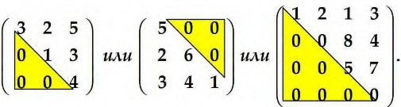
Рис.1
Действия над матрицами.
Сложение и вычитание существует только для матриц одинакового размера, складывают или вычитают соответствующие элементы мат-
3 12 2 8
риц. Например, пусть
A 1
4 ,
B
0 3 ,
C 1 2 .
3 0
6 5 1 7
Тогда:
3 12 2 8 1 4 3 12 2 8 5 20
A B 1 4 0 3 1 A B 1 4 0 3 1 7 .
1 ,
6 5 1 7 5
2 6 5 1 7 7 12
Матрицы A C
и B C
не существуют, т.к. А и С, а также В и С – матри-
цы разного размера.
При умножении или делении матрицы на число все её элементы умножают или делят на это число, например:
2 1 3 10 5 15 2 1 3
2 1
3 3 1
5 , : 3 .
4 0 1 20 0 5 4 0 1 4 0 1
3 3
4
Следствие: общий множитель всех элементов матрицы можно выносить за
знак матрицы, например,
2 8 1 4
2 .
6 14 3 7
Умножение матриц.
Матрицы можно перемножать только в том случае, когда число столбцов первой матрицы равно числу строк второй.
Пусть хотим умножить матрицу А (размера
m k ) на матрицу В (размера
k n ), т.е. вычислить C A B . Матрица С имеет размер
m n . Таким обра-
зом,
Amk Bkn Cmn .
Для нахождения элемента с
ik
матрицы С нужно мысленно поставить верти-
кально строку № i матрицы А и приложить её к столбцу № k матрицы В, пе- ремножить соответствующие элементы и сложить полученные произведения
– см. схему на рисунке 2:
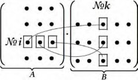
Рис. 2
Пример. Хотим перемножить две матрицы:
0 1
B и
5 1
1 2 0
A .
3 4 5
Произведение
A B не существует, т.к. у первой матрицы А три столбца, а у
второй матрицы В – две строки и 3 2
. Существует произведение
B A C ,
т.к. в этом случае у первой матрицы В два столбца, а у второй матрицы А –
две строки.
Для вычисления элемента c11 разворачиваем вертикально и мысленно прикла-
дываем первую строку матрицы В: 0
1
к первому столбцу матрицы А:
1
,
3
т.е. получим
5
0 1 , перемножаем оказавшиеся рядом элементы и результаты
1 3
11
складываем, c 0 1 1 3 3 .
Поступая аналогично, находим все остальные элементы матрицы С:
0 | 1 1 | 2 | 0 0 1 1 3 | 0 2 1 4 | 0 0 1 5 |
5 | 1 3 | 4 | 5 5 1 1 3 | 5 2 1 4 | 5 0 1 5 |
C
.
3 4 5
8 14 5
Замечание 1. Если А – квадратная матрица и Е – единичная матрица того же
размера, то
A E E A .
Замечание 2. Если существуют оба произведения быть матрицами разных размеров.
A B и
B A , то они могут
Например, если матрица А размера 3 4 и матрица В размера 4 3 , то
A B имеет размер 3 3, а B A имеет размер 4 4 .
Свойства операций сложения, умножения матриц и умножения их на число или :
Коммутативность: А + В = В + А.
Ассоциативность:
A B C A B C A B C,
A B C A B C A B C ,
A A A.
Дистрибутивность:
A BC A C B C,
A B A B,
A A A.
1
Матрицы широко используются во всех областях науки, в том числе и в экономической науке. Многие обозначения при использовании матриц очень компактны, при этом не теряется ни наглядность, ни содержательность записи. Рассмотрим основные понятия, относящиеся к матрицам.
Определители квадратных матриц
Определителем или детерминантом квадратной матрицы А называется число, обозначаемое A , либо , либо det A . Его находят по следующим правилам:
Определитель матрицы первого порядка равен элементу этой матрицы,
т.е., если
A a11 , то
.
a
11
a a
Определитель матрицы второго порядка
A
11 12
вычисляют по
a a
21 2 2
схеме: , т.е. из произведения элементов, стоящих на
главной диагонали, вычитают произведение элементов, стоящих на по-
бочной диагонали:
a11
a12 a a
a21 a2 2
11 2 2 21 12
Определитель квадратной матрицы третьего порядка можно найти по правилу треугольников: со знаком «плюс» берут произведения элемен- тов на главной диагонали и произведения элементов, стоящих в вершинах треугольников с основаниями, параллельными ей. Слагаемые со знаком
«минус» вычисляют аналогично, но относительно побочной диагонали по схеме:
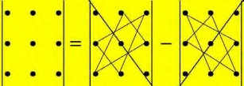
2
Пример.
0 2 0


4 5 6
7 8 9
0 5 9 2 6 7 4 8 0 7 5 0 4 2 9 8 6 0 12 .
Вычисление определителей высоких порядков.
Рассмотрим квадратную матрицу
a a ... a ... a
11 12 1k 1n
a21
a ... a
22 2k
...
a2n
A
... ... ... ... ... ... .
nn
a a ... a ... a
i1 i 2 ik in
... ... ... ... ... ...
a a ... a ... a
n1 n2 nk nn
Минором
Mik
элемента аik
матрицы А называется определитель матрицы, по-
лученной из А вычёркиванием строки № i и столбца № k.
Алгебраическим дополнением
умноженный на 1ik .
Аik
элемента аik
называется его минор,
Т.о. алгебраическое дополнение Аik
совпадает с минором
Mik , если сумма
индексов чётная, и
Аik Mik , если сумма индексов нечётная.
Пример вычисления минора
M21
и алгебраического дополнения
A21 элемента
а21 матрицы А показан на рисунке:
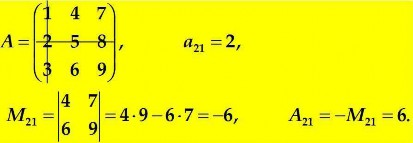
Определитель любого порядка равен сумме произведений элементов любой его строки либо столбца на их алгебраические дополнения.
Это правило называется разложением определителя по элементам его строки (столбца). Строки и столбцы называют рядами определителя. Выгодно выбирать ряд, содержащий много нулей.
| 0 | 2 | 0 |
Пример. Вычислить | 4 | 5 | 6 |
| 7 | 8 | 9 |
3
.
Разложим определитель по элементам первой строки, т.к. в ней два нуля:
0 A 2 A 0 A 2 M
11 12 13 12


2 4 6
7 9
2 4 9 7 6 2 36 42 12.
Ранее этот же ответ был получен по правилу треугольников.
Свойства определителей
Определитель не меняется при замене строк столбцами с тем же номером, т.е. определители исходной и транспонированной матриц совпадают.
Определитель изменяет знак при перестановке двух параллельных рядов.
Определитель, имеющий 2 одинаковых параллельных ряда, равен нулю.
Определитель равен нулю, если любой его ряд состоит из нулей.
Общий множитель элементов любого ряда можно вынести за знак опреде- лителя, например, на схеме внизу выделены ряды, из которых вынесен об- щий множитель:

1 2 3
1 2 3 1 2 1 1 1 1
4 8 6
2
4 3 2 3 2 4 1
2'-_3__ 2 2 2 1
2
7 8 9 7 8 9 7 8 3
12 7 4 3
12 1 2 3 2 4 1 11 7 7 2 1 2 1 3 4 11 36.
Определитель не изменится, если к элементам одного ряда прибавить соответствующие элементы параллельного ряда, умноженные на любое


число например: 1 3
2 4
4 6 2 . Прибавим к элементам первой строки
соответствующие элементы второй, умноженные на 2, и найдём новый опре-


делитель: 1 2 2 3 4 2 5 11
20 22 2

. Ответы совпали.
2 4 2 4
4
Если элементы любого ряда определителя являются суммой двух слагае- мых, то определитель равен сумме соответствующих определителей:


c d a c a d .
g h b g b h


Если А и В − матрицы одинакового порядка, то определитель произведе- ния этих матриц равен произведению их определителей, т.е.
даже если A B B A .
A B
B A
A B ,
Определитель треугольной или диагональной матрицы равен произведе- нию её диагональных членов, например,
1 254 348
0 2 576
0 0 3
1 2 3 6 ,
1 2 3 4 24 .
Обратная матрица
Рассмотрим квадратную матрицу n - ого порядка. Она называется невырожден-
ной, если её определитель
A
0 . Для невырожденной матрицы А суще-
ствует обратная матрица, обозначаемая A1 . Матрица A1 называется обратной
матрице А, если выполняются условия A A1 A1 A E , где Е – единичная матрица того же порядка.
Рассмотрим методы нахождения обратной матрицы.
Метод присоединённой матрицы
Составим матрицу Aɶ из алгебраических дополнений
Аik элементов aik
исходной
A A ... A
11 12 1n
матрицы А:
Aɶ A21 A22 ... A2n .
... ... ... ...
A A ... A
n1 n2 nn
Транспонированная матрица
Aɶ T
называется присоединённой матрицей. Тогда
5
A A ... A
11 21 n1
A1
1 Aɶ T
1 A12 A22 ... An2 .
... ... ... ...
A A ... A
1n 2n nn
Пример.
1 2
A
3 4
. Найти
A1 , если она существует.
Решение.
1 2

3 4
1 4 2 3 2 0
, следовательно,
A1 существует. Нахо-
дим алгебраические дополнения элементов матрицы:
A M
4,
A M
2,
11 11 21 21
A M 3, A M
1.
12 12 22 22
1 A A
1 4
2
2 1
A1
11 21
3 1 .
A12
A22
2 3 1
Метод Гаусса
2 2
Составляем расширенную матрицу, приписывая к матрице А единичную матри- цу Е того же порядка. Приписанную матрицу будем отделять вертикальной чер- той от основной матрицы.
Затем, используя элементарные преобразования строк матрицы (перестановка, умножение всех элементов строки на число 0, добавление ко всем элементам строки соответствующих элементов другой строки, умноженных на одно и то же число), добиваемся, чтобы на месте матрицы А возникла единичная матрица Е.
Тогда на месте Е автоматически возникает
A1 .
Матрицы А и В называются эквивалентными и обозначаются A ∼ B , если одна получена из другой элементарными преобразованиями её рядов.
Пример. Рассмотрим снова матрицу
1 2
A . Вычислим
3 4
A1 методом Гаус-
са. Составляем расширенную матрицу. Справа от матрицы записываем действия, производимые с её строками (строки нумеруем римскими цифрами):

1 2 1 0
6

∼ 1 2 1 0 ∼
3 4 0 1 II I 3 0 2 3 1 II : 2
1 2 1 0
I II 2
1 0 2 1
2 1

∼
3 1 ∼
3 1 ;
A1
3 1 ,
0 1
0.1
2 2
E '-2 _ __2
2 2
что совпадает с предыдущим результатом.
A1
1
.Линейные модели, сводящиеся к системам алгебраических линейных уравнений, c достаточно высокой точностью соответствуют описываемым ими явлениям, с их помощью решаются многие управленческие задачи. Рассмотрим основные понятия, относящиеся к таким системам.
Система уравнений вида
a 11 x 1 a 12 x 2 ... a 1 n x n b 1
a x a x ... a x b
21 1 22 2 2 n n 2
i i i i i i i i i i i i
a m1 x 1 a m2 x 2 ... a mn x n b m
называется системой m линейных алгебраических уравнений с n неизвестными.
Числа
a ik
i 1, 2, ..., m ;
k 1, 2, ..., n
называются коэффициентами си-
стемы, bi
свободными членами, xk
неизвестными.
В матричной форме такая система записывается в виде A X B , где
a 11 a 12
a a
... a 1 n
... a
x 1
x
b1
b
A
21 22 2 n ;
X
2 ;
B
2 .
... ... ... ...
...
...
a
a
... a
m
x
b
1 m2
mn
n m
Матрица А называется матрицей системы.
Расширенная матрица системы получается из А добавлением столбца свободных членов:
a 11 a 12
a a
...
...
a 1 n b1
a b
21 22 2 n 2 .
... ... ... ... ...
a a ... a b
m1 m2 mn m
Решением системы называется всякий набор чисел, подстановка которых в урав- нения вместо неизвестных обращает все уравнения в верные равенства.
2
Совместной называется система, имеющая хотя бы одно решение, в противном случае система несовместна.
Определённой называется система, имеющая единственное решение, а имеющая более одного решения – неопределённой.
Эквивалентными называются системы, имеющие одинаковое решение, они полу- чаются при элементарных преобразованиях строк расширенной матрицы.
Решение систем линейных уравнений по формулам Крамера
Этим методом можно решать лишь такие системы, в которых число уравнений совпадает с числом неизвестных. При этом матрица А – квадратная, её опре- делитель ∆ называется определителем системы. Рассмотрим систему n урав-
нений с n неизвестными:
a 11 x 1 a 12 x 2 ... a 1 n xn b 1 ,
a x a x ... a x b ,
21 1 22 2 2 n n 2
(1)
,
a n1 x 1 a n2 x 2 ... a nn x n b n.
a 11 a 12 ... a 1 n a 21 a 22 ... a 2 n
Если
0 , то по теореме Крамера система имеет един-
... ... ... ...
a n1
a n2
...
a nn
ственное решение, определяемое формулами Крамера:
k
x k ; k 1, 2, ..., n,
(2)
где k
определитель, получаемый из заменой столбца № k (т.е. столбца
коэффициентов при соответствующем неизвестном) столбцом свободных членов
1
b
b2
B .
...
b n
Пример 1. Решить систему
3x 2y 6z 11
2x 3y 5z 11
x y z 6
3
по формулам Крамера.
Решение. По правилу треугольников находим:


3 2 6
2
3 5
9 10 12 18 15 4 48,
1 1 1
11 2 6
1
11
3 5
33 60 66 108 22 55 48,
6 1 1
3 11 6
2
2 11 5
1 6 1
33 55 72 66 22 90 96,

3 2 11
2
3
3 11 54 22 22 33 24 33 144,
1 1 6
x 1
48
1,
y 2
96
2,

z 3
144
3.
48
48
48
Пример 2. Рассмотрим и решим с помощью системы линейных уравнений сле- дующую задачу: из определенного листового материала необходимо выкроить 360 заготовок типа А, 300 заготовок типа Б и 675 заготовок типа В. При этом можно применять три способа раскроя. Количество заготовок, получаемых из каждого листа при каждом способе раскроя, указано в таблице:
Тип заготовки | Способ раскроя |
1 | 2 | 3 |
А | 3 | 2 | 1 |
Б | 1 | 6 | 2 |
В | 4 | 1 | 5 |
Требуется найти сколько листов материала нужно для каждого способа раскроя. Решение. Запишем в математической форме условия выполнения задания.
Обозначим через x , y, z
4
количество листов материала, раскраиваемых соответ-
ственно первым, вторым и третьим способами. Тогда при первом способе рас-
кроя x листов будет получено 3x
тьем – z .
заготовок типа А, при втором – 2y
, при тре-
Для полного выполнения задания по заготовкам типа А должно выполняться ра-
венство:
3x 2y z 360 .
Аналогично для второго и третьего способов раскроя получаем уравнения:
x 6y 2z 300, 4x y 5z 675 . Решаем систему уравнений
3x 2y z 360,
x 6y 2z 300,
4x y 5z 675.
Полученная система уравнений выражает в математической форме условие вы- полнения всего задания по заготовкам А, Б и В. Решаем систему по формулам Крамера:


3 2 1
1 6 2
4 1 5
67,
,
360 2 1

300 6 2
1
675 1 5
6030,
x 1
1005
6030 90,
67
Ответ.
1005,
2
4020,
3
x 90, y 15, z 60.
y 2
z 3
15,
67
4020 60.
67
Решение систем линейных уравнений методом обратной матрицы Так можно решать лишь системы, в которых число уравнений совпадает с чис- лом неизвестных. Рассмотрим систему (1) и предположим, что её определитель
0 , следовательно, обратная матрица A1 существует. Запишем равенство
в матричной форме
A X B
и умножим слева обе части на A1 :
5
(3)
Поскольку
то из (4) и (5) получим
A1 AX A1B . (4)
A1 AX A1 AX EX X , (5)
X A 1 B . (6)
Пример. Методом обратной матрицы решить систему
x 1 2x 2 5,
3x 1 4x 2 11.
Решение.
1 2
A ,
B 5 ,
1 2
4 6 2 .
3 4 11
3 4
Найдём сначала обратную матрицу методом присоединённой матрицы.
Вычисляем алгебраические дополнения
Aik
элементов aik
матрицы A .
A11 4,
A12 3,
A21 2,
A22 1 .
1 A A
1 4
2
2 1
A1
11 21
3 1 .
A12
A22
2 3 1
По формуле (6) находим:
2 2
2 1
5
2 5 1 11
1
X A 1 B
3 1 3 1
.
11
5 11
2
2 2 2 2
Получили:
x 1 1;
x 2 2 .
1
Сначала рассмотрим вспомогательные понятия. Назовём строки и столбцы рядами матрицы. Из матрицы А размера m n можно получить вычёркиванием произволь-
ных рядов квадратные матрицы размера
k k ,
где k min m, n.
Определители таких квадратных матриц называют минорами порядка k и обо-
значают
Mk . Например из матрицы А размера
3 4 можно получить квадратные
матрицы размера 1 1, 2 2, 3 3 . Их определители будут соответственно мино- рами I,II и III порядка.
2 1 4 2
Пример. Рассмотрим матрицу A 3 5 7 1
9 8 0 6
и найдём её миноры.
Миноры I порядка – все элементы матрицы:
M1 2,
M1 3
и т.д.
Миноры II порядка получим, вычёркивая из А любую строку и 2 столбца, например, вычеркнули III строку и III и IV столбцы получили минор

2 1
M 7 .
2 3 5
При вычеркивании II строки и I и III столбцов получим минор


1 2
M 10 и т.д.
2 8 6
Миноры III порядка получим, вычёркивая из А любой столбец, например,
| 2 | 4 | 2 |
|
второй: M 3 | 3 | 7 | 1 | 84 36 126 72 78 . |
| 9 | 0 | 6 |
|
Рангом матрицы А называют наивысший порядок её отличных от нуля миноров.
Ранг обозначают
r A
или
rang A. Из определения следует:
Ранг не превосходит меньшего из размеров матрицы:
r A min m, n;
r A 0 только, когда все элементы матрицы равны нулю;
r A n для квадратной матрицы порядка n, если её определитель
0 .
2
Базисным называют каждый отличный от нуля минор, порядок которого равен рангу матрицы. Таких миноров может быть несколько.
Пример. Найти ранг матрицы: A
3
1
0 0
Решение. Поскольку в данной матрице 3 строки и 4 столбца, её ранг не превзой-
дёт меньшего из этих чисел, т.е.
r A 3 .
Все миноры третьего порядка равны нулю, т.к. содержат нулевой столбец. Имеет- ся отличный от нуля минор II порядка, его элементы выделены в матрице.


3 6
M 15 0 . Следовательно ранг матрицы r A 2 . Этот минор – ба-
2 1 3

зисный. Есть ещё базисный минор M 2 4 10 0 .
2 1 3


Не является базисным минор M 2 4
2 3 6
0 .
Находить ранг матрицы перебором всех её миноров долго. Для облегчения задачи используют преобразования матрицы, сохраняющие её ранг:
Отбрасывание нулевого ряда.
Умножение всех элементов ряда на число
Перестановка двух параллельных рядов.
Транспонирование матрицы.
0 .
Добавление к каждому элементу ряда соответствующих элементов па- раллельного ряда, умноженных на любое число.
Матрицы A и B называют эквивалентными и обозначают A ∼ B , если одна по-
лучается из другой этими преобразованиями.
Ступенчатой называют матрицу, у которой элементы на главной диагона- ли отличны от нуля, а под диагональю – нули. Нули получают последовательно в I, II, и т.д. столбцах, двигаясь слева направо. Такая матрица схематично
3
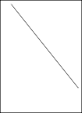
i i i
i i i
0 i i
i
изображена на рисунке:
i i i
0
i i i .
k
0
i i i
0 0 i
0
k
i i i
Способ нахождения базисного минора
Нужно, используя преобразования, сохраняющие ранг матрицы, привести её к ступенчатому виду. Если в матрице останется k строк, то её ранг равен k , а пер- вые k столбцов слева образуют базисный минор (он обведён на рисунке).
0 4 10 1
Пример. Дана матрица: A 4 0 2 5 . Найти её ранг и базисный минор.
2 2 4 3
1 3 7 2
Решение. Переместим вверх последнюю строку, чтобы получить для удобства единицу в верхнем левом углу матрицы. Будем получать под главной диагональю нули последовательно в первом, втором и т.д. столбцах и воспользуемся преобра- зованиями, не меняющими ранг матрицы. Справа от матрицы записываем дей- ствия, проводимые с соответствующими строками.
1 2
A ∼ 0
4 0
2 5 III IV 2 0 4
10
1 ∼
1 III II
2 2 4 3 IV I 2 0 4 10 1 IV III
1 3 7 2
2
0 | 4 | 10 | 1 | ∼ | 1 | 3 | 7 |
0 | 0 | 0 | 0 | | 0 | 4 | 10 |
0 | 0 | 0 | 0 |
|
|
|
|
1
∼ .
Т.к. осталось 2 строки, то
r A 2 и слева автоматически получился базисный

минор M 1 3
2 0 4
4 0
, который обведён. Имеются ещё базисные миноры
4


1 7 1 2
M 10,
2 0 10
M 1 .
2 0 1
Решение системы линейных уравнений методом Гаусса.
Теорема Кронекера-Капелли
Рассмотрим систему m линейных уравнений с n неизвестными:
a x a x ... a x b
11 1 12 2 1n n 1
21 1 22 2 2n 2
a x a x ... a x b
n
i i i i i i i i i i i i
. (1)
a x a x ... a x b
m1 1
m2 2
mn n m
В матричной форме такая система записывается в виде A X B , где
a a ... a x
b
11 12 1n
1 1
a 21
A
a 22
...
a 2n ;
x
2
X ;
B b . (2)
2
... ... ... ...
...
...
am1
am2
...
amn x n bm
Матрица А называется матрицей системы, Х – столбец неизвестных, В – столбец свободных членов.

Запишем расширенную матрицу A , приписав к A справа столбец свободных членов B , который отделяем вертикальной чертой от основной матрицы.
a a ... a b
11 12 1n 1
a a ... a b
(3)
A 21 22 2n 2
... ... ... ... ...
a a ... a b
m1 m2 mn m
Теорема 1 (Кронекера-Капелли). Система (1) совместна, т.е. имеет хотя бы одно решение, если ранг основной матрицы A совпадает с рангом расширенной A , т.е.

r A r A, в противном случае решений нет.
Теорема 2. Система (1) имеет единственное решение, если ранг матрицы A ра- вен числу неизвестных.
Отметим, что для квадратной матрицы А это равносильно тому, что определитель матрицы не должен равняться нулю.
5
Теорема 3. Система (1) имеет бесконечное множество решений, если ранг мат- рицы A меньше числа неизвестных.
Для решения системы линейных уравнений методом Гаусса разбиваем требуе-
мые действия на 4 этапа.

Одновременно вычисляем ранги матриц A и A . Для этого приводим рас- ширенную матрицу A к ступенчатому виду, преобразуя только её строки.
Если
Если
r A r A, то система несовместна, решений нет.

r A r A n , то система совместна и имеет единственное реше-
ние, которое можно найти любым способом. Если
r A r A n система
имеет бесконечное множество решений. Находим базисный минор и остав- ляем только те уравнения, из которых он составлен, остальные отбрасыва- ем.
Главными или базисными называем неизвестные, коэффициенты при которых входят в базисный минор, их оставляем слева. Остальные неиз- вестные называем
свободными и переносим в правые части уравнений. Обозначаем
свободные неизвестные греческими буквами , , и т.д.
Получаем общее решение системы, выражая главные неизвестные через свободные.
Находим частные решения системы, присваивая свободным неизвестным произвольные значения.
Замечание. Поскольку при приведении матрицы к ступенчатому виду мы после- довательно исключаем неизвестные (получая нули в соответствующих местах), метод Гаусса называют также методом последовательного исключения неиз- вестных. Для системы с квадратной матрицей, определитель которой отличен от нуля, матрицу А преобразуют в единичную. При этом получение нулей под глав- ной диагональю называется прямым ходом метода Гаусса, а над ней – обратным ходом.
6
2x 7x 3x x 6
1 2 3 4
Пример. Исследовать и решить систему:
3x 5x 2x 2x
4 .
1 2 3 4
9x 4x x 7x 2
1 2 3 4
Решение. Составляем расширенную матрицу и приводим её к ступенчатому виду:

A ∼
2 | 7 | 3 | 1 6 | 2 | 7 | 3 | 1 | 6 | |
3 | 5 | 2 | 2 4 II 2 | I 3 ∼ 0 | 11 | 5 | 1 | 10 |
9 4 1 7 2 III II 3 0 11 5 1 10 III II

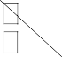
2 7
0 11
2 7 3 1 6
∼ 0 11 5 1 10 ∼ 3 1 6 . (1)
5 1
10
0 0 0 0 0
Слева автоматически получился общий для A и A базисный минор

2 7

M 22 , r A r A 2 . Для простоты расчётов удобнее выбрать
2 0 11
M
другой общий базисный минор
2
2 1 2 , его элементы обведены в формуле


0 1
(1). Берём уравнения, из которых он составлен.
2x1 7x2 3x3 x4 6,
0 x1 11x2 5x3 x4 10.
Главные переменные
вправо:
x1 и
x4 оставляем слева, свободные
x2 и
x3 переносим
2x1 x4 7x2 3x3
6,
2
0 x1 x4 11x2 5x3 10.
3
Присвоим x2
и x3
произвольные значения:
x2 ,
x3 . Найдём из уравне-
ния(3): x 11 5 10 .
4
Из уравнения (2):
7x 3x x 6
2 3 4

7 3 11 5 10 6
x 9 4 8.
1 2 2
Ответ: система имеет бесчисленное множество решений.
7
x 9 4 8,
1
Общее решение:
x2 ,
x3 ,
(4)
x
11 5 10.
4
Частное решение: 1, 1, x 5, x 1, x 1, x 6 .
1 2 3 4
Замечание. Необходимо сделать проверку и подставить общее решение во все уравнения исходной системы. Привести подобные члены и убедиться, что пра- вые части уравнений совпали.
Проверка. Подставляем формулы (4) в исходную систему уравнений.
2 9 4 8 7 3 11 5 10 6,
Получим:
3 9 4 8 5 2 2 11 5 10 4,
9 9 4 8 4 7 11 5 10 2.
Правые части совпали с исходными, решение верное.
1
Исследования показывают, что в окружающем нас мире величины тесно связаны друг с другом, например, цена товара и величина спроса на него, инфля- ция и безработица, объём производства и прибыль и т.д. Поэтому функции широ- ко применяются в экономике, например, функция полезности, производственная функция, функция выпуска, функция издержек, функция спроса.
Рассмотрим основные понятия, связанные с функциями.
Числовые промежутки, отрезки, интервалы
Пусть a и b –- действительные числа.
Множество чисел х, удовлетворяющих неравенствам a x b , называется интервалом a, b.
Множество чисел х, удовлетворяющих неравенствам a x b , называется отрезком a, b.
Множество чисел х, удовлетворяющих неравенствам a x b
либо
a x b , называется соответственно полуинтервалом a, b либо a, b.
Интервалы, отрезки и полуинтервалы называют также промежутками.
Окрестностью точки х0 называется любой интервал, содержащий эту точку.
Интервал x0 , x0 , где > 0, называется - окрестностью точки х0.
Если
x x0 ,
x0 , то точка х попадает в - окрестность точки х0.
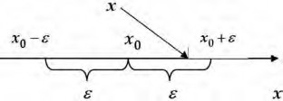
Тогда
x0 x x0 ,
x x0
или
x x0
. Выполнение неравен-
ства
x x0
означает попадание точки х в - окрестность точки х0.
Функция
Функцией
y f x
называется правило, по которому каждому элементу х
множества Х ставится в соответствие единственный элемент у множества Y.
Говорят, что функция
y f x
2
задана на множестве Х, “х” называется аргумен-
том или независимой переменной, “ y ” называется зависимой переменной или
функцией, буква " f " обозначает закон соответствия.
Если элементы множеств Х и Y – действительные числа, то функцию назы- вают числовой. Множество Х называется областью определения функции, а множество Y – областью значений функции. Обычно под областью определения
функции подразумевается область допустимых значений x , т.е. таких x , при ко-
торых функция
y f x
имеет смысл. Например, область определения функции
y 1 x2
– отрезок 1; 1.
Для задания функции нужно указать правило, позволяющее находить y, зная x .
Пример. Дана функция
1 x
y x
1 x
. Найти
4 x
y .
2 x
Решение. Нужно в формуле (1) заменить х выражением 4 x . Получим:
2 x
4 x
4 x
1
2 x

2 x 4 x
6 3
y
2 x 1
4 x
2 x
.
2 x 4 x 2x 2 x 1
Абсолютной величиной или модулем числа х называется само число х, если
x, если x 0;

x 0
и число “–х”, если
x 0 : x
x, если x 0.
Свойства абсолютной величины:
1.  x
x  0 .
0 .


x x
5. x x , если


. y y
y 0 .


x
x x .
6. Если 0 , то неравенства x
и x
равносильны.


4. x y
x y .
7. Неравенство x
и пара неравенств
x

x
равносильны.

Пример. Решить неравенство:
x 3
5 .
Решение. Из свойства (6) находим:
5 x 3 5,
3
8 x 2 .
Способы задания функции
Аналитический, при котором функция задаётся формулой вида
y f x,
например,
y x2
10 x .
Табличный, при котором функция задаётся таблицей, содержащей значения
аргумента х и соответствующие значения
f x, например, таблица синусов.
Графический, при котором функция задаётся графиком, т.е. множеством точек
x, y
плоскости, где х – значения аргумента, y – соответствующие значения
функции
y f x.
Основные свойства функций
1. Функция
y f x , область определения которой симметрична относительно
нуля, называется чётной, если для любых значений х из области её определения
f x
f x
и называется нечётной, если
f x f x . График чётной
функции симметричен относительно оси Oy т.к., по определению, вместе с лю-
бой точкой x, y
он содержит точку x, y
рис.1.
График нечётной функции симметричен относительно начала координат, т.к., по
определению, вместе с любой точкой x, y
он содержит точку x , y
рис. 2.
 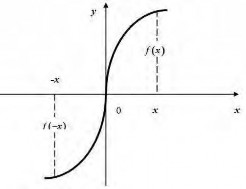
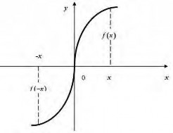
Рис. 1 Рис. 2
Функция, не являющаяся ни чётной, ни нечётной, называется функцией общего вида.
Примеры. Определить тип функции.
4
x3 x3 x3
1. f x , f x f x – нечётная.
x2 1
x2 1
x2 1
2. f x x4 5  x
x ,
,
f x x4 5  x
x
x4 5 x
f x
чётная.


3. f x ex 2ex ,
f x ex 2ex
f x f x
общего вида.
Функция
y f x
называется возрастающей, если для любых двух значе-
ний аргумента x2 x1
из области её определения выполняется неравенство
f x2 f x1 .
Функция
y f x
называется убывающей, если для любых двух значений
аргумента x2 x1
из области её определения выполняется неравенство
f x2 f x1 .
Возрастающие и убывающие функции называются строго монотонными.
Если на отдельных участках области определения функция может оставаться по-
стоянной, т.е. для
x2 x1
выполняются нестрогие неравенства
f x2
f x1
или
f x2 f x1 , то функция называется монотонной, в I случае неубывающей, во
II - невозрастающей.
Интервалы, на которых функция монотонна, называются интервалами монотон- ности.
Например, функция
y x2
при
x ,0 убывает, при
x 0,
возрастает.
Функция
y f x
называется ограниченной на промежутке Х, если
существует такое положительное число
M 0 , что
f x M
x X . В про-
тивном случае функция называется неограниченной. Например, функция
y sin x ограничена на всей числовой оси, т.к. sin 1 для любого действи-
тельного x .
Функция
y f x
называется периодической, если
x X :
f x T f x, (1)
5
где Т – постоянное число. Наименьшее положительное число Т, удовлетворяю- щее этому условию, называется периодом функции. Например, функция
y sin x имеет период T 2 .
Если Т – период, то периодами будут и числа T n , где
n 1, 2, ...
Поэтому
под словом «период» понимают наименьшее положительное число, удовлетворя-
ющее равенству (1).
Пример. Найти период функции
f x sin 4x
, если он существует.
Решение. По формуле (1) находим:
sin 4 x T sin 4x, sin 4x 4T sin 4x 0
. Учитывая, что
sin sin 2 sin
cos
2 2
, получим:
sin 4x 4T sin 4x 2 sin 2T cos 4x 2T 0 . Это равенство будет выполнено
T
2
для любых x , если sin 2T 0, 2T , .
Можно доказать справедливость следующих утверждений:
Если k 0, b любое число, то для функций
f x sin kx b
f x cos kx b
2
T .
k
Добавление к функции произвольной постоянной и умножение её на произ- вольную постоянную не меняет периода функции.
Если функции
y f x и
y f x
имеют одинаковый период, то
1
2
1
2
y f x f x имеет тот же период.
Пусть функции
y f
1
x и
y f
2
x
имеют соответственно периоды T1 и
T2 . Если найдётся положительное число Т, кратное T1 и T2 , т.е.
T n1T1 n2T2
(где n1 и n2 - целые числа), то оно будет периодом функ-
ции
y f x
f x.
1
2
Пример. Найти период функции
f x sin 2x cos 3x .
1
Решение. Периоды функций
f x sin 2x
2
и f x cos 3x
6
соответственно рав-
ны: T
1
2
2
,
T 2 . Найдём наименьшее общее кратное чисел
2 3
2
T1 и T2 :
T n T n T , n n , 3n 2n
. Наименьшие значения n1
и n2 ,
1 1 2 2 1 2 3 1 2
T n1T1 2
удовлетворяющие этому равенству, n 2, n 3 . .
1 2
Сложная функция
Пусть имеется функция
y f u, где
y Y ,
u U . Переменная u x, где
x X . Функция
y f x
называется сложной функцией. Например,
y lg sin x u sin x .
сложная функция, т.к.её можно представить в виде
y lg u , где
Пусть функция
y f x
Предел функции
задана в некоторой окрестности точки
1
x , кроме, может
0
быть, самой точки x .
0
Число А называется пределом функции
f x
в точке
x x0
(или при
x x ),
0
0
если для любого сколь угодно малого числа 0 найдётся такое зависящее от
число 0 , что для всех
x x0
и удовлетворяющих неравенству
x x
вы-
полняется неравенство
f x A
. Этот предел обозначается
lim f x A .
x x0

Число А1 называется пределом функции
f x
слева в точке
x x , если
0
для любого числа
0
существует число
0
такое, что при
, x
0 0
x x
выполняется неравенство
f x A
. Предел слева записы-
1
вают так:
lim f x A либо f x 0 A .
0
x x 0 1 0 1
Число А2 называется пределом функции
f x
справа в точке
x x ,если
0 0
0
2
для любого числа
0
существует число 0
такое, что при
x x , x
выполняется неравенство
f x A
. Предел справа записывают так:
lim f x A
либо
f x
0 A .
xx0 0
2
Из существования
0 2
lim f x A
x x0
следует, что существуют оба односто-
ронних предела, причём А1 = А2 = А и, наоборот, если существуют оба односто-
ронних предела и А1 = А2 = А, то существует
lim f x A . Если А1 А2, то
x x0
lim f x
x x0
не существует.
Пусть функция
y f x
определена на промежутке ; . Число А называ-
ется пределом
f x
при x , и обозначается
A lim f x
x
, если для любого
числа
0
существует число
M 0
такое, что при всех х, удовлетворяющих

неравенству x
M , выполняется неравенство
f x A
2

. Это определение
предполагает неограниченное возрастание x по абсолютной величине.
Если x , то пишут если x , то пишут
A lim f x ,
x
A lim f x.
x
Производная функции
Производная выступает как интенсивность изменения некоторого экономическо-
го объекта (процесса) по времени или относительно другого исследуемого факто- ра и характеризует скорость изменения функции.
Пусть функция
y f x
определена на промежутке Х. Возьмём точку x X .
Дадим значению x приращение
x , тогда функция получит приращение
y
f x x f x. (1)
Производной функции
y f x
называется предел отношения приращения
функции к приращению аргумента, когда приращение аргумента стремится
к нулю. Производную обозначают
y, y , f x,
dy ,
df x
. Т.о. по определе-
нию производной имеем:
f x
lim
x0
x
f x x f x
x
dx dx
или
y
lim
y . (3)
x0 x
Функция, имеющая производную в каждой точке интервала, называется диффе- ренцируемой, а операция нахождения производной − дифференцированием.
Выясним геометрический смысл производной. Пусть на плоскости Оху да-
на непрерывная кривая
y f x. Возьмём на кривой две точки:
M x, f x и
1
M x x, f x x. Прямую ММ1 , проходящую через эти точки, называют
секущей. Касательной к кривой
y f x
в точке М называется предельное по-
ложение секущей при
3
x 0 . Обозначим φ − угол между секущей ММ1 и осью
Ох, α − угол между касательной и осью Ох.
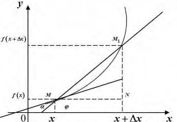
Из MM N :
1
tg
f x x f x
x
. При
x 0
секущая ММ1 переходит в ка-
сательную и
т.е.
lim . Следовательно,
x0
lim
x0
tg tg
т.е.
tg
lim
x0
f x x f x
x
f x.
Геометрический смысл производной: производная
f x
в точке х равна тан-
генсу угла наклона касательной к графику функции
y f x
в этой точке.
Механический смысл производной
Пусть материальная точка М неравномерно движется по некоторой прямой. Каж-
дому значению времени t соответствует расстояние OM S
сированной точки О.
до некоторой фик-
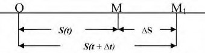
Это расстояние зависит от времени, т.е. S S t . Найдём скорость движения точ-
ки. Если в момент времени t точка занимает положение М, то в момент t t
она
займёт положение М1, где OM
1
S S . Значит перемещение точки за время t
будет
S S t t S t . Отношение S
t
4
выражает среднюю скорость движе-
ния точки за время
:
t v
ср
S
t
. Предел средней скорости при
t 0
называ-
ется скоростью движения точки в данный момент времени или мгновенной ско-
ростью. Обозначая её v , получим
v lim S t t S t St.
t0 t
Механический смысл производной: скорость прямолинейного движения матери- альной точки в момент времени t равна производной от пути S по времени t.
В экономике производная равна скорости изменения экономического процесса относительно исследуемого фактора, например, производительность труда в мо- мент времени t равна производной объёма выпущенной продукции по времени.
Связь между непрерывностью и дифференцируемостью функции:
Если функция дифференцируема в некоторой точке, то она непрерывна в этой точке. Обратное утверждение неверно: Непрерывность − необходимое, но недо- статочное условие дифференцируемости функции.
Вычисление производных
Производную функции
y f x
можно найти по следующей схеме:
Даём аргументу х приращение
x 0
и находим значение функции
f x x.
Вычисляем
y
f x x f x.
Составляем отношение
y .
x
Находим предел этого отношения при
x 0 , т.е.
y lim y .
x0 x
По указанной схеме получена таблица производных. В ней u u x, c const .
1. c 0 2. x 1
3. u u1 u 4. eu eu u
au au ln a u
5
sinu cos u u
cos u sinu u
8. tg u
1
cos2 u
u
9. ctg u
1

sin2 u
u
10.
arc sinu
1
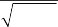
1 u2
u
11.
13.
15.
arc cos u 1 u
1 u2
arc ctg u 1 u
1 u2
log u 1 u
12.
14.
arc tg u 1 u
1 u2
lnu 1 u
u
a uln a
Правила дифференцирования
Пусть
u u x,
v v x,
w w x,
y f u,
c const . Тогда
1. u v u v 2. u v uv uv 3. c u c u
u
v
4.
uv uv
v2
y
Если функция
y f x
задана параметрически, т.е.
x x t, y y t, то y t .
Дифференцирование сложной функции: f u
f u или y y u .
u x u x
x x
t
x
Эластичность функции
Пусть
y f x. Эластичностью
E y
функции у относительно х называется
y
предел отношения относительного приращения функции
y
x
6
к относительному
приращению аргумента
x
при
x 0 :
E y
y x x
lim :
y
lim
x y ,
x x0 y x
y x0 x y
E y x y .
x y


x
x
Эластичность приближённо показывает процентное изменение функции при из- менении аргумента на 1% и используется в экономике при анализе спроса и по- требления. Например, эластичность спроса (или количества покупаемого товара) “у” относительно цены товара (или дохода) “х” показывает, на сколько % изме- нится спрос (или объём потребления) при изменении цены (или дохода) на 1 %.
Спрос называют эластичным при
E y 1
и неэластичным при
E y
1 .
При
E y 1
говорят о спросе с единичной эластичностью.
x
Эластичный спрос означает, что малому процентному изменению цены соответ-
ствует большее процентное изменение спроса, т.е.
y x y x
, а неэластичный − что
малое процентное изменение цены приводит к ещё меньшему процентному измене- нию спроса.
Пример. Зависимость между себестоимостью единицы продукции “у” (тыс. руб.) и
выпуском продукции “х” (млн. руб.) выражается функцией
y 0.5x 80
. Найти
эластичность себестоимости при выпуске продукции, равном 60 млн. руб.
Решение. E y x y x 0.5x 80 0.5x x .
x y 0.5x 80
0.5x 80
x 160
При
x 60, E
60
x60
y 0.6
60 160
, т.е. при выпуске продукции, равном 60 млн.
руб., увеличение выпуска на 1 % приведёт к снижению себестоимости на 0.6 %.
1
Непрерывность функции вещественной переменной
Функция
y f x
называется непрерывной в точке
x0 , если она
удовлетворяет трём условиям:
Функция определена в точке
x0 , т.е. существует
f x0 .
Функция имеет конечный предел при
x x0 .
Этот предел равен значению функции в точке
x0 , т.е.
lim
xx0
f x
f x0 .
Данную формулу можно записать в виде
lim f x
x x0
f lim x .
x x0
Это означает, что для непрерывной функции можно менять местами симво- лы предела и функции.
Если нарушено хотя бы одно из перечисленных условий, то функция не непре- рывна. Точки, в которых нарушается непрерывность, называются точками раз- рыва функции.
Можно доказать, что все элементарные функции непрерывны при всех значе- ниях x , для которых они определены.
Классификация точек разрыва функции
Пусть существуют в точке x x
конечные пределы слева ( A ) и справа ( A )
0 1 2
функции y f x, где A lim f x, A lim f x . Тогда
1 xx 0 2 xx 0
0 0
Если
A1 A2
f x0 , то точка
x0 – точка устранимого разрыва I рода.
Если
A1 A2 , то точка
x0 – точка неустранимого разрыва I рода.
Если хотя бы один из односторонних пределов не существует или равен ∞
в точке
x0 , то
x0 называется точкой разрыва II рода.
Теоремы о непрерывных функциях
Сумма, произведение и частное двух непрерывных функций является не- прерывной функцией (за исключением тех значений аргумента, при кото- рых знаменатель равен нулю).
Если функция
u x
непрерывна в точке
x0 , а функция
y f
u
2
не-
прерывна в точке u0 x0 , то сложная функция
f x
непрерывна в
точке
x0 .
Если функция
y f
x
непрерывна и строго монотонна на отрезке
a ,b
оси Ох то обратная функция
x y
также непрерывна и монотонна на
соответствующем отрезке
c ,d оси Оу.
Исследование функции с помощью производных Достаточные условие возрастания и убывания функции на промежутке:
Функция
y f x
убывает на промежутке, если внутри него f x 0 , и возраста-
ет , если
f x 0 .
Необходимое условие монотонности функции на промежутке:
Если функция возрастает на некотором промежутке, то
f x 0 на этом проме-
жутке, если убывает , то
f x 0 , т.е. в отдельных точках может равняться нулю.
Пример. Исследовать функцию
f x x3 3x 4 на возрастание и убывание.
Решение. ООФ: , , f x 3x2 3 3x 1x 1,
f x 0 при x 1
и x 1. Отметим знаки
f x
справа и слева от каждой из этих точек – рис.3.
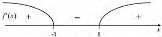
Рис. 3 Ответ: функция возрастает на интервалах , 1 ле 1,1 .
и 1,
и убывает на интерва-
Экстремумы функций
Точка x0 называется точкой максимума функции f x , если в некоторой её
окрестности
f x
f x0 .
3
Точка x1 называется точкой минимума функции f x , некоторой её окрестности
f x
f x1 .
Значения функции в точках x0 и x1 называются соответственно максимум и ми- нимум функции и объединяются общим названием экстремум функции.
Поскольку понятие экстремума связано с достаточно малой окрестностью точки,
его часто называют локальным. На одном промежутке a ,b
иметь несколько экстремумов – рис. 4.
функция может

На рис 4 на промежутке a ,b
Рис. 4
имеется четыре локальных экстремума − 2 макси-
мума (в точках x0 и x2 ) и 2 минимума (в точках x1 и x3 ).
Наибольшее и наименьшее значения функции на промежутке называются гло- бальным экстремумом, т.е. наименьший минимум и наибольший максимум среди всех локальных.
Необходимое условие экстремума: для наличия экстремума функции
y f x в точке x0 необходимо, чтобы её производная в этой точке равня-
лась нулю или не существовала.
Точки, в которых выполнено необходимое условие экстремума, называются кри- тическими или стационарными. Они должны входить в область определения функции.
Достаточные условия экстремума функции:
Пусть
f x
дифференцируемая функция. Тогда, если
f x
при
переходе через точку x0 меняет знак с “+” на “−”, то x0 − точка локального максимума, а если с “−” на “+”, то x0 – точка локального минимума.
Пусть
f x
4
f x0 0 . Тогда, ес-
ли f x0 0 , то
x0 − точка минимума, если
f x0 0 , то x0 − точка
локального максимума.
Задача отыскания глобального экстремума функции на отрезке Нахождение наибольшего и наименьшего значений функции применяется при решении многих практических задач, например, транспортная задача о перевозке груза с наименьшими затратами, организация производственного процесса с це- лью получения максимальной прибыли и т.д.
Пусть функция
y f x
непрерывна на отрезке a ,b. Своё наибольшее и
наименьшее значение она может принять либо во внутренней точке x0 отрезка
a ,b, либо на границе отрезка, т.е. при x0 a
или x0 b . Если
x0 a ,b , то x0
следует искать среди критических точек функции. Отсюда получаем правило нахождения наибольшего и наименьшего значения функции на отрезке a ,b:
Найти критические точки на интервале a ,b.
Вычислить значения функции в критических точках.
Вычислить значения функции на концах отрезка a ,b.
Среди всех вычисленных значений выбрать наибольшее и наименьшее.
Замечание. Если критических точек на отрезке a ,b
нет, это означает, что
функция на этом отрезке монотонна и на одном его конце принимает наибольшее значение, а на другом − наименьшее.
Выпуклость графика функции. Точки перегиба
График дифференцируемой функции
y f x
называется выпуклым вниз на ин-
тервале a ,b, если он расположен выше любой её касательной на этом интервале, и называется выпуклым вверх – если расположен ниже любой её касательной на этом интервале. Любая дуга графика выпуклой вверх на интервале a ,b
5
функции лежит выше хорды, соединяющей концы дуги, а дуга графика выпуклой вниз функции − ниже хорды – см. рисунок:
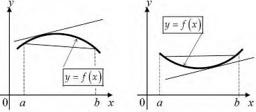
Достаточные условия выпуклости функции
y f x :
Если
f x 0 внутри некоторого промежутка, то функция выпукла вниз на этом
промежутке, если
f x 0 − то выпукла вверх.
Точкой перегиба называется точка графика, разделяющая интервалы с разной вы- пуклостью. В окрестности этой точки кривая лежит по разные стороны от касатель- ной, т.е. перегибается через касательную.
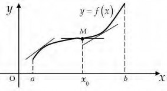
На рисунке кривая
y f x
выпукла вверх на интервале a , x0
и выпукла вниз на
интервале x0 ,b,
M x0 , f x0
− точка перегиба.
Необходимое условие перегиба в точке
M x0 , f x0 :
f x0 0 .
Достаточное условие перегиба в точке
M x0 , f x0 :
f x
меняет знак при
переходе через точку x0 , в которой она равна нулю или не существует.
Асимптоты кривых
Асимптотой графика функции называют прямую, расстояние до которой от
6
лежащей на кривой точки стремится к нулю при неограниченном удалении этой точки по кривой от начала координат.
Вертикальной асимптотой графика функции
y f x
называют прямую
x a , если либо lim f x , либо
xa
lim f x , либо
xa0
lim f x . Верти-
xa0
кальные асимптоты функции следует искать в точках разрыва II рода или на кон- цах её области определения − рис. 1.
Горизонтальной асимптотой графика функции
y f x
называют прямую
y b , если существует конечный предел lim f x b
x
− рис. 2.
Наклонной асимптотой графика функции
y f x
называют прямую
y kx b , если
f x
определена при достаточно больших x и существуют конеч-
ные пределы k lim f x 0 , b lim f x kx − рис. 3. Если хотя бы один из этих
x x
x
пределов не существует или равен , то наклонных асимптот нет.
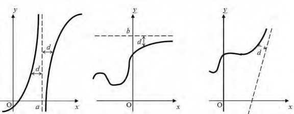
Рис. 1 Рис. 2 Рис.3
Замечание. Если конечен только один из пределов при x или при x , то наклонные асимптоты могут быть односторонними (рис. 2, 3). Горизонтальная асимптота − частный случай наклонной при k 0 . Асимптоты могут быть разными
при x и при x , поэтому эти случаи рассматривают отдельно.
1
Функции многих переменных Точечные множества в N-мерном пространстве
Множество всевозможных упорядоченных совокупностей n веще- ственных чисел (х1, х2, …хn) называют N-мерным координатным про- странством. Каждую такую упорядоченную совокупность называют точкой n-мерного пространства, а сами числа – ее координатами.
Например, плоскость – двумерное координатное пространство, в ко- тором любая совокупность двух вещественных чисел определяет точку (ко- ординаты точки на плоскости можно обозначить (х1, х2), а не только (х, у), как это было принято при изучении курса планиметрии в рамках школьной программы). Прямая – одномерное координатное пространство. Координаты точки в трехмерном пространстве можно обозначить (х1, х2, х3) или (х, у, z). Для координат можно использовать различные обозначения, но при этом число координат должно соответствовать размерности пространства (т.е. в двумерном пространстве – две координаты, на прямой – одна координата, в трехмерном пространстве – три координаты, в десятимерном – десять коор- динат и т.д.). Отметим, что если пространства размерности до трех включи- тельно можно зрительно представить себе и даже изобразить, то простран- ства большей размерности представляют собой научную абстракцию.
n
N-мерное координатное пространство называют евклидовым, если между двумя любыми его точками X(1) = (х1(1), х2(1), …х (1)) и X(2) =
= (х1(2), х2(2), …хn(2)) определено расстояние, определяющееся соотношением
(x(1) x(2) )2 (x(1) x( 2) )2 ...(x(1) x(2) )2 .
1 1 2 2 n n
1 2 n
1
2
n
2
n
Множество всех точек n-мерного пространства, удаленных от задан- ной точки X(0) = (х (0), х (0), …х (0)) на расстояние, меньшее R, называют от- крытым n–мерным шаром радиуса R с центром в точке X(0)., т.е. для всех
точек открытого шара
(x1
x(0) )2 (x
x(0) )2 ...(x
x(0) )2
R .
2
Если это неравенство выполняется, как нестрогое (т.е. расстояние не
больше R:
(x1
x(0) )2 (x
x(0) )2 ...(x
x(0) )2
R ), то шар называют
1
2
n
2
n
замкнутым, или просто шаром.
Множество всех точек пространства, равноудаленных от заданной точки, называют сферой с центром в заданной точке, т.е. для любой точки
сферы
(x1
x(0) )2 (x
x(0) )2 ...(x
x(0) )2
R , где R – радиус сферы.
1
2
n
2
n
Например, замкнутый шар на плоскости представляет собой круг, т.е. множество точек, удаленных от центра на расстояние, не большее радиуса. Сфера на плоскости представляет собой окружность. Замкнутый шар на пря- мой – это отрезок (центр – его середина, радиус – половина длины). Сфера – концы этого отрезка. В трехмерном пространстве шар и сферу легко предста- вить себе визуально. В пространствах большей размерности они представля- ют собой научную абстракцию.
Следует отметить, что если к открытому шару присоединить сферу того же радиуса с тем же центром, то будет получен замкнутый шар. Напри- мер, круг на плоскости – это открытый круг вместе с окружностью.
Всякий шар, содержащий точку X(0), называется окрестностью точки X(0). Открытый шар радиуса > 0 с центром в точке X(0) называют - окрестностью точки X(0). Точки, в любой -окрестности которых содержатся точки, как принадлежащие множеству, так и не принадлежащие ему, назы- ваются граничными. Например, для шара любая точка соответствующей сферы (с тем же центром и радиусом) является граничной. Если множество содержит все свои граничные точки, оно называется замкнутым.
Точка является внутренней для некоторого множества, если суще- ствует некоторая ее -окрестность, все точки которой принадлежат этому множеству. Точка является внешней для некоторого множества, если суще- ствует некоторая ее окрестность, все точки которой не принадлежат этому множеству. Граничные точки не являются ни внешними, ни внутренними.
3
Множество точек D n-мерного пространства называется выпуклым, если для любых двух точек X(1) и Х(2), принадлежащих этому множеству, от- резок, соединяющий эти точки, также, целиком принадлежит этому множе- ству, т.е. для любых X(1), Х(2) D точка Х = X(1) + (1 - )Х(2) D, где [0;1].
Например, круг или отрезок – выпуклые множества точек, а окруж- ность – невыпуклое. На рисунке ниже изображены примеры фигур, множе- ства точек которых относятся к выпуклым или невыпуклым множествам.
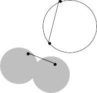
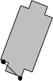
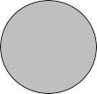
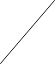
Выпуклые множества Невыпуклые множества Х(2)
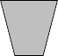
Х(1)
Х(2)
Х(1)
Х(1)
Х(2)
В определении выпуклого множества формула Х = X(1) + (1 - )Х(2) ( [0;1]) представляет собой формулу отрезка с концами X(1) и Х(2), которая при значении параметра = 0 приводит к получению конца Х(2), а при значе- нии параметра = 1 приводит к получению конца Х(1). При любых других значениях [0;1] будет получена внутренняя точка отрезка, причем если
= ½, то будет получена его середина, если = 1/3, то отрезок будет разбит этой точкой в пропорции 1:2, начиная от точки Х(2) (т.е. будет отсчитана треть длины отрезка от этого конца) и т.д.
Например, возьмем точки X(1) = (1; 0) и Х(2) = (3; 2). Формула отрезка между ними примет вид X(1) + (1 - )Х(2) = *(1; 0) + (1 - )*(3; 2) =
= (*1 + (1 - )*3; *0 + (1 - )*2) = ( + 3 - 3; 2 - 2) = (3 - 2; 2 - 2), при-
чем вместо в этой формуле можно подставлять любое число на промежутке
[0;1]. Чтобы получить середину отрезка, надо взять = ½, в результате чего
4
мы получим точку (3 – 2*0,5; 2 - 2*0,5) = (2; 1). Если взять, например, зна- чение = 0,05, то получим точку (3 – 2*0,05; 2 - 2*0,05) = (2,9; 1,9). Она от- считает на отрезке 5/100 или 1/20 его длины от конца Х(2), т.е. разобьет отре- зок в пропорции 1:19. И т.д. Рассмотренные точки отображены на рисунке ниже:
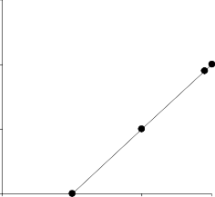
3 y
Х(2) = (3; 2)
2
(2,9; 1,9)
(2; 1) - середина отрезка
1
X(1) = (1; 0)
0
0 1 2 x 3
Отметим, что один и тот же отрезок можно описать двумя разными формулами (можно поменять его концы местами, т.е. отсчитывать долю дли- ны отрезка от другого конца).
Понятие функции нескольких переменных
Если каждой точке X = (х1, х2, …хn) из множества {X} точек n– мерного пространства ставится в соответствие одно вполне определенное значение переменной величины z, то говорят, что задана функция n пере- менных z = f(х1, х2, …хn) = f (X).
При этом переменные х1, х2, …хn называют независимыми перемен- ными или аргументами функции, z - зависимой переменной, а символ f обозначает закон соответствия. Множество {X} называют областью опре- деления функции (это некое подмножество n-мерного пространства).
Например, функция z = 1/(х1х2) представляет собой функцию двух пе- ременных. Ее аргументы – переменные х1 и х2, а z – зависимая переменная. Область определения – вся координатная плоскость, за исключением прямых
5
х1 = 0 и х2 = 0, т.е. без осей абсцисс и ординат. Подставив в функцию любую точку из области определения, по закону соответствия получим определен- ное число. Например, взяв точку (2; 5), т.е. х1 = 2, х2 = 5, получим z = 1/(2*5) = 0,1 (т.е. z(2; 5) = 0,1).
Функция вида z = а1х1 + а2х2 + … + аnхn + b, где а1, а2,…, аn, b - посто- янные числа, называют линейной. Ее можно рассматривать как сумму n ли- нейных функций от переменных х1, х2, …хn. Все остальные функции называ- ют нелинейными. Например, функция z = 1/(х1х2) – нелинейная, а функция z = х1 + 7х2 - 5 – линейная.
Графиком функции двух переменных z = f(x, у) называется множе- ство точек трёхмерного пространства (х, у, z), аппликата z которых связана с абсциссой х и ординатой у функциональным соотношением z = f (x, у). Этот график представляет собой некоторую поверхность в трех- мерном пространстве (например, как на рисунке ниже):
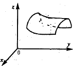
Можно доказать, что если функция – линейная (т.е. z = ax + by + c), то ее график представляет собой плоскость в трехмерном пространстве.
Если переменных больше двух (n переменных), то график функции представляет собой множество точек (n+1)-мерного пространства, для кото- рых координата хn+1 вычисляется в соответствии с заданным функциональ- ным законом. Такой график называют гиперповерхностью (для линейной функции – гиперплоскостью), и он также представляет собой научную аб- стракцию (изобразить его невозможно).
6
Поверхностью уровня функции n переменных называется множе- ство точек в n–мерном пространстве, таких, что во всех этих точках значение функции одно и то же и равно С. Само число С в этом случае называется уровнем.
Обычно для одной и той же функции можно построить бесконечно много поверхностей уровня (соответствующих различным уровням).
Для функции двух переменных поверхность уровня принимает вид
линии уровня.
Например, рассмотрим z = 1/(х1х2). Возьмем С = 10, т.е. 1/(х1х2) = 10. Тогда х2 = 1/(10х1), т.е. на плоскости линия уровня примет вид, представлен- ный на рисунке ниже сплошной линией. Взяв другой уровень, например, С = 5, получим линию уровня в виде графика функции х2 = 1/(5х1) (на рисун- ке ниже она показана пунктиром):
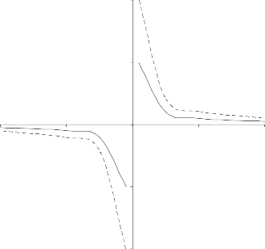
2
х2
1/(х1х2) = 5
1
1/(х1х2) = 10
0
-2 -1 0
1 х1 2
-1
-2
Рисунок - Линии уровня функции z = 1/(х1х2)
Рассмотрим еще один пример. Пусть z = 2х1 + х2. Возьмем С = 2, т.е. 2х1 + х2 = 2. Тогда х2 = 2 - 2х1, т.е. на плоскости линия уровня примет вид прямой, представленный на рисунке ниже пунктиром. Взяв другой уровень,
7
например, С = 4, получим линию уровня в виде прямой х2 = 4 - 2х1 (на рисун- ке ниже показана сплошной линией). Линия уровня для 2х1 + х2 = 3 показана на рисунке ниже точечной линией.
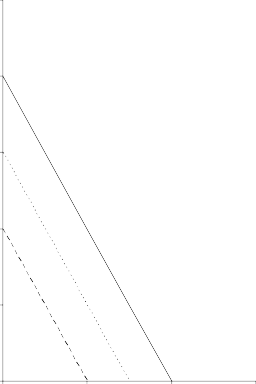
5 х2
4
3 2х1 + х2 = 4
2х1 + х2 = 3
2
2х1 + х2 = 2
1
х1
0
0 1 2 3
Рисунок - Линии уровня функции z = 2х1 + х2
Легко убедиться, что для линейной функции двух переменных любая линия уровня будет представлять собой прямую на плоскости, причем все линии уровня будут параллельны между собой.
Частные производные функции многих переменных
Возьмем точку X = (х1, х2, …хn). Дадим аргументу х1 приращение х1, аргументу х2 приращение х2 и т.д., аргументу хn приращение хn; тогда функция z = f(x) получит приращение z = f(х1 + х1, х2 + х2, …хn + хn) - f(X). Эту величину называются полным приращением функции в точке X. Если задать приращение только одного из аргументов, то полученные при- ращения функции называю частными. Например,
8
1
x z f(x1 x1 , x2 ,...xn ) - f(X) ,
2
x z f(x1 , x2 x2 ,...xn ) - f(X) ,
n
x z f(x1 , x2 ,...xn xn ) - f(X) - частные приращения.
Частной производной функции нескольких переменных z = f (X) называют предел отношения соответствующего частного приращения функ- ции к приращению рассматриваемого аргумента при стремлении последнего к нулю (если этот предел существует):
lim
x j z
lim
f(x1 , x2 ,..., x j x j ,...xn ) - f(X)
.
x j0 x j
x j0
x j
x
j
Частную производную обозначают z или z/xj.
Из определения частных производных следует, что для нахождения производной z/xj надо считать постоянными все переменные аргументы, кроме одного - xj.
Например, найдем частные производные следующих функций:
Пример 1. z = x ln y + y/x
Чтобы найти частную производную по х, считаем у постоянной вели- чиной. Тогда , zx' = ln y * (x)' + y*(1/x)' = ln y + y*(-1)*x-2 = ln y – y/(x2).
Аналогично продифференцируем эту функцию по у, считая х посто- янной: zy' = x (ln y)' + (1/x)*(y)' = x/y + 1/x
Пример 2. z = xy
Частная производная по х представляет собой производную степен- ной функции, т.е. zx' = yxy-1.
Частная производная по y представляет собой производную показа- тельной функции, т.е. zy' = xyln x.
Понятие частной производной имеет вполне четкий экономический смысл. Поскольку функции нескольких переменных в экономике выражают зависимость некоторой величины от нескольких других факторов (иногда
9
включая время), частная производная выступает как скорость изменения этой величины во времени или относительного другого исследуемого фактора при условии, что остальные факторы не меняются.
Например, пусть магазин продает мороженое – сливочное по 25 руб. за штуку, шоколадное по 30 руб. за штуку и фисташковое по 32 руб. за шту- ку. Обозначим х1 – объем продаж сливочного мороженого (шт.), х2 – объем продаж шоколадного мороженого (шт.), х3 – объем продаж фисташкового мороженого (шт.). Тогда выручку z (руб.) магазина от продажи этих сортов мороженого можно рассчитать с помощью функции трех переменных z = 25х1 + 30х2 + 32х3. Найдем частную производную этой функции по х1: zx = 25. Каков экономический смысл этой величины? Она показывает, на сколько возрастет выручка при единичном изменении продаж сливочного мороженого, при условии, что продажи остальных видов мороженого оста- нутся на прежнем уровне. Иными словами, это скорость изменения общей выручки относительно изменения продаж сливочного мороженого. Анало- гичные рассуждения можно провести для обеих других переменных.
Градиент функции
Из школьного курса математики известно, что вектор на плоскости представляет собой направленный отрезок. Его начало и конец имеют по две координаты. Координаты вектора рассчитываются путем вычитания из коор- динат конца координат начала. Понятие вектора может быть распространено и на n-мерное пространство (вместо двух координат будет n координат).
Градиентом grad z функции z = f(х1, х2, …хn) называется вектор част- ных производных функции в точке, т.е. вектор с координатами (zx1 , zx 2 ,..., zx n ) .
Можно доказать, что градиент функции характеризует направление наискорейшего роста уровня функции в точке.
10
Например, для функции z = 2х1 + х2 (см. рисунок ниже) градиент в любой точке будет иметь координаты (2; 1). Для линейной функции градиент всегда один и тот же в любой точке. Построить его на плоскости можно раз- личными способами, взяв в качестве начала вектора любую точку. Например, можно соединить точку (0; 0) с точкой (2; 1), или точку (1; 0) с точкой (3; 1), или точку (0; 3) с точкой (2; 4), или т.п. Все построенные таким образом век- тора будут иметь координаты (2 – 0; 1 – 0) = (3 – 1; 1 – 0) = (2 – 0; 4 – 3) =
= (2; 1). Из рисунка хорошо видно, что уровень функции растет в направле- нии градиента, поскольку построенные линии уровня соответствуют значе- ниям уровня 4 > 3 > 2.
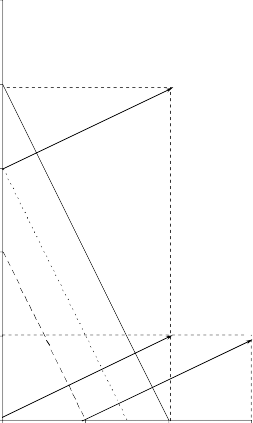
5 х2
4
2х1 + х2 = 4
2х1 + х2 = 3
3
2
2х1 + х2 = 2
1
х1
0
0 1 2 3
Рисунок - Градиент функции z = 2х1 + х2
Если взять в качестве примера нелинейную функцию z = 1/(х1х2), то градиент этой функции уже не будет всегда одинаковым в разных точках. Его координаты - не константы, а определяются формулами (-1/(х12х2); -1/(х1х22)).
1
Явления окружающего нас мира часто протекают под действием множества факторов, среди которых нельзя выделить главные и второстепенные, а просле- дить влияние всех факторов невозможно. Тогда применяется статистический ме- тод изучения, идея которого заключается в том, что изучается не единичное явле- ние, а массовая совокупность однородных явлений. В такой массовой совокупно- сти влияние каждого второстепенного фактора носит случайный характер и в об- щей массе взаимно погашается. В результате появляются статистические законо- мерности. Они не дают возможности предсказать каждое единичное явление, но позволяют достаточно точно описать поведение всей совокупности в целом и на этом основании составить научный прогноз.
С необходимостью изучать массовые совокупности однородных явлений встре- чаются обычно в экономике при анализе темпов роста производства, повышения производительности труда, снижения себестоимости.
Теория вероятностей (ТВ) – математическая наука , изучающая законо- мерности , присущие массовым случайным явлениям. При этом изучаемые явле- ния рассматриваются в абстрактной форме независимо от их конкретной приро- ды. То есть теория вероятностей рассматривает не сами реальные явления, а их упрощённые схемы − математические модели.
Предметом ТВ являются математические модели случайных явлений, ис- ход которых предсказать невозможно. Например, выпадение герба при подбрасы- вании монеты, выигрыш по купленному лотерейному билету, результат измере- ния какой-нибудь величины, длительность работы телевизора и т.п.
Цель ТВ − прогноз в области случайных явлений, влияние на ход этих явлений, контроль их, ограничение сферы действия случайности.
Случайным называется эксперимент, исход которого не вполне однозначно определяется условиями опыта, например, изготовление детали заданных разме- ров, подбрасывание монеты, вытаскивание карты из колоды.
Пусть А – один из возможных исходов случайного эксперимента, например, вы- падение чётного числа очков при подбрасывании игральной кости. Повторяем
опыт n раз и пусть при этом исход А наступает
раз. Относительной частотой
m
A
2
исхода А наз. величину W( A) mA . Если с увеличением n относительная часто-
n
та начинает стабилизироваться и при больших n лишь слегка колеблется около некоторого постоянного числа, то говорят, что опыт обладает свойством устойчи- вости частот.
ТВ изучает математические модели таких случайных экспериментов. Её методы позволяют предсказать средний результат массы случайных экспериментов.
Рассмотрим основные понятия теории вероятностей.
Испытание – реальный или принципиально осуществимый опыт, для которого установлены контролируемые воспроизводимые условия и совокупность всех возможных исходов.
Пусть в результате испытания происходит один из множества взаимно исключа- ющих друг друга исходов 1 , 2 , ..., n , которые будем называть также элемен- тарными событиями. Они образуют пространство элементарных событий
1 , 2 , ..., n .
Случайным событием называют совокупность всех элементарных собы- тий, в результате которых оно наступает. Случайные события обозначают заглавными латинскими буквами А, В, ... . Говорят, что случайное событие А связано с рассматриваемым испытанием, если по каждому исходу можно
точно судить о том, осуществляется оно или нет.
Пример. Испытание – подбрасывание игральной кости.
1, 2, ..., 6.
Событие А − выпадение чётного числа очков,
A 2, 4, 6,
событие В − выпадение числа очков, кратного трём,
B 3,6.

Событие A называется противоположным событию А или дополнением

для А, если оно происходит тогда и только тогда, когда не происходит со- бытие А, т.е. содержит все элементарные события, не вошедшие в А. В
нашем примере A − выпадение нечётного числа очков,
A 1, 3, 5.
Достоверным называется событие U , которое всегда наступает в результа- те испытания, оно содержит всю совокупность элементарных событий,
3
т.е. U , например, U − выпадение любого числа очков от 1 до 6. Досто- верное событие часто обозначают .
Невозможным называется событие V , которое никогда не наступает в ре- зультате испытания, оно не содержит ни одного элементарного события, т.е. V , например, V − выпадение 7 очков. Невозможное событие ча- сто обозначают .
Два события называются несовместными, если наступление одного из них
исключает наступление другого, т.е. они не содержат общих элементар-
ных событий, например, при подбрасывании игральной кости
A 2, 4, 6
и C 1, 5 несовместны.. Несколько событий называются попарно несов- местными, если любые два из них несовместны.
Суммой событий А и В называют событие C A B , состоящее в наступ- лении хотя бы одного из событий А или В, оно содержит все элементар- ные события, входящие в А, в В и общие для А и В. Например, берём одну карту из колоды, пусть А − появление туза, В − появление красной карты,
тогда C A B − появление красной карты или любого туза.
Произведением событий А и В называют событие D A B , состоящее в
совместном наступлении А и В, оно содержит лишь общие для А и В
элементарные события. В предыдущем примере D
красного туза.
A B
A1 , A 2 , ..., A n
образуют полную группу, если в результате испыта-
ния может наступить одно и только одно из них, т.е. у них нет общих исхо- дов (элементарных событий), а в сумме исходы образуют всё пространство
элементарных событий:
A1 A 2 ... A n U .
A
i A j
V ,
i j

Противоположные события А и A всегда образуют полную группу.
При рассмотрении событий удобно использовать диаграммы. Пусть точки внут- ри прямоугольника образуют совокупность всех элементарных событий, полу-
4

ченных в результате испытания, событие А − попадание в закрашенную область. Тогда сумму событий, произведение и A на диаграмме изображают так:
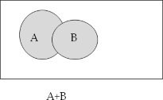 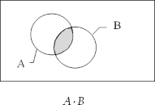 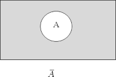
Операции над событиями обладают следующими свойствами:
Переместительное свойство:
A B B A, A B B A .
Сочетательное свойство:
A B C A B C ,
ABC A BC
Распределительное свойство:
A B C AB AC .
Справедливы следующие равенства:

A A U , A U U , U V U ,
A A V , A U A, U V V .
A A A, A V A,
A A A, A V V ,
Вероятность и способы её определения
Каждому случайному событию А поставим в соответствие число
P A , называе-
мое вероятностью события А и характеризующее шансы наступления этого собы- тия в эксперименте.
Статистическая вероятность
Рассмотрим эксперимент с пространством элементарных событий и пусть А −
случайное событие для этого эксперимента. Повторяем опыт n раз, считая, что
результаты каждого не влияют на результаты остальных. Обозначим mA
число
наступлений события А. Дробь P A mA
называется относительной частотой
n n
события А в проведённой серии опытов.
5
Статистической вероятностью события А называется число, около кото- рого колеблется относительная частота события А при достаточно боль-
шом числе опытов,
P A P A .
n
Свойства статистической вероятности:
1. 0 P A 1 , т.к. 0 m n
A
2. P U 1, т.к.
mU n
3. Для несовместных событий
P A B P A P B , т.к.
mA B mA mB

4. P A 1 P A , т.к. m n mA .
A
Классическая вероятность
Рассмотрим эксперимент, у которого n взаимно исключающих друг друга рав- новозможных исходов 1 , 2 ,..., n . Классическую вероятность случайного со-
бытия А определим по формуле
где
P A mA ,
n
mA − количество исходов (элементарных событий), принадлежащих собы-
тию А (они называются благоприятствующими А). Свойства классической ве- роятности совпадают со свойствами статистической.
Пример. Определим двумя способами вероятность выпадения чётного числа оч- ков при подбрасывании игральной кости.
1. Многократно подбрасываем игральную кость, например, n 500 и пусть
при этом 241 раз выпало чётное число очков,
определению вероятности P A 241 0.482 .
500
mA =241. По статистическому
2. Для использования классической вероятности, кость должна быть идеаль-
ной, чтобы исходы были равновозможными. Тогда n 6 ,
P A 3 0.5 .
6
mA = 3,
Аксиомы теории вероятностей
В основу ТВ положена система аксиом, опирающаяся на свойства, присущие классическому и статистическому определению вероятности:
Каждому событию А ставится в соответствие неотрицательное число называемое вероятностью этого события.
6
P(A) ,
Аксиома сложения: если события
A1 , A2 , ..., An
попарно несовместны, т.е.
n n
A A V при i j , то P( A ) P(A ) .
i j i 1 i
i 1 i
Аксиома нормировки: если U − достоверное событие, то P(U) 1 .
Следствия из аксиом:
a) P V 0 .

n
b) P A 1 P A.
Если события
A , A ,..., A образуют полную группу, то
P A 1.
d) 0 P A 1 .
1 2 n
i 1 i
Вероятность − числовая характеристика степени объективной возможности появления данного события при определённых условиях, которые могут по- вторяться неограниченное число раз.
1
Зависимые и независимые события. Условная вероятность
Пусть А и В − события, рассматриваемые в одном опыте. Наступление од- ного из них может влиять на возможность наступления другого. Вероятность со- бытия А при условии, что произошло В, называется условной и обозначается
P A B.
Событие А называется независимым от В, если его вероятность не меняет-
ся в зависимости от наступления В, т.е.
P A B P A.
Следует отметить, что зависимость и независимость событий всегда взаимна:
если А не зависит от В, то и В не зависит от А.
Теорема умножения вероятностей: вероятность совместного наступления двух событий равна произведению вероятности одного из них на условную веро- ятность второго, вычисленную при условии, что первое событие наступило:


P AB P A P B A P B P A B. (1)
P AB

Из формулы (1) получаем
P A B
P B
, (2)
если
P B 0 . Формула (2) при аксиоматическом построении теории принимает-
ся в качестве определения условной вероятности события А при условии, что
произошло событие В. В случае нескольких событий теорема умножения вероят- ностей примет вид
P A A ...A
P A P A A
... P A A A ...A
1 2 n
1 2 1
n 1 2 n1
Пример. В ящике 2 белых и 3 чёрных шара. Наудачу берут 2. Какова вероят- ность, что оба белые (событие В)?
Решение. Первый способ: используем теорему умножения вероятностей.
i
Обозначим A − появление белого шара при i − м извлечении,

i 1,2; B A A , P B P A P A A
2 1 1 .
1 2 1 2 1
5 4 10
2
m C2 1
Второй способ − по классической вероятности:
P B B 2 .
5
n C2 10
Несколько событий называются независимыми, если каждое из них не зависит от произведения любого числа остальных и от каждого в отдельности.
Для независимых событий условные вероятности совпадают с безусловными и
P A A ...A P A P A ... P A
. (4)
1 2 n 1 2 n
Пример. Три студента независимо друг от друга решают одну задачу. Вероятно- сти решения задачи каждым из них соответственно равны 0.5, 0.6 и 0.7. Найти ве- роятность того, что задачу решили только первый и третий студенты (событие А).
Решение. Обозначим
B (i 1, 2,3) − задачу решил студент № i. Событие А за-
i
ключается в совместном наступлении независимых событий B1 , B2 , B3
. По
формуле (4) получим:
A B1 B2 B3 , P A P B1 P B2 P B3 0.5 1 0.6 0.7 0.14 .
Теорема сложения вероятностей для произвольных событий:
P A B P A P B P AB
(5)
Пример. Два стрелка с вероятностями попадания соответственно 0.7 и 0.8 стре- ляют по одному разу в общую мишень. Найти вероятность поражения мишени (событие С).
Решение. Обозначим: событие А − попал первый стрелок, событие В − попал второй. Решим задачу тремя способами.
C A B , причём А и В совместны и независимы. Применяя формулы (5) и
(4), получим:
P C P A P B P AB P A P B P AP B 0.7 0.8 0.7 0.8 0.94.


C AB AB AB , причём слагаемые в правой части равенства являются по- парно несовместными событиями, а сомножители − независимые события. Используя аксиому сложения и формулу (4), получим:
3


P C P AB P AB P AB P AP B P AP B P AP B
0.7 1 0.8 1 0.7 0.8 0.7 0.8 0.14 0.24 0.56 0.94.

Рассмотрим событие C − оба стрелка промахнулись.


C AB, P C P AP B 1 0.71 0.8 0.3 0.2 0.06, P C 1 P C 0.94.
Замечание: если интересующее нас событие А распадается на много вариантов,
то бывает проще найти вероятность противоположного события A и восполь-
зоваться равенством им способом.
P A 1 P A, как поступили при решении задачи треть-

Формула полной вероятности
Пусть об условиях наступления события А можно сделать n взаимно исключаю-
щих предположений (гипотез)
H1 , H2 ,..., Hn
(т.е. А наступает в совокупности с
одной и только одной из гипотез). События
H1 , H2 ,..., Hn
образуют полную
группу, следовательно,
n
P Hi
i 1
1 . Тогда вероятность события А вычисляют по
формуле полной вероятности
n
P A P H
i 1
i P A Hi
(6)

При применении этой формулы можно условно разбить опыт на 2 этапа: гипотезы
H1 , H2 ,..., Hn
исчерпывают все возможные предположения относительно исхо-
дов первого этапа опыта, событие А – один из возможных исходов второго этапа.
Формула Байеса
Пусть об условиях наступления события А можно сделать n взаимно исключаю-
1 2 n
щих предположений (гипотез) H , H ,..., H , и известно, что в результате опыта
событие А произошло. Вероятность того, что при этом имела место гипотеза H ,
k
т.е.
P H A , где
k
k 1, 2,...,n , вычисляют по формуле Байеса:
k
P H A
P H P A H

k k
n
4

k k . (7)
P H P A H
P A
P H
i 1
P A H
i i
Пример. Заказчику поставляют детали 3 фирмы. На долю первой приходится 50% общего объема поставок, а на две другие – соответственно 30% и 20%. Про- цент брака соответственно равен 10%, 5% и 6%. Из поставленных деталей наугад берется одна деталь. Найти: 1) вероятность того, что эта деталь бракованная, 2) вероятность того, что деталь поставлена первой фирмой, если она бракованная.
Решение. Обозначим: событие А – деталь бракованная. Об условиях наступления события А можно сделать три взаимно исключающих предположения (гипотезы)
H – деталь изготовлена i-ой фирмой , где
i
i 1, 2,3 , причём по условию задачи:
1 2 3
P H 0.5, P H 0.3, P H 0.2.
Таким образом, опыт проходит в два эта-
па. На первом этапе фирмы поставляют товар в указанных объёмах, а на втором этапе берётся 1 деталь.
Соответствующие условные вероятности того, что она бракованная равны:


1 2 3
P A H 0.1, P A H 0.05, P A H 0.06 . По формуле полной вероятно-
сти (6) получим:
P A
3
P H
i1
P A H

i i
0.5 0.1 0.3 0.05 0.2 0.06 0.077 .

Ответ на второй вопрос:
P H A P H1 P A H1 0.5 0.1 0.65 .
1 P A 0.077
Схема испытаний Бернулли. Формула Бернулли
Несколько опытов называются независимыми, если вероятность того или иного исхода каждого из них не зависит от результатов остальных опытов.
Примеры: 1) несколько последовательных подбрасываний монеты, 2) несколько последовательных извлечений двух шаров из ящика с белыми и чёрными шарами, если извлечённые шары перед каждым новым извлечением снова возвращают в ящик и шары перемешивают.

Рассмотрим серию из n повторных независимых опытов, в каждом из которых может наступить либо некоторое событие A (успех) с вероятностью p, либо A
(неудача) с вероятностью
5
q 1 p . Такие повторные независимые опыты назы-
ваются испытаниями Бернулли или схемой Бернулли.
Вероятность
того, что в серии из n испытаний Бернулли событие А наступит
P
n,k
ровно k раз, находят по формуле Бернулли:
P Ck pk qn k . (8)
n,k n
k
Число , при котором достигается максимальное значение этой вероятности,
0
называется наивероятнейшим числом наступлений события А и определяется не-
равенствами (если
p 0, p 1 ):
p n 1 1 k p n 1.
0
Если
p n 1 − целое число, то наивероятнейших значений два:
0 0 0
k p n 1, k k
1 .
Распределение вероятностей
между возможными значениями k от 0 до n
P
n,k
называется биномиальным, поскольку по формуле бинома Ньютона
q p C p q
n
k 0
q p 1 , получим
C p q 1
k k n k .
n
k 0
Пример. В магазине проходит акция по продаже некоторого изделия. Для полу- чения приза нужно собрать 5 изделий с особым знаком на этикетке. Этикетки с этим знаком имеют 5% изделий. Найти вероятность того, что придется купить 10 изделий (событие В).
Решение. Из постановки задачи следует, что десятое изделие должно иметь осо- бый знак. Следовательно, из предыдущих 9 этот знак имели 4 изделия. Найдем вероятность этого события по формуле Бернулли (8). Сформулируем условие за- дачи в терминах схемы Бернулли. Проводится серия из 9 повторных независимых опытов (покупка изделия), в каждом из которых событие А (появление изделия с особым знаком) может произойти с одинаковой вероятностью
p 5
1 , q 1 p 19 . Вероятность того, что А наступит 4 раза в 9 опытах
100 20 20
P C4 1 / 204 19 / 205 0.0006092 . Интересующее нас событие В произой-
9,4 9
дёт, если десятое изделие будет иметь особый знак на этикетке, т.е. наступят сра-
6
зу 2 независимых события: из первых 9 изделий 4 имели особый знак и 10-ое то- же его имеет. По теореме умножения вероятностей находим:
9,4
P B p P 1 / 20 0.0006092 0.00003 .
1
Случайные величины. Дискретная случайная величина
Большинство явлений и процессов характеризуется количественными пара- метрами, которые изменяются случайным образом, поэтому случайные величины являются основными объектами изучения и управления.
Под случайной величиной (сокращённо с.в.) понимают величину, прини- мающую в результате опыта то или иное значение, причём заранее неизвестно, какое именно. Случайные величины обозначают заглавными латинскими буквами X, Y, Z,…, а принимаемые ими значения − соответствующими малыми буквами
x , y,
z, ...
С.в. называется дискретной (сокращённо ДСВ), если множество её значе-
ний конечное или счётное, она принимает отдельные изолированные друг от дру- га значения.
Счётным называется бесконечное множество, элементы которого можно пере-
нумеровать с помощью чисел натурального ряда, например,
1 1 1
,... .
1, , ,..., 2
4 9 n
Примеры ДСВ: Х − число очков, выпадающее при бросании игральной ко- сти, Y − количество выстрелов до первого попадания в цель, Z − число вызовов, поступающих на телефонную станцию в единицу времени, S − число выпадений герба при 10 подбрасываниях монеты.
С.в. называется непрерывной (сокращённо НСВ), если множество её значе- ний несчётное, она может принимать любые значения из некоторого промежутка .
Примеры НСВ: X − время безотказной работы прибора, Y − расстояние от центра мишени до пробоины при попадании, Z − дальность полёта снаряда и т.д. Для полного описания случайной величины нужно указать закон её распределе- ния.
Законом распределения случайной величины называется любой способ (табличный, графический или аналитический) задания соответствия между мно- жеством её возможных значений и вероятностями того, что с.в. примет то или иное значение из этого множества.
2
Универсальным способом задания закона распределения для любых слу-
чайных величин является задание функции распределения
F x . Для дискретных
случайных величин можно также задавать закон распределения в виде ряда рас- пределения или многоугольника распределения, а для непрерывных – в виде
плотности вероятности
f x . Рассмотрим подробнее эти способы.
Дискретная случайная величина (ДСВ)
Пусть Х – дискретная случайная величина, имеющая n различных возмож-
ных значений
x1 , x2 , ..., xn . При этом случайные события
A1 X x1 ,
A2 X x2 , ... ,
An X xn
образуют полную группу попарно несовместных событий. Обозначим
p1 , p2 , ..., pn
вероятности этих событий, т.е.
pk PX xk ,
k 1, 2, ..., n .
Таким образом, каждому возможному значению xk
ДСВ Х ставится в соответ-
ствие число
pk , т.е. имеется функциональная зависимость между возможными
значениями ДСВ и соответствующими вероятностями. Эта зависимость является простейшей формой закона распределения ДСВ.
Таблица, в которой перечислены все возможные значения xk
ДСВ Х и указаны
их вероятности pk
называется рядом распределения дискретной случайной
величины Х. Ряд распределения изображен на рис. 1.
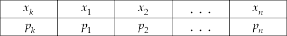
Значения xk
Рис. 1
обычно располагают в порядке возрастания. Поскольку события А1,
А2,...,Аn образуют полную группу, сумма их вероятностей равна единице:
n
k1
pk 1 .
Графически ряд распределения представляют в виде многоугольника распределения, который также называют полигоном распределения. При этом
на оси Ох откладывают
xk , на оси Оу −
pk , точки x , p
3
соединяют ломаной.
k k
Пример. В корзине 3 зрелых и 5 незрелых яблок, наудачу берут 3. Написать ряд распределения ДСВ Х , равной количеству незрелых яблок среди отобранных.
Решение. ДСВ Х может принимать значения 0, 1, 2, 3. Находим соответствующие вероятности:
C C
0 3
p PX 0 5 3 1 C3
1 ,
56
1 2
C C
p PX 1 5 3 2 C3
15 ,

56
8 8 ,
C C
C C
2 1
p PX 2 5 3 3 C3
30 ,
56
3 0
p PX 3 5 3 4 C3
10 .
56
8 8
4
Проверка: p
p p p p
1.
k 1 k
1 2 3 4
Ряд распределения ДСВ Х:
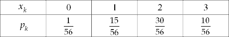
Пример. Построить многоугольник распределения с.в. Х для ряда распределения, заданного таблицей:
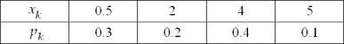
Решение. Многоугольник распределения изображён на рисунке :
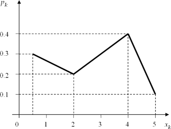
4
Функция распределения случайной величины и её свойства
Ряд распределения можно построить только для дискретной случайной величины, для непрерывной нельзя даже перечислить все её возможные значения. Универ- сальным способом задания закона распределения для любых случайных величин служит функция распределения.
Функцией распределения
F x
случайной величины Х называется функция, ко-
торая для любого действительного значения x равна вероятности события
X x, т.е.
F x P X x, x , . (1)
Геометрически равенство (1) можно истолковать так:
F x
− это вероятность то-
го, что с.в. Х примет значение, которое на числовой оси изображается точкой, ле- жащей левее точки x , т.е. случайная точка Х попадёт в интервал , x :
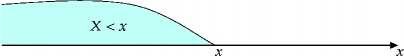
Свойства функции распределения
0 F x 1 , т.к. это вероятность.
2. F
lim F x 0 , т.к. F P X P V 0 , где V – невоз-
x
можное событие.
3. F
lim F x 1 , т.к. F P X P U 1, где U – досто-
x
верное событие.
P a X b F b F a . Доказательство. Обозначим, как показано на рисунке, события:
A X a,
B X b,
C a X b.
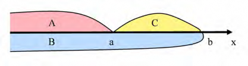
Очевидно,
5
B A C , причём события А и С несовместны. По аксиоме сложения:
P B P A P C . Получили: P X b P X a P a X b .
'---у----' '---у----'
Fb Fa
откуда P a X b F b F a – ч.т.д.
F x − неубывающая функция, т.е., если
x1 x2 , то
F x1 F x2 .
Доказательство. Пусть
x1 x2 . В соответствии с пунктом (4):
F x2 F x1 P x1 X x2 0 ,
т.к. вероятность не бывает отрицательной. Поэтому
F x1 F x2 .
Функция распределения непрерывной случайной величины непрерывна, её график имеет вид:
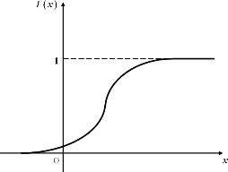
Функция распределения дискретной случайной величины
Вычислим функцию распределения ДСВ Х, имеющей ряд распределения
Будем присваивать x различные значения и находить для них функцию распре-
деления по формуле:
F x P X x . Пусть
x1 x2 ... xn .
Если
x x1 , то событие X x невозможное, т.к. у ДСВ нет значений,
меньших x , следовательно,
F x 0 .
Если
x1 x x2 , то событие
X x X x1 , F x P X x P X x1 p1 .
Если
6
x2 x x3 , то событие X x X x1 X x2 , причём собы-
тия в правой части равенства несовместны. По аксиоме сложения:
F x P X x P X x1 P X x2 p1 p2 .
Действуя аналогично для каждого следующего промежутка, наконец, полу-
чим, что если
x xn , то событие
X x X x1 X x2 ... X xn , причём события в правой ча-
сти равенства несовместны.
Окончательно получили:
0,
F x P X x p1 p2 ... pn 1 .
x x1 ;
p ,
x x x ;
1 1 2
p1 p2 ,
F x
p1 p2 p3 ,
x2 x x3 ; x3 x x4 ;
(2)
1,
График этой функции имеет вид:
x xn .
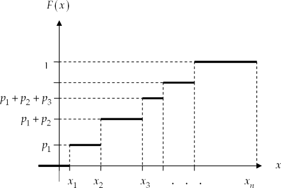
Пример. Найти функцию распределения для ДСВ Х, заданной рядом распределе- ния:
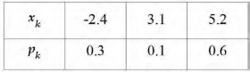
7
Решение. По формуле (2) находим:
0,
0.3,
F x
x 2.4,
2.4 x 3.1,
0.4, 3.1 x 5.2,
1,
x 5.2.
.
Абсолютные и относительные величины
Цель: изучить сущность и значение.
Задачи: изучить классификацию статистических показателей.
План:
Функции статистических показателей
Механизм расчета.
Любое статистическое исследование в конечном итоге заканчивается расчетом и анализом статистических показателей. Статистический показатель представляет собой количественную характеристику явлений и процессов.
Как правило, изучаемые процессы и явления сложны, их сущность нельзя отразить одним показателем. Поэтому возникает необходимость в применении системы статистических показателей.
Статистический показатель представляет собой количественную характеристику социально-экономических явлений и процессов (признаков).
Система статистических показателей - это совокупность взаимосвязанных между собой показателей, характеризующих социально- экономические явления и направленная на решение конкретной статистической задачи.
В основу классификации статистических показателей положены следующие признаки:
по охвату единиц совокупности:
индивидуальные показатели - характеризуют отдельный объект или отдельную единицу совокупности;
сводные - характеризуют группу единиц, которая представляет собой часть совокупности или всю совокупность в целом.
по форме выражения показатели бывают:
абсолютные;
относительные;
средние.
по временному фактору:
по принадлежности объекта:
однообъектные;
межобъектные.
по признаку пространственной определённости:
общетерриториальные;
региональные;
местные.
по выполняемой функции:
плановые показатели – ориентированы на выполнение поставленных задач;
учетные показатели – показывают реальное состояние изучаемого явления;
прогностические показатели – показывают возможное состояние в будущем.
Абсолютные статистические показатели – величины, которые в количественном выражении характеризуют какой-либо статистический показатель.
Абсолютные показатели характеризуют численность совокупности, либо объём изучаемого явления в конкретных границах пространства и времени. Они отражают уровень развития явления и его размер.
Абсолютный показатель можно получить одним из двух способов:
путём подсчёта единиц совокупности, обладающих конкретным значением признака.
путём суммирования значений признака по всей статистической совокупности.
Абсолютные показатели всегда имеют определённую единицу измерения и размерность.
В зависимости от сущности исследуемых явлений они могут выражаться в натуральных, трудовых и стоимостных единицах измерения. В соответствии с этим различают натуральные, трудовые и стоимостные абсолютные показатели.
Натуральные единицы измерения используются в тех случаях, когда единицы измерения соответствуют потребительским свойствам изучаемых явлений. Например, производство автомобилей в штуках, производство стали в тоннах, урожайность в центнерах и т.д.
Натуральные единицы могут быть составными (сложными). Такие единицы применяются в тех случаях, когда для характеристики изучаемого явления одной единицы недостаточно, и используется произведение двух единиц. Например, производство электроэнергии измеряется в киловатт- часах, грузооборот – в тонно-километрах и т.д.
Стоимостные измерители позволяют дать денежную оценку изучаемым явлениям и процессам.
Эти измерители используются при обобщении данных при оценке неоднородных статистических совокупностей (начиная с уровня предприятия до уровня народного хозяйства). Например, объем выпущенной продукции предприятия, доходы населения и т.д.
Показатели, выраженные в стоимостных единицах измерения можно суммировать, получать по ним итоговые данные, но при их использовании необходимо учитывать изменение цен с течением времени.
Трудовые единицы измерения применяются при оценке общих затрат труда и трудоёмкости операции технологического процесса. К ним относятся человеко-дни, человеко-часы (при оценке затрат рабочего времени) и нормо- минуты (при оценке трудоемкости).
Абсолютные величины отражают наличие тех или иных ресурсов и являются основой материального учёта, однако они не дают полного представления об изучаемом явлении, не показывают его структуру, развитие во времени и соотношение между отдельными частями изучаемой совокупности.
Абсолютные показатели всегда именованные числа, т. е. имеют единицу измерения.
Натуральные единицы измерения применяют в тех случаях, когда единицы измерения соответствуют потребительским свойствам продукта (т, м, шт., мили, унции, галлоны). Натуральные единицы могут быть и составными (сложными). Для того чтобы полнее охарактеризовать потребительское назначение продукции
Если некоторые разновидности продукции обладают общими потребительскими свойствами, обобщенные итоги выражают в условно натуральных единицах (базовая жирность молока, содержание питательного вещества, сопоставимые цены (инфляция)).
Наиболее широко используются стоимостные (денежные) единицы измерения. Для получения общего объема продукции в денежном выражении количество единиц в натуральном выражении умножается на цену, а затем полученную величину суммируют.
Таким образом, абсолютные величины получают непосредственным подсчетом данных статистического наблюдения или расчетным путем.
Абсолютные статистические показатели могут быть измерены с различной степенью точности. Пример: шт., млн. шт.; т, тыс. т, млн. т.
Соблюдение одинаковых единиц измерения – непременное условие при сравнениях.
На основе абсолютных показателей сложно проводить сопоставление с другими подобными явлениями. Перечисленные функции выполняют относительные показатели.
Относительные показатели – результат соотношения двух абсолютных показателей. Поэтому, по отношению к абсолютным показателям, относительные показатели являются вторичными.
При расчете относительного показателя, абсолютный показатель (числитель) называется текущим или сравниваемым. Показатель, с которым сравнивают (знаменатель) – основание или база сравнения.
Все относительные статистические показатели классифицируются следующим образом:
Относительные показатели динамики (ОПД) – отношение уровня исследуемого процесса за период времени к уровню того же процесса в прошлом.
Текущий показатель
ОПД = ---------------------------------------------------------------------
Предшествующий или базисный показатель
Относительный показатель плана (ОПП) – применяется при перспективных расчетах, т.е. планировании.
Показатель, планируемый на (i+1) период
ОПП = -------------------------------------------------------------------------
Показатель, достигнутый в этом периоде
При сравнении реально достигнутого результата с ранее намеченным, определяют относительный показатель реализации плана (ОПРП).
Показатель, достигнутый в (i+1) периоде
ОПРП = -------------------------------------------------------------------------
Показатель, планируемый на (i+1) период
Между относительным показателем плана (ОПП), реализации плана
(ОПРП) и динамики (ОПД) существует следующая взаимосвязь: ОПП х ОПРП = ОПД
Относительный показатель структуры (ОПС) – соотношение структурных частей изучаемого объекта и их целого.
Показатель, характеризующий часть совокупности
ОПС = ------------------------------------------------------------------------------
Показатель по всей совокупности в целом
Относительный показатель координации (ОПК) – характеризует соотношение отдельных частей целого между собой.
Показатель, характеризующий i часть совокупности
ОПК = --------------------------------------------------------------------------------
Показатель, характеризующий часть совокупности, выбранной в качестве базы
Относительный показатель интенсивности (ОПИ) – характеризует степень распространения изучаемого процесса в присущей ему среде.
Показатель, характеризующий явление А
ОПИ = --------------------------------------------------------------------------------
Показатель, характеризующий среду распространения явления А

Разновидностью относительного показателя интенсивности является относительные показатели уровня экономического развития, характеризующие производство продукции в расчете на душу населения и играющие важную роль в оценке развития экономики государства.
Относительный показатель сравнения (ОПСр) – соотношение одноименных абсолютных показателей, характеризующих разные объекты (фирмы, районы, страны).
Показатель, характеризующий объект А
ОПСр = ------------------------------------------------------------------------
Показатель, характеризующий объект Б
Таким образом, построение и совершенствование статистических показателей должно основываться на соблюдении двух основных принципов:
объективности и реальности (показатели должны правдиво и адекватно отражать сущность соответствующих экономических и социальных категорий (понятий));
всесторонней теоретической и методологической обоснованности (определение величины показателя, его измеримость и сопоставимость в динамике должны быть научно аргументированы, четко и доступно сформулированы и однозначно, в единообразном толковании применимы). Кроме того, величины показателей должны правильно количественно измеряться с учетом уровня, масштабов и качественных признаков состояния или развития соответствующего экономического или социального явления (отраслевой и региональный уровни, отдельное предприятие или работник и т. п.). При этом построение показателей должно носить сквозной характер, позволяющий не только суммировать соответствующие показатели, но и обеспечивать их качественную однородность в группах и совокупностях,
переход от одного показателя к другому для полной характеристики объема и структуры более сложной категории или явления. Наконец, построение статистического показателя, его структура и сущность должны предусматривать возможность всесторонне анализировать изучаемое явление или процесс, характеризовать особенности его развития, определять влияющие на него факторы.
Исчисление статистических величин и анализ данных об изучаемых явлениях – это третий и завершающий этап статистического исследования. В статистике рассматривают несколько видов статистических величин: абсолютные, относительные и средние величины. К числу обобщающих статистических показателей относятся также аналитические показатели рядов динамики, индексы и др.
Цель: изучить виды среднеарифметических величин
Задачи: изучить методику расчета среднеарифметических величин.
План:
Виды среднеарифметических величин.
Механизм расчета.
Средние величины – это обобщающие показатели, выражающие типичные размеры количественно изменяющихся признаков качественно однородных явлений; характеризуют общий уровень этого признака, отнесенный к единице совокупности. Она применяется в случаях перехода от конкретных значений признака к характеристике всей совокупности.
В зависимости от характера изучаемых явлений, от конкретных задач и целей статистического исследования различают следующие виды средних:
среднеарифметическая;
среднегармоническая;
среднеантигармоническая;
среднестепенная;
среднеквадратическая;
распределительные средние:
мода;
медиана;
среднехронологическая.
Средняя арифметическая простая ( Х )равна сумме произведений значений признака, деленной на их количество.

X X i
n
1
где Х1,Х2…Хn- значение признака; n – число значений признака.
Например, известна сменная выработка рабочих бригады токарей:
Табельный номер рабочего
1 2 3 4 5
Количество изготовленных деталей, шт.
21 19 20 18 21
Требуется определить среднюю выработку бригады.
Для ее нахождения используется формула средней арифметической простой:
X X i
n
По приведенным данным необходимо определить среднюю выработку бригады. Для этого просуммируем количество всех изготовленных деталей (значение признака) и разделим на количество рабочих (число значений признака):

X 21 19 20 18 21 19,8 20шт
5
Среднеарифметическая взвешенная может быть определена двумя способами: прямым – отношением суммы произведений значений признака на их частоту, на сумму частот, и способом «От нуля».

1.Прямым способом среднерифметическая взвешенная ( х )
определяется по формуле:
x xi fi
f i
2
где fi – частота, т. е. число случаев возникновения того или иного значения признака.
Исходные данные для расчёта среднеарифметической взвешенной приведены в таблице 1
Таблица 1. Продажа акций на торгах условной фондовой биржи.
Сделка | Количество проданных акций шт. fi | Курс продажи акций в руб. xi |
1 | 500 | 1080 |
2 | 300 | 1050 |
3 | 1100 | 1145 |
Определим среднеарифметическую взвешенную прямым способом по формуле:

X 500 1080 300 1050 1100 1145 1112,9 руб 500 300 1100
Следует помнить. ! При расчете средней арифметической по интервальному вариационному ряду для выполнения необходимых вычислений от интервалов переходят к их серединам.
Тогда зависимость для расчета среднеарифметической взвешенной имеет вид
x xi fi
fi
где i х - середина i –го интервала.
Способом «от нуля» среднеарифметическая может быть исчислена по формуле:
X Х 0 Z ,
3
где Х0 – значение признака, принятого за «0». За «0» обычно принимается значение признака, расположенного в середине вариационного ряда (В нашем примере Х0 = 25 лет). Поэтому ряд необходимо стараться сделать нечётным. При чётном количестве значений ряда, за «0», может быть принято значение признака с наибольшей частотой.
Z – условная среднеарифметическая, определяемая отношением
суммы отклонений значений признаков от значения признака, принятого за
«0», умноженной на соответствующие частоты, к сумме частот, по формуле:
( xi
x0
) fi
f
Z = = -3/20 = -0,15 руб.
Приведём пример расчета среднеарифметической способом «от 0» (табл. 2).
Таблица 2. Пример исчисления среднеарифметической способом «от 0»
Возраст посетителей лет | Число посетите лей | Хi fi | Отклонение значений признака от условной средней (от 0) | (Х-Х0) | f |
Х | f |
| Х – Х0 = Zi |
|
5 | 2 | 10 | -20 | -4 |
15 | 5 | 75 | -10 | -5 |
25 | 8 | 200 | 0 | 0 |
35 | 4 | 140 | 10 | +4 |
45 | 1 | 45 | 20 | +2 |
Итого | 20 | 470 | - | -3 |
Подставляя в вышеприведенную формулу полученные значения, определим среднеарифметическую прямым способом:
4
X = -0,15*10+25= 23,5 года,
Рассчитаем среднеарифметическую Способом «от нуля».
За «0» принимаем значение признака, расположенного в середине вариационного ряда ( В нашем примере Х0 = 25 лет).
X = 470/20 = 23,5 года., то есть получили ту же величину, что и
«прямым способом».
Средняя гармоническая имеет более сложную конструкцию, чем средняя арифметическая. Используется в тех случаях, когда статистическая информация не содержит частот по отдельным значениям признака, а представлена произведением значения признака на частоту.
Средняя гармоническая взвешенная используется в тех случаях, когда известен числитель исходного соотношения средней, но неизвестен знаменатель.
1), применяется среднегармоническая простая, определяемая по формуле:

X n n

1
xi
Рассмотрим пример использования средней гармонической простой:
Три предприятия производят микроволновые печи. Себестоимость их производства на 1-ом предприятии составила 4000 руб., на 2-ом -3000 руб., на 3-ем – 5000 руб. Необходимо определить среднюю себестоимость производства микроволновой печи при условии, что на каждом предприятии общие затраты на ее изготовление составляют 600 тыс. руб.
Применять среднюю арифметическую в данном случае нельзя, так как предприятия выпускают разное количество
5
микроволновых печей:
первое –150шт. (600000/4000); второе – 200шт. (600000/3000); третье – 120шт. (600000/5000).
Среднюю себестоимость микроволновой печи можно получить, если общие затраты трех предприятий разделить на общий выпуск:

X n 600 600 600 3,830 руб.
150 200 120
2) Для исчисления среднегармонической Хifi обозначим Mi
, т.е.
Хifi = Mi, отсюда fi = Mi/Хi .
Преобразуем формулу среднеарифметической – вместо Хifi подставим Mi и получим среднеарифметическую взвешенную, исчисленную гармоническим способом:
X n
M i
1 М
xi
В случаях, когда произведение Xifi одинаково или равно единице (Mi = 1), применяется среднегармоническая простая, определяемая по формуле:

X n n

1
xi
6
При работе со сгруппированными данными используется средняя гармоническая взвешенная:
Таблица 2 - Валовой сбор и урожайность подсолнечника по Центрально – Черноземному району ( в хозяйствах всех категорий)
Область Валовой сбор, тыс. т | Валовой сбор, тыс. т | Урожайность, ц\га |
Белгородская | 97,0 | 16,1 |
Воронежская | 204,0 | 9,5 |
Курская | 0,5 | 4,8 |
Тамбовская | 16,0 | 10,9 |
Липецкая | 69,0 | 7,0 |
В общем случае средняя урожайность любой сельскохозяйственной культуры по нескольким территориям, агрофирмам, крестьянским хозяйствам и. т. п. может быть определена только на основе следующего исходного соотношения.
ИСС= Общий валовой сбор,тыс.ц Общая посевная площадь,тыс.га.
Общий валовой сбор определяется суммированием валового сбора по областям. Однако данные о посевных площадях в явном виде в таблице отсутствуют. Их косвенно можно рассчитать разделив валовой сбор по каждой области на урожайность. Тогда, определим искомую среднюю, предварительно переведя тоны в центнеры
7
X n
970 2040 5 160 690
9,9 ц/ га


970 2040 5 160 690
16,1 9,5 4,8 10,9 7,0
Для характеристики некоторых процессов подходит еще одна своеобразного вида средняя, так называемая антигармоническая. Формула ее такова:

x 2 f x i i
xi fi
x 2
(взвешенная)
x i
xi
(невзвешенная)
Приведем примеры ее использования.
1, Имеется п учителей, и каждый подготовил ki, учеников. Если каждый ученик подготовит столько же учеников, сколько подготовил его учитель, то среднее соотношение учеников и учителей (т. е. как бы производительность работы учителя или темп распространения знаний) выразится средней антигармонической. Пусть 6 учителей подготовили соответственно 8, 7, 14,
23, 15, 11 учеников. Тогда
82 72 142 232 152 112
x 8 7 14 23 15 11
15,4
Имеется п отраслей, ki, – эффективность вложений в отрасль i, т. е. 1 руб. вложений в текущем году дает доход ki рублей в следующем году. Если ki – неизменны, то эффективность вложений Е выразится средней антигармонической, т. е.
2
n
k
i
n
Е i1
ki
i1 .
8
Допустим, имеются три отрасли. Пусть вложения в них имеют эффективность соответственно k1 = 1,1; k2 = 1,2 и k3 = 1,4. Тогда
1,12 1,22 1,42
Е 1,1 1,2 1,4
1,246
.
Имеется некоторая совокупность людей. Среди них п женщин. Пусть ki – число детей у женщины. Предположим, что каждая дочь имеет столько же детей, сколько имела ее мать. Предположим, что число девочек равно числу мальчиков. Тогда соотношение численности между поколениями выразится средней антигармонической:
n 1 2 n
ki k 2

Т 2
i1 2
i
i1

2
n 1 k n k

i
i1
i
i1 .
Пусть у десяти женщин соответственно по 1, 2, 3, 2, 3, 5, 1, 1, 2, 4
детей. Тогда
12 22 32 22 32 52 12 12 22 42
Т 1 2 3 2 3 5 1 1 2 4
3,083
Таким образом, на каждого человека первого поколения будет приходиться в среднем 3,083 человека следующего поколения.
Таким образом, выбор вида среднего показателя оказывает существенное влияние на его численную величину. Выбор вида средней определяется в каждом отдельном случае путем анализа исследуемой совокупности, изучения содержания явления.
Степенная средняя
( хс ) используется в случаях, когда
определяется среднее значение, выраженное функцией к-го порядка. Частным случаем ее является среднеквадратическая.
Среднеквадратическая

X k применяется в случае, когда осредняемое
значение признака выражено в виде квадратных функций.
9
Степенная средняя и среднеквадратическая может быть простой и взвешенной и исчисляется соответственно по формулам:
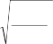
х k
x 2
х с к i
n
X k i
n

хс к
х k f
i
fi
X k
2
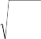
x f
i i
fi
Имеется 10 квадратов с различной длиной сторон. Необходимо определить среднюю сторону одного квадрата (табл. 3).
Таблица 3. Исходные данные для расчета среднеквадратической. :
Сторона квадрата, см., (Х) | Количество квадратов, (f) | Х2 | Х2 fi |
4 | 1 | 16 | 16 |
6 | 3 | 36 | 108 |
8 | 5 | 64 | 320 |
10 | 1 | 100 | 100 |
Итого | 10 | - | 544 |
Средняя сторона одного квадрата определится как среднеквадратическая взвешенная по формуле:

Х K
544
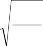
10
54,4 7,4
см.
Распределительные средние включают моду и медиану.
Мода характеризует центр распределения по «весу» статистических единиц.
В дискретном ряду модой будет значение признака, частота которого наибольшая.
В интервальном ряду мода (М0) находится в пределах того интервала, частота которого наибольшая.
Моду находим по формуле:

М x h
f m
f m1
m
0 0 m ( f
f m1
) ( f m
f m1 )
10
где :
xo – начало модального интервала; hm – величина модального интервала; fm – частота модального интервала;
fm-1 – частота интервала, предшествующая модельному;
fm+1 – частота интервала, следующего за модальным.
Медиана – вариант, занимающий среднее место в вариационном ряду и делящий его на две равные части.
В дискретном ряду медианным вариантом будет вариант, расположенный в середине вариационнного ряда и делящий его на две равные части. Для нахождения медианы необходимо предварительно определить номер медианного варианта (NMe). В дискретном ряду с нечетной суммой частот, (NMe) исчисляется следующим образом:
NM e
f
i 0,5
2
где
fi
сумма частот.
e
При четном числе частот имеют место два медианных варианта (NM 1 ,
e
NM 2 ), номера которых определяются следующим образом:
NM 1 fi
NM 2
fi
1 NM 1 1

e 2 e 2
Медианным вариантом будет тот вариант, с прибавлением частот которого сумма частот будет больше номера медианы. Следовательно, для определения медианного варианта необходимо последовательно суммировать частоты.
11
Средняя хронологическая - это средний уровень ряда динамики, т. е. средняя, исчисленная по совокупности значений показателя в разные моменты или периоды времени.
В зависимости от вида ряда динамики применяются различные способы ее расчета, а именно расчет средней хронологической интервального ряда и средней хронологической моментного ряда.
Средней хронологической интервального (более распространённого) ряда является средняя величина из уровней интервального ряда динамики, которая исчисляется по формуле:
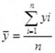
где 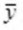- средний уровень ряда; 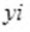 - уровень ряда динамики;
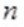 - число членов ряда
12
Задачи: образовывать однородные группы на основе разделении статистической совокупности.
План:
Статистические группировки.
Принципы построения группировок.
Виды статистических группировок
Группировкой называется разделение множества единиц изучаемой совокупности на группы по отдельным существенным для них признакам.
В самом общем виде группировки можно классифицировать следующим
образом:
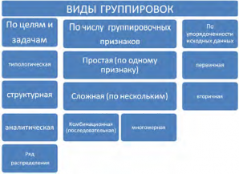
Статистическая группировка – это процесс образования однородных групп на основе расчленения статистической совокупности на части или объединения изучаемых единиц в частные совокупности по существенным для них признакам. Каждая из этих групп характеризуется системой статистических показателей. Например, группировка промышленных предприятии по формам собственности и т. д.
Особым видом группировок является классификация. Классификация – это как бы стандарт, в котором каждая единица совокупности может быть отнесена лишь к одной группе или подгруппе. Классификация основывается на самых существенных признаках, которые меняются очень мало
(например, классификация отраслей деятельности, классификация основных фондов и т. д.). Таким образом, классификация – это узаконенная, общепринятая, нормативная группировка.
Метод группировок применяется для решения трех основных задач. Во-первых, выделение социально-экономических типов явлений. Во-вторых, изучение структуры явления и структурных сдвигов, происходящих в нем. В- третьих, выявление взаимосвязей и взаимозависимостей между явлениями и признаками, характеризующими эти явления. В соответствии с этими задачами различают следующие виды статистических группировок: типологические, структурные и аналитические (факторные).
Типологическая группировка решает задачу выявления и характеристики социально-экономических типов (частных подсовокупностей) путем разделения качественно разнородной совокупности на классы, социально-экономические типы, однородные группы единиц в соответствии с правилами научной группировки.
Признаки, по которым производится распределение единиц изучаемой совокупности на группы, называются группировочными признаками, или основанием группировки.
При построении типологической группировки в качестве группировчных признаков могут выступать как атрибутивные, так и количественный признаки. Примером типологической группировки по атрибутивному признаку – это группировка предприятии по формам собственности, а по количественному признаку – группировка студентов по успеваемости ( выделяются группы успевающих и неуспевающих студентов). Структурной группировкой называется группировка, в которой происходит разделение выделенных с помощью типологической группировки типов явлений, однородных совокупностей на группы, характеризующие их структуру по какому-либо варьирующему признаку. В качестве группировочных признаков могут рассматриваться атрибутивные и
количественные признаки.
При группировке по атрибутивному признаку группы отличаются друг от друга по характеру признака. Число групп, на которые делится изучаемая совокупность, определяется числом градации атрибутивного признака.
Одной из основных задач статистических группировок состоит в исследовании связей и зависимостей между признаками единиц статистической совокупности, которая решается с помощью построения аналитических группировок. Аналитическая группировка – это группировка, выявляющая взаимосвязи взаимозависимости между изучаемыми социально-экономическими явлениями и признаками их характеризующими. Особенности аналитической группировки состоит в том, что единицы совокупности группируются по факторному признаку, а расчет групповых средних производится по значениям результативного признака. То есть, каждая выделенная группа характеризуется средними величинами результативного признака. По изменению этих величин и определяется наличие связей и зависимостей между признаками.
Факторными называются признаки, оказывающие влияние на изменение результативных признаков. Результативными называются признаки, изменяющиеся под влиянием факторных признаков.
В зависимости от степени сложности массового явления и от задач анализа группировки могут производиться по одному или нескольким признакам.
Если группы образуются по одному признаку, группировка называется простой ( например, распределение населения по возрастным группам, а семей – по уровню доходов и т. д. ).
Группировка по двум или нескольким признакам называется сложной.
Если группы, образованные по одному признаку, делятся на подгруппы по второму, а последние – на подгруппы по третьему и т. д. признакам, т. е. в основании группировки лежит несколько признаков, взятых в комбинации, то такая группировка называется комбинационной (например, дополнив простую группировку населения по возрастным группам группировкой по
полу, получим комбинационную группировку). Комбинационные группировки позволяют изучить единицы совокупности одновременно по нескольким признакам.
Если группировка строится по атрибутивному признаку, то групп, как правило, будет столько, сколько имеется градаций, видов состояний у этого признака. Например, группировка предприятий по формам собственности учитывает муниципальную, федеральную, собственность субъекта Федерации и частную.
Если группировка проводится по количественному признаку, то тогда необходимо обратить особое внимание на число исследуемых объектов и степень колеблемости группировочного признака. Если количественный группировочный признак меняется прерывно (дискретно), т. е. может принимать некоторые – чаще целые значения (например, тарифный разряд рабочих), то число групп должно соответствовать количеству значений признака.
Принципы построения группировок
Признаки, по которым проводится группировка, называют группировочными признаками. Группировочные признаки могут иметь количественное (объем, доход, и т.д.) и качественное выражение (пол человека, отраслевая принадлежность, семейное положение и т.д.). Число групп определяется числом интервалов, на которые разбивается весь диапазон изменения признака.
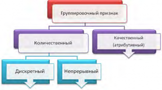
Каждый интервал имеет нижнюю и верхнюю границы или одну из них. Если у интервала указана лишь одна граница, то это открытый интервал, а
если обе – то закрытый. Закрытые интервалы подразделяются на равные и неравные, а также специализированные и произвольные. Если можно заранее установить определенное количество групп, то величину равного интервала можно вычислить по формуле
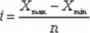
где i - величина равного интервала; Xmax- Xmin - амплитуда колебания признака; n - число групп.
При определении количество групп необходимо стремиться к тому, чтобы были учтены особенности изучаемого явления. Поэтому число групп должно быть оптимальным, в каждой группе должно входить достаточно большое число единиц совокупности, что отвечает требованию закона больших чисел.
При большом количестве наблюдений количество групп k
определяют по формуле Стерджесса:
k 1 3,322 lg n
где n
число единиц совокупности, в общем, ее объеме.
Результат при таком расчете округляют до целого числа.
Интервалы могут быть равные и неравные. Последние делятся прогрессивно – возрастающие и прогрессивно – убывающие.
Группировка с равными интервалами целесообразно в тех случаях, когда вариация проявляется в сравнительно узких границах и распределение является практически равномерным (например, при группировке рабочих одной профессий по размеру заработной платы, посевов какой – либо культуры по урожайности).
Для группировок с равными интервалами величина интервала определяется по формуле:
h xmax xmin
k
R ,
k
где
xmax ,
xmin наибольшее и наименьшее значения признака.
Если в результате деления в формуле получится нецелое число и возникает необходимость в округлении, то округлять нужно, в большую сторону, а не в меньшую.
Пусть имеем группировку рабочих по уровню заработной платы (руб.): 6000 – 6300; 6300 – 6600; 6600 – 6900; 6900 – 7200; 7200 – 7500.
В этом распределении имеет место неопределенность: к какой группе, например, отнести рабочего с заработком в 6300 руб., к первой или второй? Для устранения неопределенности используется правило. Если величина признака единицы совпадает с верхней границей группы, то эта единица переходит к следующей группе, исключая последнюю группу. Значит рабочий, получающий 6300 руб., должен быть отнесен ко второй группе. Если же заработная плата рабочего равна 7500 руб., то этого рабочего следует отнести к последней группе.
Если размах вариации ( R xmax xmin ) признака статистической совокупности велик и значения признака варьируются неравномерно, то необходимо использовать группировку с неравными интервалами.
Статистическая таблица
Результаты группировочного материала оформляются в виде таблиц, где он излагается в наглядно-рациональной форме. Не всякая таблица может быть статистической. Табличные формы календарей, тестовых и опросных листов, таблица умножения не являются статистическими.
Статистическая таблица - это цифровое выражение итоговой характеристики всей наблюдаемой совокупности или ее составных частей по одному или нескольким существенным признакам. Статистическая таблица содержит два элемента: подлежащее и сказуемое. Подлежащее – объект, характеризующийся цифрами. Обычно подлежащее дается в левой части, в наименовании срок. Сказуемое - это цифровые показатели, с помощью которых дается характеристика выделенных в подлежащем групп и единиц.
Сказуемое формирует верхние заголовки. Различают простые, групповые и комбинационные таблицы. Часто результаты группировки представляются в графическом виде – с помощью гистограмм.
Цель: грамотно интерпретировать полученные результаты, изучить сущность и значение.
Задачи: правильно решать практические задачи по данной теме
План:
Виды статистического наблюдения
Основные задачи выборочного наблюдения
Под выборочным понимается метод статистического исследования, при котором обобщающие показатели изучаемой совокупности устанавливаются по некоторой ее части на основе положений случайного отбора. Подлежащую изучению совокупность, из которой производится отбор части единиц, называют генеральной совокупностью. Отобранная из генеральной совокупности некоторая часть единиц, подвергающаяся обследованию, называется выборочной совокупностью или выборкой. Генеральная совокупность может быть конечной (число наблюдений N=const) или бесконечной (N=¥), а выборка из генеральной совокупности – это всегда результат ограниченного ряда n наблюдений.
Долей выборки kn называется отношение числа единиц выборочной совокупности к числу единиц генеральной совокупности:
kn = n/N.
Значение выборочного метода состоит в том, что при минимальной численности обследуемых единиц проведение исследования осуществляется в более короткие сроки и с минимальными затратами труда и средств. Это повышает оперативность статистической информации, уменьшает ошибки регистрации.
В проведении ряда исследования выборочный метод является единственно возможным, например, при контроле качества продукции (товара, услуги), если проверка сопровождается уничтожением или разложением на составные части обследуемых образцов.
При соблюдении правил научной организации обследования выборочный метод даёт достаточно точные результаты, поэтому его целесообразно применять для проверки данных сплошного учёта. Минимальная численность обследуемых единиц позволяет провести, исследование более тщательно и квалифицированно. Так, при переписи населения практикуются выборочные контрольные обходы для проверки правильности записей сплошного наблюдения.
Таким образом, основными причинами применения выборочного исследования являются:
По сравнению с другими статистическими методами, применяющими не сплошное наблюдение, выборочный метод имеет важную особенность, которая заключается в том, что в основе отбора единиц для обследования положены принципы равных возможностей попадания в выборку каждой единицы генеральной совокупности. Именно в результате соблюдения этих принципов исключается образование выборочной совокупности только за счёт лучших или худших образцов. Это предупреждает появление систематических (тенденциозных) ошибок и делает возможным производить количественную оценку ошибки представительства (репрезентативности).
Проведение исследования социально-экономических явлений выборочным методом складывается из ряда последовательных этапов:
обоснование (в соответствии с задачами исследования) целесообразности применения выборочного метода исследования;
составление программы проведения статистического исследования выборочным методом;
решение организационных вопросов сбора и обработки исходной информации;
установление доли выборки, т.е. части подлежащих обследованию единиц генеральной совокупности;
обоснование способов формирования выборочной совокупности;
осуществление отбора единиц из генеральной совокупности для их обследования;
фиксация в отобранных единицах (пробах) изучаемых признаков;
статистическая обработка полученной в выборке информации с определением обобщающих характеристик изучаемых признаков;
определение количественной оценки ошибки выборки;
распространение обобщающих выборочных характеристик на генеральную совокупность. При выборочном наблюдении дело имеют с двумя категориями обобщающих показателей с относительными и средними величинами.
Относительные величины применяют для сводной характеристики совокупностей по альтернативному признаку; такая характеристика даётся в виде доли (удельного веса) тех единиц совокупности, которые обладают интересующим исследователя признаком. Например, при анализе качества продукции определяют относительную долю тех единиц, которые не выдерживают установленного стандарта качества, т.е. относятся к браку и т.д.
Во всех случаях, когда речь идёт о вариации альтернативных признаков, мы будем иметь дело с обобщающим показателем в виде относительной доли единиц. В генеральной совокупности доля единиц, обладающих изучаемым признаком, называется генеральной долей.
Кроме измерения доли, перед выборочным наблюдением может стоять задача измерения среднего значения варьирующего признака во всей совокупности. В этом случае имеют дело с признаками, вариация которых проявляется в разных количественных значениях у отдельных единиц
совокупности. Средняя величина изучаемого варьирующего признака -
генеральной средней.
В выборочной совокупности долю изучаемого признака называют выборочной долей, или частью, а среднюю величину в выборке - выборочной средней. Основная задача выборочного исследования в сфере обслуживания состоит в том, чтобы на основе характеристик выборочной совокупности получить достоверные суждения о показателях доли или средней в генеральной совокупности.
Условия проведения выборки
Во-первых, она должна быть достаточно многочисленной, чтобы в ней могли проявиться закономерности, существующие в генеральной совокупности.
Во-вторых, элементы выборки должны быть отобраны объективно, независимо от воли исследователя, чтобы каждый из них имел одинаковые шансы быть отобранным или чтобы эти шансы были известны исследователю.
Пример 1. Имеются данные о зарплате рабочих в тыс.руб.:
Группы по з/пл. тыс. руб. | ГС - человек | Из них попали в выборку |
10-13 | 100 | 5 |
13-16 | 150 | 10 |
16-19 | 400 | 30 |
19-22 | 200 | 45 |
22-25 | 150 | 10 |
Итого | 1000 | 100 |
Как видим, зарплату от 100 до 130 в ГС получают 10%, в ВС – 5%. Доля этой группы в ВС ниже, чем в ГС, ВС неточно представляет ГС.
Зарплату от 190 до 220 в ГС получают 20%, а в выборку получающих такую зарплату попало 45%. Снова налицо проблема репрезентативности.
Виды выборки:
По участию единиц наблюдения в отборе:
Повторная выборка, при которой попавшая в выборку единица после регистрации возвращается в генеральную совокупность и таким образом сохраняет равную возможность наряду с другими единицами быть использованной в дальнейшей процедуре отбора; при этом численность единиц генеральной совокупности N остается неизменной.
Бесповторная выборка, при которой попавшая в выборку единица не возвращается в исходную совокупность и в дальнейшем выборе не участвует; при этом численность единиц генеральной совокупности N сокращается в процессе отбора.
По количеству ступеней отбора:
Одноступенчатая, при которой каждая отобранная единица сразу подвергается изучению по данному признаку;
Многоступенчатая, при которой производят отбор из генеральной совокупности отдельных групп, из которых выбирают подгруппы и т. д., на последней стадии единица отбора совпадет с единицей наблюдения.
Социально – экономические явления общественной жизни находятся в непрерывном развитии. Их изменение во времени статистика изучает при помощи построения и анализа рядов динамики.
Начиная изучение данной темы, необходимо обратить внимание на классификацию рядов динамики, различия между ними, так как отнесение ряда динамики к тому или иному виду имеет важное значение для их изучения. Выбор соответствующих приёмов и способов анализа определяется характером исходных данных и зависит от задач исследования.
Данная тема знакомить студентов с задачами, решение которых дает возможность усвоить правила построения и анализа рядов динамики для характеристики изменения социально – экономических явлений во времени, выявления основной тенденции, закономерностей их развития.
Ряд динамики – числовые значения статистического показателя, представленные во временной последовательности. Он состоит из двух граф: в первой указываются периоды (или даты), во второй – показатели, характеризующие изучаемый объект за эти периоды (или на эти даты).
Показатели второй графы носят название уровни ряда: первый показатель называется начальным уровнем, последний – конечным. Уровни рядов динамики могут быть выражены абсолютными, средними или относительными величинами. Исходя из этого, ряды динамики подразделяются на ряды абсолютных, относительных и средних величин.
Ряды динамики могут быть двух видов: интервальные и моментные.
В интервальном ряду приводятся данные, характеризующие величину показателя за определенные периоды (сутки, месяц, квартал, год и т. д.). Особенность интервальных рядов из абсолютных величин является то, что их уровни можно суммировать, получая новые значения объема явления, относящиеся к более длительным периодам.
В моментном ряду динамики приводятся данные, характеризующие
размеры явления на определенные моменты (даты) времени. Уровни моментных рядов динамики суммировать нельзя; сумма не имеет экономического смысла, так как каждый последующий уровень полностью или частично включает в себя предыдущий уровень. Однако разность уровней имеет смысл, характеризуя увеличение или уменьшение уровня ряда между датами учета.
Важнейшим условием правильного формирования рядов динамики является сопоставимость уровней, образующих ряд. Основным требованием сопоставимости уровней является одинаковая методология их исчисления для всех периодов или дат. При этом все уровни должны быть даны не только в одинаковых, но и равноценных единицах измерения. Условием сопоставимости данных является также одинаковая полнота охвата различных частей явления, представленного рядом динамики. Уровни показателей в интервальных динамических рядах должны относиться к периодам с одинаковой продолжительностью. Для моментных рядов должна соблюдаться неизменность даты учета.
Вопрос о том, следует ли считать условием сопоставимости данных динамического ряда одинаковость границ территории, к которой относятся данные, решается по – разному. Если ставится задача изучения изменения явления в связи с изменением территории, то в этом случае сопоставляются данные, относящиеся к различной территории. Если же ставится задача изменения темпов развития явления, то сравниваемые показатели должны относиться к неизменной территории. Поэтому, прежде чем анализировать ряд динамики, необходимо обеспечить сопоставимость уровней ряда. Для этого выполняется дополнительные расчеты, которые называются смыканием уровней динамических рядов.
Условием же сопоставимости уровней интервального временного ряда является равенство периодов, за которые приводятся данные. Если это условие нарушено, то исследуемый ряд подвергают дополнительной обработке - рассчитывают уровни ряда в среднем на единицу времени.
Пример 1. Объем инвестиций по фирме характеризуется следующими данными .
Таблица 1
| Периоды |
2000-2005 | 2006-2009 | 2010-2016 | 2016 |
Объем капитальных вложений (в сопоставимых ценах, млн. руб. |
1140,8 |
1225,5 |
2960,6 |
508,8 |
Уровни представленного ряда не сопоставимы между собой, так как показатели относятся к периодам с различной продолжительностью. Для того, чтобы выявить изменение динамики капитальных вложений во времени, необходимо определить величину капитальных вложений на одну и ту же единицу каждого периода – один год.
Объем капитальных вложений за один год составляет (млн. руб.): 2000 – 2005 гг. – 228,16 (1140,8 : 5);
2006 – 2009 гг. – 408,50 (1225,5 : 3);
2010 – 2016 гг. – 493,43 (2960,6 : 6);
2016 г. – 508,80.
Из анализа полученных данных видно, что объем капитальных вложений по фирме за период 2000 – 2016 гг. имеет тренд к повышению.
Если несопоставимость в рядах динамики вызвана административно - территориальными изменениями, то для изучения развития явления необходимо построить ряд сопоставимых уровней в новых территориальных границах.
Для анализа рядов динамики применяется ряд показателей, которые определяют изменение общественных явлений во времени. К ним относятся: уровень ряда, абсолютный прирост, темпы роста и прироста, абсолютное
значение одного процента прироста, средний абсолютный прирост, средние темпы роста и прироста.
Абсолютный прирост – показатель, который характеризует абсолютный размер увеличения или уменьшения текущего уровня ряда по сравнению с начальным (базисным) или предшествующим (цепным):
б = Ут – Уб;
ц = Ут – Ут-1
где б – абсолютный прирост базисный; ц – абсолютный прирост цепной; Ут – уровень текущий; Уб – уровень базисный; Ут-1 – уровень предшествующий.
Средний абсолютный прирост характеризует средний ежегодный прирост уровня изучаемого явления. Исчисляется по формуле
У п У б
= n 1 ,
где n – число уровней ряда; Уn – последний уровень ряда.
Темп роста – показатель, который характеризует, во сколько раз данный уровень ряда больше начального (базисного) или предшествующего (цепного) уровня или какую долю от них составляет. Исчисляется он по формуле:
У
Т б У Т
р
б ;
У
Т ц У Т
р
Т 1
Т б Т ц
где
р - темп роста базисный; р – темп роста цепной.

Средний темп роста Т р
показывает, во сколько раз в среднем
увеличивается текущий уровень изучаемого явления по сравнению с уровнем предшествующего периода за изучаемый период.
Исчисляется он по формуле:

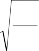
Т р n1 У n
У б .
Темп прироста – показатель, который характеризует относительную величину прироста по отношению к начальному (базисному) или предшествующему (цепному) уровню. Исчисляется он по формуле
У
Т б У Т У б

пр
б ;
Т ц У Т
У Т 1
пр У
Т б
Т 1
Т ц
где
пр – темп прироста базисный;
пр – темп прироста цепной.
Между темпами роста и прироста существует взаимосвязь. Темп прироста равен темпу роста минус единица или 100%. Средний темп
прироста Т пр
показывает, на сколько процентов увеличился или уменьшился
в среднем текущий уровень по сравнению с предшествующим.

Т
ц У Т 1
пр У
Т 1
Абсолютное значение одного процента прироста А(%) показывает сколько абсолютных единиц скрывается за каждым процентом прироста. Исчисляется оно по формуле:
i
А%= Т пр ,
где i – абсолютный прирост;
Тпр i – соответствующий темп прироста
Разложение рядов динамики
Уровни любого ряда динамики формируются под совместным влиянием факторов, различных как по характеру, так и силе воздействия. В первую очередь необходимо выделить факторы эволюционного характера, оказывающие постоянное воздействие и определяющие общее направление
развития явления, его долговременную эволюцию. Такие изменения динамического ряда называют основной тенденцией развития или трендом.
Вторую группу факторов составляют факторы осциллятивного характера, оказывающие периодическое воздействие.
Они вызывают циклические и сезонные колебания уровней динамического ряда.
Циклические (или периодические) долговременные колебания –
это регулярные колебания, вызываемые постоянно действующими причинами, например, циклы экономической конъюнктуры, циклы гарвардской школы. Схематично циклические колебания можно представить в виде синусоиды i i y = sin t (значение признака вначале возрастает, достигает определенного max, затем снижается, достигает своего min, вновь возрастает и т.д.).
Колеблемость рядов динамики характеризуется размахом (амплитудой)

колебания (R ), средним линейным отклонением ( dt ) и дисперсией ( 2 ),
t t
которые исчисляются по тренду (А), который равен разности между абсолютными значениями ряда и выравненными по уравнению прямой линии; т. е. =yi- y t i .
d = 1 ,
Rt= max- min.
t n i
t
2 = 1 2 .
n i
Относительным показателем колеблемости уровня динамического ряда является коэффициент колеблемости, который исчисляется по формуле
t
V= y .
Мерой устойчивости ряда динамики (Кус) является величина, исчисленная согласно формуле:
Кус = I – V.
Выявление тренда
Первая задача, которая возникает при анализе рядов динамики, заключается в выявлении и описании основной тенденции развития изучаемого явления (тренда).
Трендом называется плавное и устойчивое изменение уровней явления во времени, свободное от случайных колебаний.
Изучение тренда включает в себя два этапа:
Проверка ряда на наличие тренда;
Выравнивание ряда динамики и непосредственное выделение тренда
Проверка ряда на наличие тренда проводится разными методами, самым простым из которых является метод средних. Суть его заключается в следующем: изучаемый ряд динамики разбивается на несколько интервалов (чаще всего на два), для каждого из которых определяется средняя величина - y и y . Выдвигается гипотеза о существенном различии средних. Если выдвинутая гипотеза принимается, то признается наличие тренда.
Для непосредственного выявления тренда используют следующие методы:
метод укрупнения интервалов;
метод скользящей средней;
метод аналитического выравнивания.
Все перечисленные методы относятся к группе методов сглаживания, предполагающих наличие в исходном ряду динамики только одной компоненты – тренда. Метод укрупнения интервалов является одним из наиболее простых методов непосредственного выявления основной тенденции. При использовании этого метода ряд динамики, состоящий из мелких интервалов, заменяется рядом, состоящим из более крупных интервалов.
Так как на каждый уровень исходного ряда влияют факторы, вызывающие их разнонаправленное изменение, то это мешает видеть
основную тенденцию. При укрупнении интервалов влияние факторов нивелируется, и основная тенденция проявляется более отчетливо. Расчет среднего значения уровня по укрупненному интервалу осуществляется по формуле простой средней арифметической.
Недостатком этого способа является то, что сокращается число уровней ряда, а это не позволяет учитывать изменения внутри укрупненного интервала. К его преимуществам можно отнести сохранение природы явления.
Цель: характеристика общего изменения сложного социально -
экономического показателя и отдельных его элементов.
Задачи: измерение влияния факторов на общую динамику сложного показателя, включая характеристику влияния изменения структуры явления.
План:
1.Индексные показатели
2.Методы расчета
Индекс – относительная величина, характеризующая изменение уровней сложных социально – экономических показателей во времени, в пространстве или по сравнению с некоторым эталоном (плановым, нормативным уровнем и т. п.). Если в качестве базы сравнения используется уровень за какой – либо предшествующий период, то получают индекс динамики; если же базой сравнения является уровень того же явления по другой территории, то получают территориальные индексы.
Индексные показатели вычисляются на высшей ступени статистического обобщения. Поэтому изучение данной темы должно базироваться на знании таких предшествующих тем как:
«Сводка и группировка данных»; «Статистические показатели» и
«Статистическое изучение динамики». С помощью индексного метода решаются следующие задачи:
характеристика общего изменения сложного социально -
экономического показателя и отдельных его элементов;
измерение влияния факторов на общую динамику сложного показателя, включая характеристику влияния изменения структуры явления.
Индекс является результатом сравнения двух одноименных показателей, поэтому при их вычислении различают сравниваемый уровень (числитель индексного отношения), называемый текущим или отчетным, и
уровень, с которым производится сравнение знаменатель индексного отношения), называемый базисным.
Простейшим показателем, используемым в индексном анализе, является индивидуальный индекс, который характеризует изменение во времени (или в пространстве) отдельных элементов той или иной совокупности. Так, индивидуальный индекс цены рассчитывается по формуле:
ip
P1 ,

P0
где
P1 цена товара в текущем периоде;
P0 цена товара в базисном периоде.
Например, если цена товара А в текущем периоде составляла 90 руб., а
в базисном 75 руб., то индивидуальный индекс цены: 120,0%.
i 90 1.2 , или
P 75
В данном примере цена товара А возросла по сравнению с базисным уровнем в 1,2 раза, или на 20 %.
Оценить изменение объемов продажи товара в натуральных единицах измерения позволяет индивидуальный индекс физического объема реализации:
iq
q1 ,
q0
где
q1 количество товара, реализованное в текущем периоде;
q0
количество товара, реализованное в базисном периоде.
Изменение объема реализации товара в стоимостном выражении отражает индивидуальный индекс товарооборота:
iQ
p1q1 .
p q
0 0
Индивидуальные индексы, в сущности, представляют собой относительные показатели динамики или темпы роста и по данным за несколько периодов времени могут рассчитываться в цепной или базисной формах.
Агрегатный индекс - это сложный относительный показатель, который характеризует среднее изменение социально-экономического явления, состоящего из непосредственно несоизмеримых элементов. Исходной формой сводного индекса является агрегатная.
При расчете агрегатного индекса для разнородной совокупности находят такой общий показатель, в котором можно объединить все ее элементы. Рассмотрим пример с розничными ценами. Цены различных товаров, реализуемых в розничной торговле, складывать неправомерно, однако с экономической точки зрения вполне допустимо суммировать товарооборот по этим товарам. Если мы сравним товарооборот в текущем периоде с его величиной в базисном периоде, то получим агрегатный индекс товарооборота:
IQ
p1q1 .
0
0
p q
На величину данного индекса оказывают влияние как изменение цен на товары, так и изменение объемов их реализации. Для того чтобы оценить изменение только цен (индексируемой величины), необходимо количество проданных товаров (веса индекса) зафиксировать на каком-либо постоянном уровне. При исследовании динамики таких показателей, как цена, себестоимость, производительность труда, урожайность, количественный показатель обычно фиксируют на уровне текущего периода. Таким способом получают агрегатный индекс цен (по методу Пааше):
I p1q1 .
0
1
p p q
Числитель данного индекса содержит фактический товарооборот текущего периода. Знаменатель же представляет собой условную величину, показывающую, каким был бы товарооборот в текущем периоде при условии сохранения цен на базисном уровне. Поэтому соотношение этих двух категорий и отражает имевшее место изменение цен.
Числитель и знаменатель сводного индекса цен можно интерпретировать с точки зрения потребителей. Числитель представляет собой сумму денег, фактически уплаченных покупателями за приобретённые в текущем периоде товары. Знаменатель же показывает, какую сумму покупатели заплатили бы за те же товары, если бы цены не изменились.
Разность числителя и знаменателя будет отражать величину экономии
(если знак «-») или перерасхода («+») покупателей от изменения цен.
Третьим индексом в данной индексной системе является агрегатный индекс физического объема реализации (по методу Ласпейреса). Он характеризует изменение количества проданных товаров не в денежных, а в физических единицах измерения:
q
I q1 p0 .
q0 p0
Весами в данном индексе выступают цены, которые фиксируются на базисном уровне.
Между рассчитанными индексами существует следующая взаимосвязь:
I p Iq I pq .
Общий индекс цен может быть построен и как средняя геометрическая из агрегатных индексов цен Ласпейреса и Пааше, т.е. по формуле Фишера:
I q0 p1 q1 p1
цен
q0 p0
q1 p0 .
Это так называемый индекс Фишера, рекомендуемый его автором в тех случаях, когда трудно отдать предпочтение весам q0 или q1. Поскольку в этой формуле учтены веса обоих периодов, Фишер считал этот индекс идеальным. Следует также обратить внимание на то, что если строится ряд индексов, то они могут быть построены или как цепные (ряд индексов, каждый из которых построен по отношению к предыдущему периоду), или как базисные (ряд индексов, построенных в сравнении с одной и той же базой). Произведение цепных индексов дает базисный индекс. Путем
деления двух базисных индексов легко получить цепной индекс.
Задача 1. Имеются следующие данные о реализации плодово-ягодной продукции в области (табл. 1).
Таблица 1 - Реализация плодово-ягодной продукции в городе
Наимено вание товара | Июль | Август | Расчетные графы, руб. |
цена за 1кг, руб. p0 | продано , т q0 | Цена за 1кг, руб. p1 | Продано , т q1 | p0q0 | p1q1 | p0q1 |
Черешня | 150 | 24 | 140 | 21 | 3600 | 2940 | 3150 |
Персики | 120 | 28 | 110 | 33 | 3360 | 3630 | 3960 |
Виноград | 100 | 26 | 90 | 25 | 2600 | 2250 | 2500 |
Итого | - | - | - | - | 9560 | 8820 | 9610 |
Определите:
общий индекс товарооборота;
общий индекс физического объема товарооборота;
общий индекс цен;
прирост товарооборота - всего, в том числе за счет изменения цен и объема продажи товаров.
Покажите связь между исчисленными индексами.
Решение:
Общий индекс товарооборота исчисляется по формуле:

I p1q1
Q p0 q0
8820 0,922 , или 92,2%.
9560
Товарооборот в августе снизился на 7,8%, по сравнению с июлем.
Общий индекс физического объема товарооборота (количества проданных товаров) исчисляется по формуле:
I q1 p0
9610 1,005.
0
0
q q p
9560
Это значит, что количество проданного товара в августе было больше на 0,5%, чем в июле.
Общий индекс цен равен:
0
1
I p1q1 8820 0,918, или 91,8%.
p p q 9610
т.е. цены на все товары в среднем снизились на 8.8%.
Прирост или снижение товарооборота исчисляется как разница между числителем и знаменателем индекса товарооборота:
EQ p1q1 p0 q0 8820 9560 740 тыс. руб.
Это снижение обусловлено изменением цен на товары и изменением количества проданных товаров.
Снижение за счет изменения цен составил:
p
E p q
1 1
8820 9610 790
тыс. руб.,
1
снижение за счет изменения количества проданных товаров:
1
Eq q
p0 q0 p0
9610 9560 50
тыс. руб.
Следовательно, снижение товарооборота на 740 тыс. руб. произошло за счет повышения количества проданных товаров на 50 тыс. руб. и за счет снижения цен на 790 тыс. руб. [(-790) + (+50) = -740 тыс. руб.].
Между исчисленными индексами существует связь:
IQ Iq I p 1,005 0,918 0,922 .
Числитель и знаменатель агрегатного индекса цен можно интерпретировать с точки зрения потребителей. Числитель представляет собой сумму денег, фактически уплаченных покупателями за приобретённые в текущем периоде товары. Знаменатель же показывает, какую сумму покупатели заплатили бы за те же товары, если бы цены не изменились.
Разность числителя и знаменателя будет отражать величину экономии
(если знак «-») или перерасхода («+») покупателей от изменения цен:
Epq p1q1 p0 q1 8820 9610 790 тыс. руб. Индекс физического объема реализации составит:
I q1 p0
q
9610 1,005 , или 100,5%.
q0 p0
9560
Физический объем реализации (товарооборота) увеличился на 8,6%.
Используя взаимосвязь индексов, проверим правильность вычислений:
I pq
I p Iq
0,91811,005 0,922 , или 92,2%.
Мы рассмотрели применение агрегатных индексов в анализе товарооборота и цен. При анализе результатов производственной деятельности промышленного предприятия приведенные выше сводные индексы соответственно называются индексом стоимости продукции, индексом оптовых цен и индексом физического объема продукции.
Цель: рассмотреть показатели для учета различия (подобия) структур.
Задачи: изучить сложные структуры, образуемые при последовательном дроблении системы на однородные группы элементов.
План:
Виды структуры.
Методы анализа структуры.
Развитие статистической совокупности проявляется не только в количественном росте или уменьшении элементов этой системы, но также и в изменении ее структуры. Понятие структуры очень тесно переплетается с понятием группировка и классификация. Структура — это строение, форма организации системы, состоящей из отдельных элементов и связей между ними.
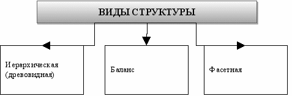
Иерархической (древовидной) структурой называется сложная структура, образуемая при последовательном дроблении системы на все более однородные группы элементов. Она состоит из нескольких уровней («шагов» дробления).
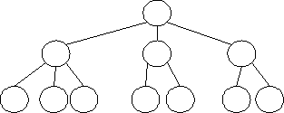
Основное преимущество иерархической структуры заключается в ее большой информационной емкости (класс, подкласс, группа, подгруппа, вид, (разновидности), традиционности и привычности применения, хорошей приспособленности для различной обработки информации, а также возможности для создания при кодировании объектов классификации кодов, несущих смысловую нагрузку.
Недостатком является слабая гибкость ее структуры и заранее установленный порядок ступеней распределения, не допускающий включения при отсутствии резервной емкости новых объектов классификационных группировок и признаков. Вследствие этого изменение хотя бы одного признака ведет к перераспределению многих классификационных группировок. Иерархическая структура характеризуется не только долями объема признака, но и дополнительными показателями.
Характеристикой степени сложности структуры, а именно числом уровней дробления («порядок» структуры).
Средним порядком структуры, т.е. средним номером уровня, взвешенным по долям объема признака, дробление которых завершилось на данном уровне. Эта величина характеризует среднее число дроблений объема признака.
Общим числом конечных (т.е. не дробящихся далее) ветвей структуры.
Средним числом конечных ветвей, приходящихся на один уровень.
Баланс (фр. balance — буквально весы, равновесие) — это особая форма сопоставления структуры одной и той же величины признака, характеризуемой с двух разных сторон или в двух различных аспектах. В наиболее общей форме динамический баланс состоит из четырех составляющих: запас на начало
периода, приход за период, расход за период, запас на конец периода.
Запас на начало + приход = расход + запас на конец периода.
Для аналитических целей каждая из четырех составляющих делится по различным классификационным признакам на части, группы или подгруппы. Если общий объем признака подразделен по одному группировочному признаку, а затем каждый групповой и общий объемы снова подразделены по другому группировочному признаку, то образуется многомерная, в простейшем случае — двухмерная структура с пересекающимися признаками. Двухмерная пересекающаяся структура позволяет рассчитать пять видов структурных показателей (долей). При трех пересекающихся признаках группировки число разных видов структур достигает 19. В общем виде при n взаимопересекающихся признаках структура содержит (n3 - n2 + 1) видов
долей.
Фасетный метод классификации - это метод, при котором заданное множество делится на группировки независимо, по различным признакам. Она не имеет жесткой структуры и заранее построенных конечных группировок. При ней множество объектов, характеризующихся некоторым набором одинаковых для всех объектов признаков (фасет), может делиться многократно и независимо. В классификаторах фасеты чаще всего располагаются в виде простого перечисления и имеют код. Основное преимущество фасетной классификации - гибкость структуры ее построения, так как изменения в любом из фасетов не оказывает влияния на остальные. Фасетный метод классификации позволяет не только образовывать новые классификационные группировки из имеющихся фасетов, но и включать в классификатор без переделки новые и исключать старые фасеты. Недостатком фасетной классификации следует считать недостаточно полное использование емкости вследствие отсутствия практически лишних из возможных сочетаний фасетов, непривычность применения, а также сложность использования этого метода для ручной обработки информации. Для цели анализа структуры, а также сравнения двух (или более) структур в динамике используется большое количество статистических методов и подходов которые можно представить в виде
следующей схемы:

Графический сравнительный анализ структуры.
В социально-экономических исследованиях часто возникает ситуации, в которых необходимо анализировать структуры явлений или процессов за ряд периодов. Одним из способов анализа в данном случае является рассмотрение структурных диаграмм. Самой распространенной структурной диаграммой является секторная или круговая
Рисунок - Состав и структура безработных по образованию в 2003г., %
Данный вид диаграмм удобнее всего использовать при иллюстрации структуры явления за один, два или три периода, но на практике может возникнуть ситуация когда необходимо сравнивать структуру за 5 и более периодов. В данном случае необходимо использовать кольцевую диаграмму.
Рисунок - Состав и структура безработных по образованию в 1992г. и 2003г., %
Данный вид структурной диаграммы рекомендуется использовать если необходимо проиллюстрировать данные за 2-3 периода, если периодов более 3 то необходимо использовать особый вид столбиковых диаграмм – нормированную гистограмму.
Рисунок - Состав и структура безработных по образованию в 1992г., 1998г., 2002-2003гг., %
С развитием экономической науки и электронно-вычислительной техники все большую роль начинает играть использование математических методов в экономике, или экономико-математическое моделирование.
Любая модель представляет собой упрощенное отображение предмета, процесса или явления. Модель экономического процесса или явления, которая описывает поведение моделируемого объекта с помощью математических выражений, называется экономико-математической моделью.
Такие модели широко используются на практике для анализа и прогнозирования экономической ситуации, а также поддержки процесса принятия решений как на микро-, так и на макроуровне (на отдельных предприятиях и на рынках). Благодаря упрощению модель делает экономическую ситуацию более обозримой, но при этом совокупность данных модели должна содержать информацию, достаточную для того, чтобы судить о главных существенных чертах моделируемого объекта и принимать соответствующие решения.
В процессе производства экономико-математические модели играют вспомогательную роль, окончательное решение является прерогативой руководителя. Это связано со сложностью и недостаточной изученностью комплекса экономики, которая представляет собой сложную систему, отличающуюся целенаправленным поведением своих элементов, интересы которых могут приходить в противоречие с интересами системы в целом.
Моделирование экономических ситуаций средствами исследования операций представляет собой один из видов экономико-математического моделирования. В широком смысле слова под исследованием операций понимают математический аппарат поддержки процесса принятия решения в различных областях человеческой деятельности.
При этом операцией называют любое мероприятие, объединенное общим замыслом и направленное к достижению определенной цели.
2
Операция обязательно должна быть управляемой, т.е. включать как факторы среды, так и элементы решения.
Чтобы оценить операцию, необходимо определить критерий ее эффективности - показатель того, насколько результат операции соответствует ее целям (в зависимости от предпринятых действий). Чтобы исследовать операцию, строят ее математическую модель - формальные отношения, устанавливающие связь принятого критерия эффективности с объективными условиями и обстоятельствами, определяющими ход операции.
Одним из разделов исследования операций является теория игр (математическая теория конфликтных ситуаций), которая включает в себя теорию принятия решений. Последнюю рассмотрим более подробно.
Элементы теории принятия решений
Условия принятия решений делятся на:
условия полной определенности;
условия неопределенности (когда нет полной информации). Условия неопределенности в свою очередь делятся на:
а) условия риска (когда известны вероятности поведения природы);
б) условия “дурной неопределенности” (когда даже эти вероятности неизвестны).
Принятие решений в условиях риска
В случае (а) используются различные средства теории вероятностей. Например, можно подсчитать математические ожидания выигрыша при различных стратегиях Аi (поскольку смешанная стратегия природы известна), и выбрать из них наибольшее.
3
П j | 1 | 2 | 3 | 4 | a i |
A1 A2 A3 | 1 3 4 | 4 8 6 | 5 4 6 | 9 3 2 | 5,2 4,5 5,0 |
p j | 0,1 | 0,2 | 0,5 | 0,2 |
|
Например, предприятие может выпускать один из трех видов продукции. Матрица 3 х 4 характеризует прибыль предприятия от выпуска i– го вида продукции (Аi) при j–м состоянии спроса (Пj); i=1, 3; j=1, 4. Известны вероятности каждого состояния pj.

4
a i a ijp j, j1
i 1, 3
max{a i } 5,2 (i = 1)
i
Следовательно, А1 – оптимальная стратегия.
Еще раз подчеркнем, что принятое решение является оптимальным не в каждом отдельном случае, а в среднем, при многократном повторении ситуации.
Например, если речь идет о дневной прибыли, то выпуская первый вид продукции в течении одного дня, фирма, возможно, получит и меньшую прибыль, чем получила бы, выпуская другой вид продукции. Прибыль будет оптимальной (максимальной), если просуммировать ее за 100 или 1000 дней, потому что только при большом количестве опытов вступают в действие законы теории вероятностей, но даже в этом случае величина прибыли не будет гарантированной.
Многократном повторение опыта не обязательно должно быть во времени, но может иметь место и в пространстве. Т.е. если прибыль задана для одного филиала фирмы, то речь может идти о применении оптимальной стратегии, например, сотней таких однотипных филиалов.
Другой возможный критерий основан на понятии риска.
Def. Риск – это разность между выигрышем игрока, который он получил бы, если бы знал ситуацию среды (и соответственно выбрал бы стратегию) и выигрышем, который он получит в тех же условиях, используя
стратегию Ai: rij = max {akj} - aij.
k
4
Из определения всегда rij 0.
Составим матрицу рисков для предыдущего примера. Для этого вначале в каждом столбце платежной матрицы найдем наибольший элемент (если бы состояние спроса было заранее известно, то была бы выбрана именно эта стратегия). Чтобы подсчитать риск, каждый элемент столбца вычтем из этой величины. Например, при первом состоянии спроса наибольшая прибыль достигается при выпуске третьего вида продукции, и равна 4. Если использовать первую стратегию, то прибыль будет равна 1. Следовательно, риск r11 = 4 – 1 = 3 (именно столько мы рискуем недополучить, используя первую стратегию в первой ситуации по сравнению с максимально возможным выигрышем). Аналогично r21 = 4 – 3 = 1; r31 = 4 – 4
= 0. При втором состоянии спроса наибольшая прибыль – 8 - может быть получена при выпуске второго вида продукции, поэтому все элементы второго столбца вычитаются из 8, и т.д.
П j | 1 | 2 | 3 | 4 | ri |
A1 A2 A 3 | 3 1 0 | 4 0 2 | 1 2 0 | 0 6 7 | 1,6 2,3 1,8 |
p j | 0,1 | 0,2 | 0,5 | 0,2 |
|
Найдем с помощью матрицы рисков оптимальную стратегию (для которой ожидаемый риск – наименьший).

4
ri rijp j , j1
i 1, 3

min{ri } 1,6 (i = 1)
i
Следовательно, А1 – оптимальная стратегия; т.е. результат совпал с предыдущим.
Покажем, что решения, найденные этими двумя способами, всегда будут совпадать.
ai ri ai p j ri p j ip j (ai max{a i } ai ) p jmax {ai } const
a
j j j i j i
Итак, эта сумма является постоянной (взвешенное среднее максимальных элементов по столбцам платежной матрицы).
5


a i ri const ri const a i

Эта величина обращается в минимум тогда же, когда a i – в максимум.
Могут быть использованы и другие критерии.
Отметим, что в условиях риска всегда будет получено решение в чистых стратегиях.
Принятие решений в условиях “дурной” неопределенности
При принятии решений в условиях “дурной” неопределенности можно выделить два основных подхода. Первый из них – попытаться свести ситуацию к условиям риска, т.е. некоторым способом определить вероятности возникновения различных ситуаций среды.
Пример такого подхода – использование критерия Лапласа. Он основан на принципе недостаточного обоснования: если нет оснований считать, что вероятности состояний различны, их можно считать равными, т.е.
р1 =. . . = рj =. . . = рn = 1/n.
Изменим условия предыдущего примера. Пусть теперь вероятности возникновения того или иного состояния спроса неизвестны. Применяя критерий Лапласа, будем считать их равными. Так как всего состояний 4, вероятность каждого из них будет 1/4. Тогда ожидаемый выигрыш при использовании каждой стратегии можно определить, как простое среднее элементов по строкам матрицы:

4

п j | 1 | 2 | 3 | 4 | ai |
A1 | 1 | 4 | 5 | 9 | 4,75 |
A2 | 3 | 8 | 4 | 3 | 4,5 |
A3 | 4 | 6 | 6 | 2 | 4,5 |
p j | 0,25 | 0,25 | 0,25 | 0,25 |
|
a i (
j1
a ij

) / 4, i 1, 3
{a i } 4,75 (i = 1)
max
i
6
Следовательно, А1 – оптимальная стратегия, и ничего не зная о вероятностях состояний спроса, все равно следует выпускать первый вид продукции.
Другой способ в рамках того же подхода можно применить, если вероятности состояний можно оценить в ранговой шкале (т.е. упорядочить их, начиная с наиболее вероятных). Тогда предполагают, что эти вероятности пропорциональны членам убывающей арифметической прогрессии:
р1:р2:р3:. . . рj: . . . :рn = n:(n - 1):(n - 2): . . . :(n – j + 1): . . . :1.
Так как должно быть
р j j
1, а
n
j1
n
(n j 1)
j1
( j) n(n 1) , то
2
р 2(n j 1) ,
j n(n 1)
j = 1,n (соответствующий член прогрессии отнесен к сумме
прогрессии).
п j | 1 2 3 4 |
| ai |
A1 A2 A3 | 1 4 5 9 3 8 4 3 4 6 6 2 | 5,6 4,5 5 |
p j | 0,1 0,2 0,4 0,3 |
|
Пусть теперь в условиях того же примера известно, что р3>р4>р2>p1. Тогда предположим, что р3:р4:р2:р1=4:3:2:1. Здесь 2/(n(n+1))=2/(4*5)=0,1; вероятности будут равны 0,4; 0,3; 0,2 и 0,1. Ожидаемый выигрыш тогда будет подсчитан следующим образом:
max{ai } 5,6 (i = 1)
i
Здесь оптимальная стратегия – снова А1.
Другой возможный способ в рамках того же подхода – использование экспертных оценок для определения вероятностей.
7
Принципиально другой подход – не сводить условия “дурной” неопределенности к условиям риска. Рассмотрим некоторые критерии, который используются в этом случае.
Критерий Вальда – максиминный выигрыш:
i j
W max mina ij .
Это критерий крайнего пессимизма, критерий осторожности, так как природа здесь считается противником, выбирающим наихудшую стратегию для лица, принимающего решение.
Критерий Сэвиджа – минимаксный риск:
S min maxr .
i j ij
Этот критерий также пессимистический, но здесь худшим считается не меньший выигрыш, а большая потеря выигрыша по сравнению с возможным в данных условиях.
Критерий пессимизма-оптимизма Гурвица:
i j
j
Н maxh mina ij (1 h)maxa ij , 0 h 1.
При h=1 этот критерий совпадает с пессимистическим критерием
Вальда.
При h=0 он превращается в критерий оптимизма
max maxa ij.
i j
Таким образом, коэффициент h выражает меру пессимизма лица, принимающего решение и выбирается из субъективных соображений (чем опаснее ситуация, тем ближе он должен быть к 1).
Критерий Гурвица можно построить и для рисков:
i j
j
Н minh maxrij (1 h ) minrij .
8
Применим эти критерии к тому же примеру, в котором теперь вероятности возникновения того или иного состояния спроса неизвестны
(оптимальную стратегию обозначим А*):
aij =
1 4
3 8
4
6
5 9
4 3
2
6
min a
j ij
1
3
2
W = 3
A* A
2
1
maxr
rij =
3 4 1 0
1 0 2 6
0
7
2
0
j ij
4
6
7
S = 4
A* A
Подсчитаем критерий Гурвица для различных h:
1 4 5 9
a = 3 8 4 3
mina ij
j
1
maxa ij
j
9
H
h 9(1 h ) 9 8h
3h 8(1 h ) 8 5h
h = 0,8
3,6
4
h = 0,5
5
5,5
h = 0,2
8,4
7
ij 4 6 6 2 3
8 2h 6(1 h ) 6 4h
2,8 4
5,2
2 6
При h=0,8 (наиболее пессимистический из рассмотренных вариантов) и при h=0,5 А*=А2. В более оптимистическом варианте (h=0,2) А*=А1.
Применять к данному случаю критерий Гурвица для рисков не имеет смысла, так как в матрице рисков здесь во всех строках имеются нули (минимальные риски по строкам, которые следует умножить на (1-h), везде будут равны 0).
Итак, в условиях “дурной” неопределенности с точки зрения уменьшения риска целесообразно выпускать первый вид продукции, а с точки зрения получения наибольшей прибыли – второй. Выбор первого вида продукции с точки зрения получения прибыли предполагает значительный оптимизм.
Проиллюстрируем применение рассмотренных методов следующей схемой:
9
Методы принятия решения
а) в условиях риска:
расчет
б) в условиях «дурной неопределенности»
ожидаемого выигрыша;
расчет ожидаемого риска; и т.п.
путем сведения ситуации к условиям риска (см. (а)), вероятности состояний определяются:
по критерию Лапласа;
через ранговые оценки вероятностей;
экспертным путем
не сводя ситуацию к условиям риска, по критериям:
Вальда;
Сэвиджа;
Гурвица для
выигрышей или рисков
Построим математическую модель следующей экономической ситуации.
Кондитерская фабрика при производстве двух видов карамели
«Снежинка» и «Яблочная» - использует три вида основного сырья: сахарный песок, патоку и фруктовое пюре. Запасы сырья составляют соответственно 800 т, 600 т и 120 т. Прибыль от реализации 1 т «Снежинки» составляет
108 ден.ед., а «Яблочной» - 140 ден.ед. На выпуск 1 т «Снежинки» расходуется 0,8 т сахара, 0,2 т патоки и 0,01 т фруктового пюре, а на выпуск 1 т «Яблочной» - соответственно по 0,5 т, 0,4 т и 0,1 т этих видов сырья.
Необходимо найти план производства карамели, который даст наибольшую прибыль.
Описанная ситуация представляет собой задачу производственного планирования (или задачу об использовании ресурсов). Чтобы построить математическую модель данной ситуации, прежде всего введем переменные, значения которых определяют принимаемое решение. В самом деле, что в данном случае означает «план производства»? Очевидно, следует найти, сколько именно нужно выпускать продукции каждого вида.
Обозначим х1 - производство карамели «Снежинка», т; х2 -
производство карамели «Яблочная», т.
Теперь задумаемся о цели данной операции. В данном случае целью является получение как можно более высокой общей выручки или прибыли. Каким образом можно вычислить ее через исходные данные задачи и введенные нами обозначения?
Прибыль от производства карамели «Снежинка» составит 108х1 ден.ед. В самом деле, если выпустить 10 т этой карамели (х1=10), то прибыль от нее составит 108*10 = 1080 (ден.ед.), если выпустить 2 т, то 108*2 = 216 (ден.ед.); если вообще не выпускать эту карамель, то и прибыли от нее не будет – 108*0 = 0, и т.д. Аналогично прибыль от «Яблочной» составит 140х2 ден.ед.
Общая прибыль представляет собой сумму прибыли от двух видов карамели. Необходимо максимизировать прибыль от всей карамели, т.е. 108х1 + 140х2.
Очевидно, что если бы значения переменных могли быть любыми, выручка (или прибыль) могла бы возрасти до бесконечности. Однако это не так, на выпуск продукции наложены некоторые ограничения. Прежде всего, они связаны с ограниченными запасами ресурсов.
На 1 т карамели «Снежинка» затрачивается 0,8 т сахарного песка. Следовательно, на х1 т этой карамели будет затрачено 0,8х1 т (т.е. 1,6 т, если выпускается 2 т такой карамели, 80 т, если выпускается 100 т такой карамели, и т.д.). Аналогично на производство карамели «Яблочная» будет затрачено 0,5х2 т сахарного песка. Таким образом, общие затраты сахарного песка составят 0,8х1 + 0,5х2 т. Поскольку его запас составляет 800 т, можно записать: 0,8х1 + 0,5х2 800.
Аналогично для патоки следует построить ограничение 0,2х1 + 0,4х2 600, а для фруктового пюре 0,01х1 + 0,1х2 120. Таким образом, построено три ограничения.
По смыслу задачи обе переменные неотрицательны: х1 0, х2 0.
Итак, математическую модель можно построить следующим образом:
2
max 108х1 + 140х2 0,8х1 + 0,5х2 800
0,2х1 + 0,4х2 600
0,01х1 + 0,1х2 120
х1,2 0
Все выражения, входящие в запись данной математической модели, представляют собой линейные функции. Построенная модель представляет собой задачу линейного программирования.
Основные понятия линейного программирования
Задача линейного программирования в общем виде может быть записана следующим образом:
max n
cj xj
(1)
min
n
j1
,
(2)
aijx j Ri bi
j1
i 1, m
где
Ri ; ; ;
xj – переменные;
aij, bi, cj - константы;
n – число переменных; m – число ограничений.

Распространенным является случай, когда на все переменные
накладываются ограничения неотрицательности, т.е. xj 0,
j 1, n . При этом,
3
говоря о размерности задачи (числе переменных и ограничений), ограничения на знак переменных обычно не считают.
Выражение (1) представляет собой целевую функцию задачи линейного программирования (или функцию цели), которую необходимо максимизировать или минимизировать. Например, для задачи, поставленной в предыдущем разделе, целевой функцией является выражение (108х1 + 140х2) – именно оно отражает цель операции. Выражения (2) представляют собой систему ограничений, которая может состоять из уравнений и нестрогих неравенств. В рассмотренной задаче производственного планирования такая система состояла только из неравенств: трех ограничений по запасам ресурсов и двух ограничений неотрицательности переменных.
Любой набор значений переменных, т.е. вектор чисел Х = (x1, x2, . . . xn), называется планом задачи линейного программирования. Например, для той же задачи любые два числа будут представлять собой план. План (10; 20) означает, что х1=10, а х2=20, т.е. выпуск карамели
«Снежинка» составит 10 т, а выпуск карамели «Яблочная» - 20 т. План (2000; 1000) означает, что выпуск карамели «Снежинка» составит 2000 т, а выпуск карамели «Яблочная» - 1000 т. План (0; 0) означает, что карамель не будет выпускаться вообще. План (0; -10) означает, что карамель «Снежинка» не выпускается, а выпуск карамели «Яблочная» составит -10 т. Последнее, вообще говоря, очевидно бессмысленно. И т.д. Если в задаче 5 переменных, то любые 5 чисел будут представлять собой план, если 10 переменных, - то любые 10 чисел; и т.д.
План, удовлетворяющий системе ограничений, называется допустимым. Чтобы проверить, является план допустимым или нет, необходимо подставить его в систему ограничений. Если при этом все
4
уравнения и неравенства истинны, то план допустимый. Если хотя бы одно ложно, то план – недопустимый.
Проверим на допустимость план (10; 20):
0,8х1 + 0,5х2 = 0,8*10 + 0,5*20 = 18 800
0,2х1 + 0,4х2 = 0,2*10 + 0,4*20 =10 600
0,01х1+0,1х2 = 0,01*10 + 0,1*20 = 2,1 120
х1 = 10 0
х2 = 20 0
Следовательно, этот план допустимый. Действительно, кондитерская фабрика может выпускать карамель таким образом. При этом будет затрачено всего 18 т сахарного песка, 10 т патоки и 2,1 т фруктового пюре, а в запасе имеется значительно больше.
Если проверить на допустимость план (0; 0), в результате будет получена система неравенств:
0 800
0 600
0 120
0 0
0 0
Все эти неравенства истинны. Следовательно, и этот план допустимый. Впрочем, и без того очевидно, что кондитерская фабрика может не выпускать продукцию.
Проверим на допустимость план (2000; 1000):
0,8х1 + 0,5х2 = 0,8*2000 + 0,5*1000 = 2100 800
0,2х1 + 0,4х2 = 0,2*2000 + 0,4*1000 = 800 600
0,01х1+0,1х2 = 0,01*2000 + 0,1*1000 = 120 120
х1 = 2000 0
х2 = 1000 0
5
Первые два утверждения – ложные. На самом деле, 2100>120, а 800>600. Следовательно, этот план недопустимый (вообще говоря, убедившись, что первое неравенство – ложное, можно было выполнение остальных и не проверять). Итак, мы убедились, что фабрика не может выпускать карамель таким образом, так как ей не хватит для этого сахарного песка и патоки.
Если подставить в систему ограничений план (0; -10), то все они выполнятся, кроме последнего ограничения: -10<0. Следовательно, раз хотя бы одно ограничение не выполняется, и этот план недопустимый (выпустить
-10 т карамели невозможно).
Вся совокупность допустимых планов представляет собой область допустимых планов (ОДП) задачи.
Допустимый план, на котором достигается максимальное или минимальное значение целевой функции, называется оптимальным планом, а само это значение - оптимумом задачи.
Для рассмотренной задачи оптимальным планом будет такой допустимый план производства карамели, который позволит получить наибольшую прибыль. Сама эта величина прибыли – самая высокая, какую только можно получить, - будет представлять собой оптимум.
Следует отметить, что оптимальных планов в задаче может быть более одного, но значение целевой функции на них должно быть одинаковым, т.е. оптимум всегда один. Например, в задаче производственного планирования иногда можно найти разные способы произвести продукцию таким образом, чтобы прибыль (или выручка) были максимальными. Но все они дадут одну и ту же – максимальную – величину прибыли.
6
Таким образом, с точки зрения изучаемой дисциплины употребление таких словосочетаний, как «самый оптимальный» или «наиболее оптимальный», является неграмотным. Слово «оптимальный» не сочетается со словами «самый», «наиболее», «очень» и т.п., как любое прилагательное в превосходной степени (нельзя сказать «самый наилучший»). На самом деле, такое выражение просто бессмысленно – ведь если некоторый план действий
«самый оптимальный», значит, есть и другие оптимальные планы, «менее оптимальные», чем он. Но раз они чем-то хуже, значит, они оптимальными не являются.
Можно доказать, что если оптимальный план существует, то он либо единственный, либо их бесконечно много*; любая смесь (взвешенная сумма) оптимальных планов является оптимальным планом.
Решить задачу линейного программирования означает найти все ее оптимальные планы и оптимум, хотя часто ограничиваются нахождением одного из возможных решений. Если задача линейного программирования не имеет решений, необходимо установить причину ее неразрешимости. Это может быть одна из двух причин:
ее ОДП пуста (т.е. система ограничений несовместна),
целевая функция не ограничена на ОДП (т.е. ее значение можно увеличивать или уменьшать до бесконечности).
Задачи линейного программирования, как экономико-математические модели, находят очень широкое применение. Рассмотренная выше задача производственного планирования представляет собой лишь одну из возможных экономических интерпретаций задачи линейного программирования, наиболее традиционную. Множество других

* За исключением задач, в которых переменные могут принимать только целые значения.
7
экономических ситуаций может быть описано в тех же математических терминах, что делает возможным применение к их решению одного и того же математического аппарата.
Для того чтобы построить математическую модель экономической ситуации в виде задачи линейного программирования, прежде всего необходимо ввести переменные задачи. Они должны быть введены таким образом, чтобы их значения определяли принимаемое решение (получив значения переменных, мы получаем ответ на поставленный вопрос).
Затем определяют цель, критерий эффективности операции, ту величину, которую необходимо экстремизировать в задаче. Ее выражают через введенные переменные - получают линейное выражение для целевой функции.
После этого необходимо установить, чем ограничивается рост или уменьшение целевой функции, т.е. определить ограничения задачи. Их нужно также выразить через переменные и записать в виде системы уравнений и неравенств.
Кроме того, при построении модели полезно воспользоваться следующими рекомендациями. При определении переменных следует заранее обдумать, позволят ли они отразить в модели все условия задачи (если известно, что нет избыточных условий). В конкретной задаче указывают единицы измерения для переменных. Если в исходных данных задачи одна и та же величина измеряется в различных единицах (например, масса в граммах, килограммах, тоннах), то необходимо перевести эти данные в одни и те же единицы измерения. Выражая целевую функцию и ограничения через переменные, следует проверить, какими единицами будут измеряться полученные величины и не являются ли они бессмысленными с экономической точки зрения (например, не измеряются ли левая и правая части ограничений в разных единицах). Отдельно следует обдумать ограничения на знак переменных.
8
В некоторых задачах переменные могут принимать только целые значения. Этот факт также необходимо записать в виде ограничения: ХZ. Такое ограничение выводит поставленную задачу из класса задач линейного программирования в класс задач целочисленного линейного программирования. Однако, рассмотренных здесь понятий достаточно для того, чтобы построить математическую модель и для целочисленной задачи.
Приведем некоторые примеры экономических задач, математические модели которых можно построить в виде задач линейного программирования. Следует отметить, что здесь будут рассмотрены далеко не все такие задачи; а кроме того, даже те, что рассмотрены, существуют в разнообразных модификациях, и классификация этих задач в большой мере условна, различается у разных авторов.
Студентам предлагается самостоятельно изучить примеры постановки задачи о диете (о составлении рациона, о смеси), задачи о раскрое материалов, задачи о загрузке транспорта и др.
Формы записи задачи линейного программирования
Формулы (1) и (2) описывают задачу линейного программирования в смешанной форме. Кроме того, существует несколько специальных форм записи таких задач.
Задачу с неотрицательными переменными, все остальные ограничения которой имеют форму уравнений, будем называть канонической формой записи задачи линейного программирования:
Любая задача в смешанной форме может быть приведена к канонической. Это делается путем введения неотрицательных дополнительных переменных, которые прибавляются к левой части неравенства либо вычитаются из нее (после этого знак неравенства заменяют
9
на «равно»). Дополнительные переменные представляют собой разность между частями неравенства.
Неотрицательности переменных добиваются заменой неограниченных по знаку переменных на разность двух неотрицательных. Подробнее этот материал рекомендуется изучить самостоятельно.
Задачу с неотрицательными переменными, все остальные ограничения которой имеют форму неравенств одного знака (, если задача на максимум, и , если на минимум), будем называть стандартной формой записи задачи линейного программирования. Любая задача в смешанной форме может быть приведена к любой из стандартных форм. Подробнее этот материал рекомендуется изучить самостоятельно.
Если задача линейного программирования приведена к стандартной или канонической форме, ее удобно кратко записать в матричной форме.
10
Эконометрика – это наука, изучающая количественные взаимосвязи экономических показателей на основе использования аппарата теории вероятностей и математической статистики.
Эта наука возникла в результате взаимодействия и объединения экономической теории, статистики (как экономической, так и математической) и других разделов математики. Методы эконометрики позволяют выявлять новые, ранее не известные связи между экономическими показателями, а также уточнять или отвергать гипотезы о существовании таких связей.
Эконометрическая модель, таким образом, представляет собой формализованную математическую модель взаимосвязи между экономическими показателями, построенную на основе использования статистических методов.
Можно сказать, что она представляет собой частный случай экономико-математической модели, т.е. экономическую модель, представленную в математической форме.
Уравнение регрессии. Взаимосвязи между показателями, отражаемые в эконометрической модели, обычно описываются уравнением регрессии. Приведем упрощенный пример. Предположим, что в начальный момент времени цена на некоторую продукцию составляет 5 ден.ед., при этом каждый месяц она возрастает на 10%, т.е. в 1,1 раза. Тогда уравнение регрессии, отражающее взаимосвязь между двумя показателями: ценой продукции и временем, будет выглядеть следующим образом:
yt = 5 * 1,1t + εt,
где t – время, мес.,
yt – цена в момент времени t,
εt - случайная компонента процесса на момент времени t.
Первый вопрос, который решают при построении эконометрической модели, - это вопрос спецификации.
Спецификация модели – это математическая форма записи уравнения зависимости результирующей переменной от одного или нескольких факторов. По сути, она представляет собой отбор факторов, включаемых в модель, и выбор вида уравнения регрессии.
В зависимости от спецификации эконометрических моделей классифицируют на несколько типов. Соответственно, основных классификационных признаков, связанных с классификацией, два – количество включенных факторов (т.е. экономических показателей) и тип зависимости между показателями в уравнении регрессии. Кроме того, эконометрические модели классифицируют по типу исходных данных.
По количеству включенных факторов различают два типа эконометрических моделей: модели парной и множественной регрессии.
Парная регрессия (ее еще называют – простая) представляет собой регрессию между двумя показателями, двумя переменными.
Приведенный выше пример относится к парной регрессии. В общем виде уравнение парной регрессии можно записать следующим образом:
y = f(x) + ε,
где y – зависимая переменная (результативный признак); x – независимая переменная (признак-фактор);
f(x) – функция, отражающая регрессионную зависимость;
ε - случайная компонента, которая характеризует отклонение реального значения результативного признака от теоретического.
Множественная регрессия представляет собой зависимость между результативным признаком и двумя либо большим числом факторов.
В общем виде ее можно записать следующим образом:
y = f(x1, x2, …, xn) + ε, где y – результативный признак;
n ≥ 2 – число независимых факторов, включенных в модель; x1, x2, …, xn – признаки-факторы;
f(X) – функция, отражающая регрессионную зависимость; ε - случайная компонента.
При использовании моделей множественной регрессии обычно, помимо построения самого уравнения регрессии и определения совокупного влияния факторов на моделируемый показатель, определяют также влияние на результат каждого фактора в отдельности.
По-другому признаки-факторы еще называют объясняющими, предикторными, экзогенными переменными, регрессорами. Зависимую, результирующую переменную y иногда называют эндогенной.
По типам зависимости, используемым в модели, можно выделить следующие типы эконометрических моделей:
линейная (если используется линейная зависимость между показателями) (y = ax + b или y = a1x1 + a2x2 + … +anxn + b; парную линейную регрессию еще иногда называют простой регрессией);
нелинейная (если используется нелинейная связь). Здесь, в свою очередь, могут быть использованы различные функции:
а) полиномы различных степеней, начиная со второй, т.е.
б) степенная функция (y = axb)
в) гиперболическая функция (у = a/x + b)
Формулы для нелинейных функций здесь приведены для случая, когда имеется один признак-фактор, хотя эти функции можно использовать и в случае множественной регрессии.
г) показательная (экспоненциальная) функция (у = aеbx). Можно показать, что показательная и экспоненциальная функция – одно и то же. Действительно, пусть у = ax = a(eln )x = aex*ln = aеbx , где b = ln .
д) другие нелинейные функции (простая модифицированная экспонента (у = k - aеbx); логистическая кривая (у = k / (1 - aеbx) ); функция
Гомпертца у = k a (bx )
и т.д.)
Классификация эконометрических моделей по типам данных
Кроме того, эконометрические модели можно классифицировать по типам данных. А именно, исходные данные для модели могут быть пространственными либо временными рядами.
Пространственные данные представляют собой данные об экономических показателях на определенный момент времени (например, данные о среднем уровне дохода и среднем уровне спроса на некоторую продукцию в различных регионах позволяют исследовать зависимость между спросом и доходом).
Временные ряды позволяют исследовать зависимость показателя от времени (например, по данным о спросе на продукцию в одном и том же регионе в разные моменты времени позволяют провести такое исследование для спроса).
Основные проблемы, возникающие в процессе моделирования, и связанные с ними возможные ошибки. Выделим основные проблемы, возникающие в процессе моделирования, и связанные с ними возможные ошибки:
проблема отбора факторов, включаемых в модель а) количество факторов
б) качественный состав факторов
Эти две стороны одной проблемы тесно взаимосвязаны. Содержательный отбор факторов очень важен, поскольку он лежит в основе спецификации модели. Чем больше факторов, влияющих на результат, будет учтено, тем более адекватной, близкой к реальности будет построенная модель. Но, с другой стороны, существует опасность включить в модель лишние факторы, которые не являются существенными в данном исследовании. Это может привести к очевидно нелепым результатам (в качестве примера можно привести анекдот о вреде огурцов: «Сколько людей, умерших в раннем возрасте, употребляло огурцы? Почти 100%, - следовательно, огурцы вредны для здоровья»).
Кроме того, чем больше факторов включено в модель, тем она сложнее, и выигрыш в адекватности может быть иногда сведен на нет трудностями, связанными с построением и использованием модели.
Иногда количество факторов, включаемых в модель, можно уменьшить за счет их агрегирования, т.е. объединения нескольких факторов в один. Кроме того, включив в модель время, можно иногда учесть не учтенные в явном виде факторы, связанные со временем.
Ошибки в спецификации модели могут быть также допущены за счет того, что признаки-факторы влияют не только на результат, но и друг на друга.
проблема определения связи между факторами а) выбор функции для моделирования
б) определение параметров этой функции
Наиболее простой функцией является линейная, и в случае парной регрессии для нее необходимо определить всего два параметра. Тем не менее, не все зависимости можно моделировать с помощью этой функции. При использовании нелинейных функций также необходимо помнить о том, что выигрыш в адекватности сопровождается ростом сложности модели.
определение исходных данных, на основании которых будет строиться модель
а) объема выборки б) состава выборки
При построении эконометрической модели невозможно учесть все возможные значения показателей, так как обычно их очень много и даже иногда бесконечно много. Например, исследуя зависимость спроса от дохода путем опроса потребителей, обычно невозможно опросить всех потенциальных покупателей, и опрашивают только некоторых из них. В таком исследовании все покупатели представляют собой генеральную совокупность, а опрошенные (учтенные в модели) – выборку.
Если выборка мала, то имеется мало возможных комбинаций значений показателей, и поэтому велика вероятность случайного обнаружения комбинации значений, показывающих сильную зависимость, которой на самом деле нет. Например, опросив всего пару человек из сотен, мы можем случайно столкнуться с людьми, которые при высоком доходе предъявляют небольшой спрос на данный товар, из чего сделаем неправильный вывод о зависимости между этими показателями.
Другой пример, который часто используется в теории вероятности, - подбрасывание монеты (здесь генеральная совокупность - бесконечно большое число опытов). В нормальных условиях герб или решка выпадают примерно с одинаковой частотой. Предположим, что монета повреждена, и герб выпадает в 60% случаев. Пусть объем выборки – 100 отдельных экспериментов, и герб выпал 58 раз. Это с очень большой неуверенностью позволит предположить, что монета неправильно сбалансирована, поскольку такое отклонение от ожидаемых 50% не столь велико. Для подтверждения предположения о повреждении монеты следовало бы провести большее количество экспериментов, например, 1000. Однако, если бы монета была повреждена более существенно (например, герб выпадал бы в 99% случаев),
и в выборке из 100 экспериментов он выпал бы 98 раз, то тогда это послужило бы явным признаком повреждения монеты.
Минимальный объем выборки. Из последнего примера видно, что необходимый минимальный объем выборки зависит от того, насколько сильную связь исследуют.
Строя эконометрическую модель на основе выборки заданного объема, мы выдвигаем гипотезу, что существует достаточно сильная связь между показателями. В реальности эта связь может отсутствовать (назовем это нулевой гипотезой). Насколько наша гипотеза является значимой, насколько мы можем быть в ней уверены? Она тем более значима, чем меньше вероятность ее принять в случае, если на самом деле реализовалась нулевая гипотеза. Т.е вероятность того, что мы установили наличие связи, когда ее на самом деле нет, должна быть мала. Эта вероятность функционально зависит от объема выборки и от того, насколько сильную зависимость мы хотим выявить. Для определения этой вероятности используют статистические таблицы, в которых отражены значения соответствующих функций. В свою очередь, при определении объема выборки для построения эконометрической модели необходимо заранее задаться этой вероятностью.
Кроме того, необходимо помнить, что число наблюдений в выборке должно превосходить число признаков в несколько раз, чтобы параметры уравнения множественной регрессии были статистически надежными.
Большую роль также играет качественный состав выборки. Она обязательно должна быть репрезентативной, т.е. правильно отражать свойства генеральной совокупности. Для этого при определении методики отбора исходных данных необходимо исключить факторы, которые сами по себе могут повлиять на результат. Например, проводя телефонный опрос потребителей с целью выяснить их отношение к определенному виду продукции, можно получить данные в основном о тех респондентах, которые
часто находятся дома, у телефона. Это может само по себе влиять на их потребительские предпочтения и, таким образом, исказить реальную ситуацию.
Коэффициент корреляции
При проведении эконометрического исследования, как правило, помимо построения уравнения регрессии, рассчитывают также показатели тесноты связи между параметрами. Один из таких показателей – коэффициент корреляции. Он измеряет тесноту линейной связи между переменными.
Коэффициент корреляции между переменными х и y рассчитывается по формуле:
rxy
Cov(x, y) ,
(x)(y)
1 m
где
Cov(x, y) (xi x)(yi y) xy x * y
m
i1
- коэффициент
ковариации между этими переменными; m – число наблюдений;
x1, x2, … xm; y1, y2, … ym – значения переменных;
m
x 1 m x ,
y 1 m y ,


xy 1 m

i1
i
i1
i xi yi - средние значения x, y и xy;
i1
1 m
2
1 m
2

m
m
m
x xi x , y
i1
yi y
i1
- среднеквадратические

m
(стандартные) отклонения значений переменных (СКО).
При этом Cov (x,x) =
2 (x) а Cov (y,y) =
2 (y) , т.е. ковариация
переменной с самой собой равна ее дисперсии. Поэтому корреляция признака с самим собой всегда равна единице.
Коэффициент корреляции может принимать значения в диапазоне от
-1 (отрицательная корреляция) до 1 (положительная корреляция). Чем ближе он по модулю к единице, тем теснее линейная связь. Если модуль равен 1, то связь функциональная (т.е. нет случайных отклонений). Если его значение приближается к нулю, линейная связь между переменными отсутствует. Отметим, что коэффициент корреляции может равняться нулю тогда и только
тогда, когда ковариация признаков равна нулю (это следует из формулы
(1.4)):
rxy
0 Cov(x, y) 0 .
Поскольку в числителе и знаменателе формулы находятся величины, измеряемые в одних и тех же единицах измерения (перемножаются единицы измерения показателей), коэффициент корреляции является величиной безразмерной.
Существуют и другие формулы для расчета коэффициента корреляции, которые дают тот же результат.
Для измерения тесноты связи используется также коэффициент детерминации, который представляет собой квадрат коэффициента корреляции и будет впоследствии рассмотрен более подробно. Отметим только, что этот коэффициент изменяется от 0 до 1, и чем он ближе к единице, тем связь теснее.
Отбор факторов, включаемых в модель множественной регрессии
Методы отбора факторов. При построении моделей множественной регрессии одним из важнейших этапов является отбор факторов, воздействующих на результирующий признак. Обычно он происходит в два этапа:
Содержательный анализ факторов. Выделяют те факторы, которые существенно влияют на результат.
Расчет количественных оценок, позволяющих оценить влияние факторов на результат и друг на друга. На их сновании проводится окончательный отбор факторов. Здесь могут использоваться различные методы отбора факторов, например:
а) использование парных коэффициентов корреляции;
б) использование парных частных коэффициентов корреляции; в) расчет вкладов факторов в объясненную дисперсию;
г) и т.п.
Рассмотрим более подробно использование парных коэффициентов корреляции.
Матрица парных коэффициентов линейной корреляции. Пусть в модели множественной регрессии предполагается использовать n признаков- факторов x1, x2, …, xn , а y – результативный признак. Тогда для этих переменных может быть построена матрица парных коэффициентов линейной корреляции, или корреляционная матрицу, которая по своей сути представляет совокупность коэффициентов корреляции между всеми возможными парами признаков:
n
y x1 x2 ... xn
y 1
1
2
rx y rx y
...
rx y
1
1
n
x1 rx y
rx x
...
rx x
1
r
2
x
x y rx x
1 ...
rx x
2
...
2
...
1 2
...
...
...
n
...
x r r r ... 1
n xn y
x1xn
x2xn
Эта матрица всегда симметрична относительно главной диагонали, а члены матрицы, стоящие на этой диагонали, равны 1, поскольку представляют собой корреляцию признака с самим собой.
Анализ корреляционной матрицы позволяет выявить факторы, тесно связанные между собой, т.е. коллинеарные.
Коллинеарность факторов – это тесная линейная связь между двумя факторами. Считается, что переменные явно коллинеарны, если коэффициент корреляции между ними по модулю превышает 0,7 .
При наличии коллинеарных признаков один из них нужно исключить из модели, чтобы между оставшимися факторами не было тесных связей. Разумеется, здесь речь идет именно о связи между признаками-факторами x1, x2, …, xn. Коэффициенты корреляции между результатом y и факторами x1,
x2, …, xn должны быть как можно ближе к единице по модулю, т.е. связь между ними должна быть тесной.
Мультиколлинеарность факторов – это тесная линейная связь между несколькими переменными, коллинеарность многих факторов.
По парным коэффициентам корреляции можно заметить лишь явную коллинеарность факторов. Чтобы оценить мультиколлинеарность всех факторов, имеет смысл построить матрицу парных коэффициентов корреляции между факторами (матрицу межфакторной корреляции) и рассчитать ее определитель. Эта матрица может быть легко получена из корреляционной матрицы вычеркиванием первых строки и столбца (соответствующих признаку-результату).
Очевидно, что новая матрица в случае полного отсутствия корреляции между факторами будет единичной матрицей (все недиагональные элементы равнялись бы нулю), и ее определитель равнялся бы единице. В противоположном случае, т.е. если бы между факторами была полная линей- ная зависимость, все элементы новой матрицы равнялись бы 1, и ее определитель был бы равен 0. Таким образом, чем ближе определитель такой матрицы к нулю, тем сильнее мультиколлинеарность факторов.
Мультиколлинеарность факторов отрицательно сказывается на качестве модели, поскольку:
из-за связи между факторами затрудняется оценка влияния отдельных факторов на результат, что затрудняет интерпретацию параметров регрессии,
может привести к включению в модель лишних параметров;
уменьшается точность оценок коэффициентов регрессии, растет дисперсия оценок и стандартные ошибки;
завышается коэффициент множественной корреляции (см. далее).
Требованиям к факторам, включаемым в модель множественной регрессии. Таким образом, основными требованиями к факторам, включаемым в модель множественной регрессии, являются следующие:
их существенное влияние на результативный признак;
отсутствие мультиколлинеарности;
количественная измеримость факторов. Если в модель включается качественный фактор, для него необходимо разработать количественную шкалу измерения, например, балльную, либо использовать фиктивные переменные (см. далее).
Коэффициент множественной корреляции. Тесноту линейной связи между результатом и всеми признаками-факторами можно измерить с помощью множественного коэффициента корреляции, который для линейной модели можно рассчитать по формуле:
R yx1x 2 ...x n
1 м.п.к.к. ,

м.м ф.к.
где ∆м.п.к.к. – определитель матрицы парных коэффициентов корреляции;
∆м.м-ф.к. – определитель матрицы межфакторной корреляции.
Этот показатель будет более подробно рассмотрен в дальнейшем при изучении оценки качества модели.
Фиктивные переменные
Обычно в качестве признаков-факторов выступают переменные, принимающие количественные значения. Однако иногда бывает необходимо включить в модель качественные факторы, обычно измеряемые в номинальной шкале (шкале наименований). Это может быть пол, род занятий, образование, сезон и т.п. В шкале наименований нельзя производить
арифметические действия, и задано только отношение тождества (объект либо принадлежит некоторому множеству, либо нет).
Помимо номинальной шкалы, существуют также другие виды шкал, в которых можно осуществлять далеко не все вычисления (например, порядковая шкала, на которой заданы только отношения тождества и больше-меньше; шкала разностей, на которой можно вычитать и складывать, но умножать и делить нельзя и т.п.). Факторы, измеряемые в этих шкалах, тоже могут включаться в эконометрическую модель.
Чтобы ввести такие переменные в модель, необходимо поставить им в соответствие некоторые числа, с которыми удобно производить вычисления в абсолютной шкале. Построенные таким образом переменные называют фиктивными переменными.
Остальные переменные модели, в противоположность фиктивным, иногда называют значащими.
Фиктивные переменные помогают отразить в модели неоднородность структуры наблюдений по некоторому качественному признаку.
Чаще всего в качестве фиктивных переменных используются так называемые бинарные (булевы, дихотомические) переменные, которые могут принимать всего два значения - 0 или 1.
Например, введем фиктивную переменную d, обозначающую пол респондента:
d 1 мужской пол
0 женский пол
Пусть эконометрическая модель отражает линейную зависимость спроса на некоторый продукт от цены на него в виде парной регрессии
y = ax + b + ε,
где y – спрос, как результативный признак; x – цена на продукт (признак-фактор);
ε – случайная компонента;
а и b – параметры модели.
Предположим, что зависимость спроса на этот продукт, кроме того, зависит еще и от пола предполагаемого покупателя, причем уравнения отличаются только свободным членом, т.е. y = ax + b1 + ε для мужчин и для y
= ax + b2 + ε женщин. Эти два уравнения можно представить в виде одного уравнения множественной регрессии с двумя признаками-факторами – x и d: y = ax + db1 + (1-d)b2 + ε = ax + d(b1 - b2) + b2 + ε
В других случаях введение фиктивной переменной может отражать влияние неоднородности наблюдений не только на свободный член, но и на другие параметры регрессии.
Кроме того, может использоваться несколько фиктивных переменных.
Например, можно ввести фиктивные переменные d1 и d2:
1 наличие высшего образования
d1 0 отсутствие высшего образования
0 отсутствие стажа работы
2
d 1 наличие стажа работы
Эти переменные можно перемножать между собой. Произведение d1d2 будет служить признаком одновременного наличия стажа и высшего образования (только в этом случае оно будет равно 1; если хотя бы одно условие отсутствует, d1d2 = 0).
Фиктивная переменная не обязательно должна быть бинарной. Если она используется для отражения в модели качественного признака, принимающего не два, а большее количество значений в номинальной шкале, можно каждому такому значению поставить в соответствие значение фиктивной переменной. Но на практике это делают редко, поскольку в этом случае сложно дать коэффициентам регрессии содержательную интерпретацию.
Например, если фиктивная переменная соответствует одному из четырех сезонов, она могла бы принимать значения 1, 2, 3 и 4, или любые другие четыре разных значения. В этом случае переменная не была бы бинарной. Однако обычно вводят не одну, а три переменных:
0 не зима
1
d 1 зима
d 1 весна
0 не весна
2
d 1 лето
0 не лето
3
Четвертая переменная не вводится, поскольку если бы была введена аналогичным образом переменная d4, то всегда выполнялась бы линейная зависимость между признаками факторами d1 + d2 + d2 + d4 = 1. Такая зависимость лишит исследователя возможности найти параметры регрессии с помощью метода наименьших квадратов, поскольку нарушится одна из его важных предпосылок (см. далее).
Пусть y = a1d1 + a2d2 + a3d3 + b + ε, где y – спрос на продукцию, зависящий от сезона. Тогда смысл параметров регрессии легко интерпретировать. В самом деле, тогда зимой значение спроса будет a1 + b, весной a2 + b, летом a2 + b, осенью b. Каждый из коэффициентов a1, a2, a3 представляет собой отклонение спроса в данном сезоне от осеннего спроса b.
В эконометрических моделях, отражающих зависимость результата от времени, т.е регрессионных моделях с временными рядами, принято использовать три основных типа фиктивных переменных:
индикаторы принадлежности наблюдения к определенному периоду (для наблюдений от и до определенного момента времени они равны 1, а для всех остальных – нулю). Такие переменные используются для моделирования скачкообразных сдвигов в структуре наблюдений. Например, если предположить, что в деятельности экономической системы наблюдалась определенная тенденция в период с 2000 по 2007 гг., а до и после этих лет она резко отличалась, то имеет смысл использовать в модели переменную,
которая будет принимать единичные значения только для наблюдений из этого периода.
сезонные переменные — индикаторы принадлежности наблюдений к определенному сезоны (месяцу, кварталу). Чаще всего используются при исследовании экономических явлений, имеющих четкие различия в своем сезонном протекании (например, моделирование спроса на зимнюю одежду и обувь).
линейный временной тренд. Здесь фиктивная переменная по сути своей представляет собой номер наблюдения. Она показывает, какой промежуток времени прошел от условного начала отсчета времени (нулевого момента) до того момента, к которому относится данное наблюдение.
В общем виде линейной уравнение множественной регрессии можно записать следующим образом:
y = a1x1 + a2x2 + … +anxn + b + ε,
где y – результативный признак (зависимая, результирующая, эндогенная переменная);
n – число факторов, включенных в модель;
x1, x2, …, xn – признаки-факторы (регрессоры, объясняющие, предикторные, предопределенные, экзогенные переменные);
a1, a2, …, an – коэффициенты регрессии; b – свободный член регрессии;
ε - компонента, отражающая в модели влияние случайных факторов, из-за которых реальное значение показателя может отклоняться от теоретического (регрессионный остаток).
По своей природе результирующая переменная всегда случайна. Регрессионный остаток позволяет отразить в модели стохастическую, вероятностную природу экономических процессов. Кроме того, можно также сказать, что он отражает все прочие не учтенные в явном виде факторы, которые могут повлиять на результат.
В дальнейшем в этом разделе, рассматривая способы построения уравнения регрессии, случайную компоненту пока не будем учитывать, т.е. будем рассматривать только детерминированную часть результата.
Экономический смысл параметров регрессии. Коэффициенты и свободный член регрессии принято также называть параметрами регрессии, или параметрами модели.
Коэффициенты регрессии a1, a2, … , an , как видно из записи модели, представляют собой частные производные результата по отдельным признакам-факторам:
a j
y ; j 1, n

x
j
Они показывают, на сколько изменяется результативный признак при изменении соответствующего признака на единицу и неизменных значениях остальных признаков. Поэтому иногда коэффициент линейной регрессии называют также предельной эффективностью фактора.
Знак коэффициента линейной регрессии всегда совпадает со знаком коэффициента корреляции, так как положительная корреляция означает, что результат растет с ростом фактора, а отрицательная – что с ростом фактора результат убывает.
Однако, сравнение коэффициентов регрессии при различных признаках-факторах между собой представляется затруднительным, поскольку различные факторы обычно имеют разные единицы измерения, характеризуются различными значениями средних и показателями вариации. Чтобы решить эту проблему, рассчитывают стандартизованные коэффициенты регрессии (см. далее). В отличие от стандартизованных коэффициентов регрессии коэффициенты регрессии a1, a2, … , an принято называть коэффициентами чистой регрессии.
Свободный член регрессии b показывает значение признака- результата при условии, что все признаки-факторы равны нулю. Если такая ситуация невозможна, свободный член может и не иметь экономического содержания.
Частные уравнения регрессии. На основе линейного уравнения множественной регрессии могут быть получены частные уравнения регрессии, в которых все факторы, кроме обычно одного, закреплены на своем среднем уровне. Такое частное уравнение регрессии устанавливает
связь между результативным признаком и одним из признаков-факторов при условии, что остальные факторы приравнены к своим средним значениям. Система таких уравнений выглядит следующим образом:
yx *x ,x ,...,x


a1x1 a2 x2 an xn b
1 2 3
n
yx *x ,x ,...,x
a1 x1 a2 x2 an xn b ,
2 1 3 n
...
yxn
*x2
,x3
,...,x
n1
a1 x1 a2 x2
an xn b
где
j , j 1, n
- средние значения признаков-факторов.
Подстановкой в формулу (1.12) конкретных значений средних можно получить следующую систему линейных уравнений:
yx *x ,x ,...,x
a1x1 B1
+ ε
+ ε
1 2 3 n
yx *x ,x ,...,x
a2 x2
B2
где
2
...
yxn
1 3
*x1 ,x2
n
,...,xn1
an xn
,
+ ε
Bn

B1 a2 x2
a3 x3 an xn b


B
a
2 1
x1 a3 x3 an xn b
...
Bn
a1 x1 a2 x2
an-1 xn-1 b
Кроме того, можно построить частные уравнения регрессии и для нескольких независимых переменных, т.е. закрепить на среднем уровне все факторы, кроме нескольких.
На основе частных уравнений регрессии могут быть построены так называемые частные коэффициенты эластичности Эi, которые
рассчитываются по формулам

xi
Эi a i y
и показывают, на сколько
процентов изменится результат при изменении фактора xi на 1%. Расчет этих коэффициентов позволяет оценить, какие факторы более сильно воздействуют на результативный признак. Таким образом, их тоже можно использовать при отборе факторов в регрессионную модель.

Стандартизованное уравнение регрессии. Перейдем от переменных модели y, x1, x2, …, xn к так называемым стандартизованным переменным по следующим формулам:
t y y , t
x j x j ,

j 1, n,
y (y) x j
(x j )
где
y, x j , j 1, n
- средние значения признаков;
(y), (x j ), j 1, n - средние квадратические отклонения признаков.
Для новых переменных среднее значение равно нулю, а среднее квадратическое отклонение равно единице.
1
,
Стандартизованное уравнение регрессии (или уравнение регрессии в стандартизованном масштабе) строится следующим образом:
t y 1 t x
2 t x
… t
2
x
n
n
где
t y , t x ,…t x
- стандартизованные переменные;
1 n
α1, α2, …, αn – стандартизованные коэффициенты регрессии.
Для нахождения стандартизованных коэффициентов используют матрицу парных коэффициентов корреляции. Можно доказать, что для стандартизованных коэффициентов регрессии выполняется следующая система уравнений:
ryx
1 2 rx x
…n rx x
1
2
2
n
1 1 2 1 n
ryx
2
1 rx x
2 …p rx x
………………………………
1
2
n
n
ryxn
1 rx x
2 rx x
…n
Она представляет собой систему n уравнений для n переменных, и ее можно использовать для определения стандартизованных коэффициентов регрессии. Эти коэффициенты можно сравнивать друг с другом и соответственно сравнивать различные факторы по силе воздействия на результат.
n
Можно доказать, что для линейной модели формулу для расчета коэффициента множественной корреляции можно преобразовать в формулу, основанную на использовании стандартизованных коэффициентов регрессии:
1 2 n
R yx x ...x
i i 1
ryx ,
i
где αi – стандартизованные коэффициенты регрессии,
i
ryx - парные коэффициенты корреляции результата с каждым из факторов.
Подставив в стандартизованное уравнение регрессии вместо стандартизованных переменных те формулы, по которым они рассчитывались, можно вернуться к уравнению чистой регрессии:


y y x1 x1
x2 x2


n
…
x n xn ;

1
2
1
1
2
n
(y) 1 (x )
2 (x )
n (x )

y y
1 x

x1

2 x

2
x2
…
n x

xn ;
n
(y) (y)
(x1 )
(x1 )
(x2 )
2 (x )
(xn )
1 (x )
y
(y)
1
(x1 )
x1
2
(x 2 )
x 2
…
n
(x n )
x n
1
x1

(x1 )
2
x 2

(x 2 )
... n
x n

(x n )
y

(y)
Умножим обе части на (y) , получим:
(y) 1
(y) 2
(y) n

x1 x 2
x n
y (x )
) ... n (x
y
)
1 2 n
1 2 n
Отсюда:
j
a (y) j
(x j )


x1 x 2 x n

b y (y) 1 (x ) 2 (x ) ... n (x )
1 2 n
Оценка параметров линейных уравнений регрессии Процедура построения системы нормальных уравнений и
исходное соотношение, используемое в МНК. Для определения параметров функции, используемой в эконометрической модели, разработаны различные методы, наиболее простым и известным из которых является метод наименьших квадратов (МНК). Рассмотрим суть этого метода на примере парной линейной регрессии.
n
2
2
Применение МНК к парной линейной регрессии. Итак, необходимо определить параметры а и b для функции y = f(x) = ax + b. Пусть значения показателей y и x измерялись n раз, т.е. имеются значения показателей y1, y2, …, yn и x1, x2, …, xn, всего n пар значений обоих показателей. Определим сумму квадратов отклонений фактических значений признака-результата yi от значений, подсчитанных по уравнению регрессии f(xi):
n
(f (xi i 1
) yi )
(ax i i 1
b yi )
Чтобы построенная модель была как можно ближе к реальности, эта сумма должна быть как можно меньше. Отметим, что полученная сумма представляет собой функцию от двух переменных а и b, и чтобы найти ее минимум, приравняем к нулю ее частные производные по а и по b:
n
2
(axi i1
b yi )
(a, b) min
b
n
2
i 1
(ax i b yi
) 0
a
n
2
i 1
(ax i
b yi ) 0
n n
axi nb yi
i 1
n
i 1
n n
i
ax 2
i 1
bx i i 1
xi yi i 1
Итак, получено два линейных уравнения с двумя неизвестными – а и b (система линейна относительно параметров регрессии). Такую систему называют системой нормальных уравнений. Решив ее, можно определить искомые параметры.
Применение МНК к множественной линейной регрессии. Если необходимо определить параметры множественной линейной регрессии, т.е. параметры функции y = f(x1, x2, …, xm) = a1x1 + a2x2 + … +amxm +
+ b, имея в запасе n наблюдений для каждого признака-фактора и для признака результата, то можно аналогичным образом получить систему нормальных уравнений, состоящую из (m + 1) линейного уравнения для (m + 1) неизвестной a1, a2, …, am, b:
nb a1 x1 a 2 x 2 ... a m x m y
1 11
2
b x a x
...
a 2 x1x 2 ... a m x1x m
yx1 ,
bx m a1 x
где
1x m a 2 x m x 2
... a x 2 yx
m m
m
n n n n
y yi ; x j x ji , x jxk x ji xki , yxj yi x ji , k, j 1, m ,
i1
i1
i 1
i1
yi , x ji - i-ые значения наблюдаемых показателей (для каждого показателя их n).
Отметим, что систему уравнений для нахождения стандартизованных коэффициентов регрессии, которую мы рассматривали на лекции 31, также
получают путем применения МНК к стандартизированному уравнению регрессии и преобразования полученных выражений.
Методы решения системы нормальных уравнений. Решение построенной системы может быть осуществлено различными способами:
методом Гаусса, который заключается в том, что матрицу коэффициентов в уравнениях поэтапно преобразуют в единичную матрицу путем линейных преобразований этих уравнений (разрешающее уравнение делят на разрешающий элемент, получая на его месте единицу, а из всех остальных уравнений вычитают преобразованное разрешающее, умноженное на те коэффициенты, которые стоят в этих уравнениях в разрешающем столбце, с целью получить на их месте нули);
методом Крамера, который заключается в том, что рассчитывают определитель матрицы коэффициентов в уравнениях, а затем рассчитывают частные определители, поочередно заменяя один из столбцов в этой матрице столбцом свободных членов; значения переменных равны отношениям соответствующих частных определителей к определителю первой матрицы;
методом обратной матрицы и т.д.
Матричная форма МНК
Рассмотрим систему нормальных уравнений МНК, используя обозначения матричной алгебры. А именно, введем следующие обозначения:
1
1 x
1
1 x
x ...
2
1
x ...
x
m1
x
y
1
b
a
12 22
m2 y
1
X 1 x x
... x
; Y
2 ; А a ,
13 23
m3
2
...
1
...
x
...
x
...
...
...
x
yn
a
1n 2n
mn
m
где m – число признаков-факторов,
n - число наблюдений.
Каждая строка матрицы соответствует одному из наблюдений, а каждый столбец, кроме первого, - одному из факторов.
Если транспонировать матрицу X размерности n x (m + 1), в полученной матрице XТ размерности (m + 1) x n каждый столбец будет соответствовать одному из факторов, а строки - наблюдениям. Перемножив полученную матрицу XТ на X, получим симметричную матрицу размерности (m + 1) x (m + 1):
n
n
x1i
i1
n
x 2i
i 1
...
x mi
n
i1
n n 2 n n
x1i x1i x1i x 2i ... x1i x mi
XT X
i1 n
i1 n
i 1
2
n
i1 n
x
2i
x1i
x 2i
x 2i
...
x 2i
x mi
i 1
...
n
i 1
n
...
i 1
n
...
...
i1
n
...
2
x mi
i 1
x1i i 1
x mi
x 2i
i 1
x mi
...
x mi
i1
Тогда система уравнений примет вид XТXА = XТY. Умножим слева обе части этого выражения на матрицу (XТX)-1, получим: (XТX)-1XТXА = (XТX)-1XТY. Поскольку (XТX)-1XТX = I (где I - единичная матрица), формула для нахождения вектора параметров А примет вид:
А = (XТX)-1XТY
МНК можно применять также, используя нелинейные функции. Он достаточно легко обобщается на полиномы более высоких степеней и ряд других функций.
Виды уравнений регрессии, параметры которых можно определить при помощи МНК:
линейная регрессия
нелинейная регрессия
а) полиномы различных степеней (квадратическая, кубическая функция и т.д.)
б) функции, преобразуемые к линейному виду (гиперболическая,
степенная, экспоненциальная и некоторые другие функции).
Рассмотрим это более подробно.
Применение МНК к полиномиальной регрессии рассмотрим на примере использования квадратической функции в парной регрессии, т.е. при определении параметров уравнения y = ax2 + bx + c. В этом случае будет построена система трех нормальных уравнений, с помощью которой можно найти три неизвестных параметра a, b и c (n – число наблюдений):
n 2 n n
ax i bxi nс yi
i 1
n 3
i 1
n
2
i 1
n n
ax
i bx i
cxi x i yi
i 1 n
4
i 1 n
3
i 1 n
2
i 1
n
2
ax
i bxi
cx
i x
i yi
i 1
i 1
i 1
i 1
Однако, такой способ расчетов достаточно сложен из-за высоких степеней, в которые придется возводить значения фактора. Поэтому лучше применять методику, которая будет рассмотрена далее.
Многие нелинейные функции можно подвергнуть линеаризации, т.е. преобразовать в линейные различными способами, после чего к ним также применяется МНК. Рассмотрим несколько примеров.
Применение МНК к гиперболической функции. Эту функцию можно линеаризовать путем замены переменных. В уравнении гиперболы у =
= a/x + b осуществим замену переменных следующим образом: z = 1/x. После этого уравнение станет линейным: у = az + b.
Применение МНК к степенной функции. Линеаризацию степенной функции y = axb осуществляют, логарифмируя обе части уравнения: ln y =
= ln a + b*ln x. Можно осуществить замену переменных z = ln x и q =
= ln y, тогда уравнение примет вид q = ln a + bz с неизвестными параметрами
ln a и b, которые можно найти с помощью МНК.
Применение МНК к экспоненциальной функции (у = aеbx). Эта функция также линеаризуется путем логарифмирования: ln y = ln a + bx; после замены переменной q = ln y получим q = ln a + bx.
Вышеперечисленные приемы линеаризации легко обобщаются на случай множественной регрессии. Рассмотрим это на примере степенной
функции y a xb1 xb2 … xbm . Логарифмируя это уравнение, получим:
1 2 m
ln y = ln a + b1*ln x1+b2*ln x2 + … + bm*ln xm, после чего путем замены переменных можно перейти к множественной линейной регрессии и применять МНК.
Линеаризация некоторых других функций для применения МНК. Например, рассмотрим функцию y = f(x1,x2) = a1х1 + a2х12 + a3х22 + b. Осуществим замену переменных следующим образом: x3 = х12; x4 = х22. Тогда функция примет линейный вид: y = a1х1 + a2x3 + a3x4 + b.
Свойства оценок, получаемых при помощи МНК
Понятно, что при многократном проведении наблюдений в результате расчетов будут получены различные значения параметров (в результате случайных колебаний). Например, если мы определяем параметры парной линейной регрессии a и b, то в результате исследования одной выборки мы получим значения параметров a1 и b1, по другой выборке - a2 и b2, и т.д. можем получить бесконечно много оценок параметров. Таким образом, сами оценки представляют собой случайную величину, для которой можно рассчитать вероятностные характеристики.
В теории вероятностей среднее значение случайной величины, полученное при неограниченно большом числе опытов, называют ее математическим ожиданием и обозначают М(x) (x – случайная величина).
Математическое ожидание квадрата отклонения случайной величины от своего математического ожидания называют дисперсией (соответствует понятию дисперсии в статистике – средний квадрат отклонений от среднего)
и обозначают D(x) или 2 (x) . Для расчета дисперсии удобно использовать не
ее определение D(x) = M(x – M(x))2, а следующую формулу: D(x) = M(x2) -
– M2(x)). Иными словами, дисперсию можно рассчитать, как разность между математическим ожиданием квадрата случайной величины и квадратом ее математического ожидания1.
Итак, выборочные оценки параметров имеют математическое ожидание и дисперсию.
Если бы мы могли охватить в исследовании не выборку, а всю генеральную совокупность данных, то получили бы значения параметров регрессии, которые условно можно назвать истинными.


1 Эта формула доказывается так же, как и аналогичная формула для выборочной дисперсии (дисперсия равна разности между средним квадратом
значений показателя и квадратом среднего значения:
2 (x) x2 x 2 ).
Оценки параметров, полученные МНК, обладают важными свойствами, строгое доказательство которых приводится в математической статистике (здесь не рассматривается):
несмещенность;
состоятельность;
эффективность. Рассмотрим их подробно.
Несмещенность. Свойство несмещенности заключается в том, что математическое ожидание оценки равно неизвестному истинному значению параметра. Это означает, что выборочные оценки как бы концентрируются вокруг неизвестных истинных значений параметров. Это очень важное свойство, - если бы оно не выполнялось, метод давал бы заведомо неверную информацию.
Состоятельность. Свойство состоятельности заключается в том, что при стремлении числа наблюдений к бесконечности дисперсии оценок стремятся к нулю. Это означает, что с ростом числа наблюдений их разброс становится все меньше, оценки становятся все более надежными, все плотнее концентрируются вокруг истинных значений.
Эффективность. Свойство эффективности заключается в том, что эти оценки имеют наименьшую дисперсию по сравнению с любыми другими оценками параметров. Собственно, именно на этом и основан МНК (см. исходное соотношение (2.2)).
Практическая значимость перечисленных свойств заключается еще и в том, что с ростом объема выборки не происходит накопление регрессионных остатков.
Предпосылки МНК
Следует отметить, что вышеперечисленные свойства оценок МНК имеют место лишь при некоторых предположениях о регрессорах и случайной компоненте (регрессионном остатке) тренда. Перечислим их.
Перечень предпосылок МНК (условия Гаусса-Маркова):
математическое ожидание регрессионного остатка должно быть равно нулю (M(ε) = 0);
дисперсия регрессионного остатка должна быть постоянна (это свойство называется гомоскедастичностью остатка, слово складывается из двух частей: «гомо» - однородность и «скедастичность» - разброс, вариабельность) и конечна (D(ε) = const < ∞);
значения регрессионного остатка не должны зависеть друг от друга (т.е. не должно быть автокоррелированности остатков) (Cov(εi, εj) ≈ 0, где – выборки значений случайной компоненты ε в любых двух наборах наблюдений);
регрессионный остаток и признаки не должны зависеть друг от друга (Cov(ε, y) ≈ 0, Cov(ε, xj) ≈ 0, j);
не должно быть мультиколлинеарности (Cov(xi, xj) ≈ 0, i,j).
Регрессионные остатки, для которых выполняются вышеперечисленные требования, представляют собой так называемый
«белый шум», т.е. независимые друг от друга значения нормально распределенной случайной величины (более подробно рассматривается при изучении стационарных временных рядов).
Последствия нарушения предпосылок МНК. Рассмотрим, что может произойти при нарушении одной или нескольких из названных предпосылок.
Если в регрессионном уравнении присутствует свободный член, ожидаемое значение случайной компоненты всегда равно нулю (если бы это было не так, было бы достаточно просто пересчитать свободный член).
Нарушаться это требование может лишь в том случае, если по каким-либо причинам требуется, чтобы свободный член равнялся нулю или другому фиксированному значению. Тогда полученная с помощью модели оценка может оказаться смещенной.
Гетероскедастичность, т.е. отсутствие гомоскедастичности, может привести к тому, что оценки МНК не будут обладать свойством эффективности (сама слово «гетероскедастичность» складывается из двух частей: «гетеро» - разнородность и «скедастичность» - вариабельность). Кроме того, хотя сами оценки параметров и останутся несмещенными, но стандартные ошибки этих оценок (они рассчитываются на основе дисперсии) могут оказаться смещены, что иногда приводит к неправильным результатам при проверке модели на значимость.
Наличие автокорреляции, как и гетероскедастичность, делает оценки неэффективными. Кроме того, оно тоже может привести к неправильному расчету стандартных ошибок модели и, как следствие, ненадежности проверки модели на значимость.
Если можно выявить зависимость между значениями регрессионного остатка и каким-либо из признаков, это говорит о том, что случайная компонента не является случайной по своей сути. В построенную модель необходимо внести исправления, учитывающие эту закономерность.
Отрицательные последствия мультиколлинеарности факторов были подробно рассмотрены ранее, а именно она затрудняет интерпретацию параметров регрессии, уменьшает точность оценок коэффициентов; приводит к росту стандартных ошибок и завышает коэффициент множественной корреляции.
Рассмотрим некоторые методы проверки выполнения предпосылок Гаусса-Маркова и приемы исследования в случаях, когда они нарушаются.
Способ проверки остатков на случайный характер
Для проверки остатков на случайный характер строят график зависимости случайной компоненты от значений результативного признака:
ε
0 y
Если значения остатков расположены вблизи горизонтальной прямой
(оси абсцисс), то их можно считать случайными (как на рисунке выше).
На рисунке ниже остатки носят систематический характер:
ε
0 y
Зависимость регрессионного остатка от значений результативного признака (систематический характер остатков)
На следующем рисунке дисперсия остатков, соответствующих большим значениям y, больше, чем дисперсия при малых y, т.е. имеет место гетероскедастичность остатков:
ε
0 y
Гетероскедастичность остатков
Кроме того, существует ряд специальных тестов, разработанных для проверки остатков на гомоскедастичность и отсутствие автокорреляции.
Наиболее известным тестом для проверки на гомоскедастичность является тест Голдфелда-Квандта, а для проверки остатков на автокорреляцию - тест Дарбина-Уотсона. Студентам рекомендуется изучить их самостоятельно.
Обобщенный МНК
Рассмотрим отдельно две важные предпосылки МНК: гомоскедастичность и отсутствие автокорреляции остатков. Взяв n наблюдений, для каждого из них можно получить регрессионный остаток ε1, ε2, …, εn. Каждый из этих остатков сам по себе является случайной величиной. Для этих случайных величин можно построить ковариационную
матрицу, на диагонали которой будут стоять дисперсии остатков, а остальные элементы будут представлять собой ковариации между ними (матрица симметрична относительно главной диагонали):
1
1
1
2 ( )
2
Cov(1,
...
2 )
...
n
)
Cov(1, n
2 Cov( , )
2 ( )
...
Cov( , )
...
1 2
...
2
...
...
2
n
...
n Cov( , ) Cov( , ) ... 2 ( )
1 n 2 n n
Если остатки гомоскедастичны, то элементы на главной диагонали этой матрицы будут равны между собой. Если автокорреляция остатков отсутствует, то ненулевые элементы этой матрицы могут стоять только на главной диагонали. Существенное отличие любого другого элемента матрицы от нуля означает, что регрессионные остатки коррелируют.
Как уже было сказано, гетероскедастичность и автокорреляция остатков приводят к тому, что оценки, полученные МНК, будут неэффективными. Исключить то и другое можно с помощью модификации МНК – обобщенного метода наименьших квадратов (ОМНК), суть которого сводится к тому, что при нахождении вектора параметров А используют не формулу, которую мы ранее получили для матричной формы МНК, а следующую формулу:
А = (XТΩ-1X)-1XТΩ-1Y,
где Ω-1 – матрица, обратная ковариационной матрице Ω.
Можно доказать, что при использовании этой формулы оценки будут обладать свойством эффективности (теорема Айткена). Доказательство можно найти, например, в [Яновский Л.П., Буховец А.Г. Введение в эконометрику: уч. пособие – 2-е изд., доп. – М.: Кнорус, 2007. – 256 с.].
Исключение гетероскедастичности с помощью ОМНК
i
Предположим, что выполняется требование равенства математического ожидания регрессионного остатка нулю. Тогда дисперсия регрессионных остатков равна просто ожидаемому квадрату остатка: σ2(ε) = M(ε – M(ε))2 = M(ε2); σ2(εi) = M(ε 2).
Предположим, что требование отсутствия автокорреляции остатков тоже выполняется. Тогда ковариационная матрица остатков примет вид диагональной матрицы (ненулевые элементы стоят только на главной диагонали):
1
1 2 ( )
2 ... n
0 ... 0
2
...
n
1
0
... 0
2 ( )
2
... 0
...
...
...
...
...
)
n
2 (
Пусть остатки гетероскедастичны, т.е. элементы на главной диагонали матрицы не равны между собой. Применение ОМНК с такой ковариационной матрицей сведется к тому, что в каждом i–м наблюдении все значения переменных будут поделены на одно и то же число σ2(εi). Такая модификация ОМНК называется взвешенным МНК.
Однако в реальных экономических задачах дисперсии регрессионных остатков для отдельных наблюдений неизвестны, и нет возможности построить ковариационные матрицы ни в каком виде. Поэтому вместо этих матриц обычно используют какую-либо их оценку.
Для определения коэффициентов при использовании взвешенного МНК может быть использован следующий подход. Предположим, что дисперсии остатков σ2(εi) пропорциональны величине σ2(ε) (дисперсии генеральной совокупности значений случайной компоненты). Коэффициенты пропорциональности обозначим Кi, - эти коэффициенты характеризуют
неоднородность дисперсии (способ их нахождения обсудим позже). Получим для каждого из n наблюдений:
σ2(εi) = σ2(ε) * Кi
n
i
В основе применения МНК к линеаризованной функции лежит соотношение (на примере парной линейной регрессии), которое может быть
представлено следующим образом:
(axi i1
b y )2
n
( ) . Если в левой
2
i
i1

части этого выражения каждое слагаемое в скобках разделить на
Ki , то в
результате каждое слагаемое в правой части будет скорректировано на величину Кi. Поскольку из σ2(εi)/Кi = σ2(ε), можно условно считать, что после такого преобразования данные будут гомоскедастичны, т.е. иметь общую дисперсию σ2(ε).
Итак, чтобы применить к парной линейной регрессии ОМНК в случае гетероскедастичности остатков, необходимо обе части уравнения y = ax + b
разделить на
Ki для всех наблюдений:
yi a xi
Ki
Ki Ki

i 1, n
на Ki
Чтобы это сделать, исходные данные модели – значения xi и yi, делят
. Одновременно осуществляют замену переменных
y
i i
; i
K
i
xi
; i 1 ,
K
K
i i

i 1, n
Значения новых переменных γ и α представляют собой значения
показателей, взвешенные на коэффициенты
i 1
K
. В общем случае эти
i
веса надо задать для каждого наблюдения (каждой пары γi и αi).
После такой замены уравнение регрессии примет вид
a * b *
Полученное выражение представляет собой уравнение множественной (двухфакторной) линейной регрессии, в которой результативный признак обозначен γ, а признаки-факторы - α и β. Параметры регрессии a и b можно найти из системы нормальных уравнений. В данном случае первое уравнение в системе следует опустить, так как свободный член регрессии здесь равен нулю (здесь оба параметра - a и b - представляют собой коэффициенты при переменных). Система примет вид:
a2 b
a
b2
где
n n n n n
2
2 ; 2 2 ; ; ;
i
i1
i
i1
i i
i1
i i
i1
i i
i1
Каким образом определяются коэффициенты Кi? Существуют различные подходы к их определению, и выбор любого из них неизбежно влияет на значение полученных параметров модели.
Иногда предполагают, что этими коэффициентами являются сами значения фактора. В многофакторной модели при этом одновременно встает проблема выбора одного из факторов (того, значения которого будут использованы при расчете весов). Например, можно взять последний по порядку фактор в множественной регрессии.
Следует отметить, что при этом, чем меньше значение фактора, тем на меньшую величину будет поделена величина дисперсии, т.е. весовой
коэффициент
1 будет больше. Тем самым повышаются веса дисперсий
K
i
ошибок в наблюдениях с меньшими значениями. Это говорит о том, что предположение о пропорциональности между коэффициентами Кi и значениями фактора может быть вполне обосновано с экономической точки
зрения: большим значениям фактора действительно может соответствовать большая дисперсия, которую необходимо умножить на меньший вес, чтобы добиться гомоскедастичности.
Исключение автокорреляции в остатках с помощью ОМНК
Рассмотрим случай автокорреляции остатков для модели, в которой наблюдения упорядочены во времени. Будем считать, что M(ε) = 0, и остатки гомоскедастичны.
Возьмем так называемый авторегрессионный процесс первого порядка, когда каждое последующее значение случайной компоненты связано с предыдущим линейной зависимостью:
εt = pεt-1 + υt,
где t = 1, 2, …, n – номера последовательных наблюдений;
υt - случайная компонента построенной зависимости1, имеющая нулевое математическое ожидание и дисперсию σ02, не подверженная автокорреляции;
p - коэффициент авторегрессии.
Так как величины и независимы, дисперсию суммы можно посчитать по следующей формуле (постоянный сомножитель выносим за скобки, возводя в квадрат, по свойству дисперсии):
D(εt) = p2D(εt-1) + D(υt)
Поскольку остатки гомоскедастичны, D(εt) = D(εt-1) = σ2, получим:
σ2 = p2σ2 + σ02
2
2
0
1 p2

1 Обычно предполагается, что эта случайная величина имеет нормальное распределение.
Отсюда следует, что |p| < 1 (так как величина дисперсии должна быть положительной).
Найдем ковариацию2 двух соседних остатков, подставляя вместо εt выражение (pεt-1 + υt). При этом учтем, что математическое ожидание каждого из них равно нулю, и что математическое ожидание произведения независимых случайных величин εt-1 и υt, можно рассчитать, как произведение математических ожиданий:
Cov(t , t 1 ) M(t * t 1 ) 0 М(t 1 * (pt 1 t ))
t 1 t 1 t t 1 t 1 t
М(p 2 ) М( ) p * D( ) M( * ) р2
Можно показать, что ковариации любой пары остатков рассчитываются по формуле:
t t k
Cov( , ) рk 2
Тогда ковариационная матрица примет вид:
1 | 2 | ... |
1 1 | p | ... |
2 p | 1 | ... |
| ... | ... |
n
2
pn1
pn2
...
...
...
n pn1
pn2
... 1
Если параметр p известен, то для нахождения параметров линейной функции регрессии можно применить ОМНК.
Покажем, что при этом будет устранена автокорреляция остатков. Рассмотрим множественную линейную регрессию y = a1x1 + a2x2 +

2 Для расчета ковариации в теории вероятностей можно использовать следующую формулу: Cov (x,y) = M(x*y) – M(x)*M(y) (рекомендуется
сравнить с формулой, используемой в статистике:


Cov(x, y) xy x * y .
+ … + amxm + b + ε. Запишем уравнения регрессии для периодов t и (t – 1),
умножив обе части последнего уравнения на p:
yt = a1x1t + a2x2t + … + amxmt + b + εt
pyt-1 = pa1x1 t-1 + pa2x2 t-1 + … + pamxm t-1 + pb + pεt-1
Вычтем из первого уравнения второе, преобразовав результат к следующему виду:
yt - pyt-1 = a1(x1t - px1 t-1) + a2(x2t – px2 t-1) + … +
+ am(xmt – pxm t-1) + b(1 – p) + εt - pεt-1
Применив формулу (εt = pεt-1 + υt), получим
yt - pyt-1 = a1(x1t - px1 t-1) + a2(x2t – px2 t-1) + … +
+ am(xmt – pxm t-1) + b(1 – p) + υt
В новой модели устранена автокорреляция остатков, так как новые остатки - υt - независимы.
Для определения неизвестного параметра авторегрессии p можно использовать различные методы оценки. Проще всего оценить его с помощью обычного МНК, применяя его к уравнению авторегрессии остатков εt = pεt-1 + υt. Способ получения оценки дисперсии регрессионных остатков σ2 будет рассмотрен позже. С помощью оценок p и σ2 можно получить оценку ковариационной матрицы для применения ОМНК. Такой способ нахождения этой матрицы получил название доступного ОМНК.